算法导论 读书笔记¶
第一部分：基础知识¶
第1章：算法在计算中的作用¶
- 算法 即是一系列的计算步骤，用来将一个有效的输入转换成一个有效的输出。
- 计算机的有限的资源必须被有效的利用，算法就是来解决这些问题的方法。
第2章：算法入门¶
- 循环不变式 的三个性质：（循环不变式通常用来证明递归的正确性）
- 初始化：它在循环的第一轮迭代开始之前，应该是正确的。
- 保持：如果在循环的某一次迭代开始之前它是正确的，那么，在下一次迭代开始之前，它也应该保持正确。
- 终止：当循环结束时，不变式给了我们一个有用的性质，它有助于表明算法是正确的。
- 伪代码中的约定：
- 书写上的”缩进”表示程序中的分程序（程序块）结构。
- while,for,repeat等循环结构和if,then,else条件结构与Pascal中相同。
- 符号 “▷”表示后面部分是个注释。
- 多重赋值i←j←e是将表达式e的值赋给变量i和j；等价于j←e，再进行赋值i←j。
- 变量（如i,j和key等）是局部给定过程的。
- 数组元素是通过”数组名[下标]”这样的形式来访问的。
- 复合数据一般组织成对象，它们是由属性(attribute)和域(field)所组成的。
- 参数采用按值传递方式：被调用的过程会收到参数的一份副本。
- 布尔运算符”and”和”or”都是具有短路能力。
- 算法分析即指对一个算法所需要的资源进行预测。
- 对于一个算法，一般只考察其最坏情况的运行时间，理由有三：
- 一个算法的最坏情况运行时间是在任何输入下运行时间的一个上界。
- 对于某些算法来说，最坏情况出现得还是相当频繁的。
- 大致上看来，”平均情况”通常和最坏情况一样差。
- 分治策略 ：将原问题划分成ｎ个规模较小而结构与原问题相似的子问题；递归地解决这些小问题，然后再合并其结果，就得到原问题的解。
- 分治模式在每一层递归上都有三个步骤：
- 分解(Divde)：将原问题分解成一系列子问题；
- 解决(Conquer)：递归地解答各子问题。若子问题足够小，则直接求解；
- 合并(Combine)：将子问题的结果合并成原问题的解。
第3章：函数的增长¶
对几个记号的大意：o（非渐近紧确上界） ≈ <； O（渐近上界） ≈ ≤； Θ（渐近紧界）≈ =； Ω（渐近下界）≈ ≥； ω（非渐近紧确下界）≈ >; 这里的<,≤,=,≥,>指的是规模上的比较，即o(g(n))的规模比g(n)小。
o(g(n))={ f(n): 对任意正常数c，存在常数n0>0，使对所有的n≧n0，有0≦f(n)<cg(n) }O(g(n))={ f(n): 存在正常数c和n0，使对所有n≧n0，有0≦f(n)≦cg(n) }Θ(g(n))={ f(n):存在正常数c1，c2和n0，使对所有的n≧n0，有0≦c1g(n)≦f(n)≦c2g(n) }Ω(g(n))={ f(n):存在正常数c和n0，使对所有n≧n0，有0≦cg(n)≦f(n) }ω(g(n))={ f(n) 对任意正常数c，存在常数n0>0，使对所有的n≧n0，有0≦cg(n)<f(n) }
第4章：递归式¶
递归式 是一组等式或不等式，它所描述的函数是用在更小的输入下该函数的值来定义的。 例如Merge-Sort的最坏情况运行时间T(n)可以用以下递归式来表示：
T(n) =2T(n/2) + n, if n > 11, if n=1
解递归式的方法主要有三种：代换法、递归树方法、主方法。
- 代换法(Substitution method)(P38~P40)
- 定义：先猜测某个界的存在，再用数学归纳法去证明该猜测的正确性。缺点：只能用于解的形式很容易猜的情形。总结：这种方法需要经验的积累，可以通过转换为先前见过的类似递归式来求解。
- 递归树方法(Recursion-tree method)
- 起因：代换法有时很难得到一个正确的好的猜测值。用途：画出一个递归树是一种得到好猜测的直接方法。分析(重点)：在递归树中，每一个结点都代表递归函数调用集合中一个子问题的代价。将递归树中每一层内的代价相加得到一个每层代价的集合，再将每层的代价相加得到递归式所有层次的总代价。总结：递归树最适合用来产生好的猜测，然后用代换法加以验证。
递归树的方法非常直观，总的代价就是把所有层次的代价相加起来得到。但是分析这个总代价的规模却不是件很容易的事情，有时需要用到很多数学的知识。
- 主方法(Master method)
主方法是最好用的Cookbook方法，太神奇了，可以瞬间估计出递归算法的时间复杂度 ，主方法总结了常见的情况并给出了一个公式。
优点：针对形如T(n)=aT(n’)+f(n)的递归式缺点：并不能解所有形如上式的递归式的解。因为主方法在第1种情况与第2种情况之间、第2种情况与第3种情况之间都存在着一条沟，所以会存在着不能适用的情况。直觉上：实际上主方法一直在比较f(n)与 nlogba 的规模，然后选取规模大的作为最后的递归式的规模。主方法：设a>=1和b>=1是常数f(n)是定义在非负整数上的一个确定的非负函数。又设T(n)也是定义在非负整数上的一个非负函数，且满足递归方程Tn=aTnb+f(n) 方程Tn=aTnb+f(n)中的n/b可以是[n/b]，也可以是n/b。那么，在f(n)的三类情况下，我们有T(n)的渐近估计式：
- 若对于某常数ε>0，有 \(f(n)=O(n^{log_b{a-ε}})\) ，则 \(T(n)=Θ(n^{log_b{a}})\) ；
- 若 \(f(n)=Θ(n^{log_b{a}})\) ，则 \(T(n)=Θ(n^{log_b{a}} * logn)\) ；
- 若对其常数ε>0，有 \(f(n)=Ω(n^{log_b{a+ε}})\) 且对于某常数c>1和所有充分大的正整数n有af(n/b)≤cf(n)，则 \(T(n)=θ(f(n))\) 。
第5章：概率分析与随机算法¶
随机算法：如果一个算法的行为不只是由输入决定，同时也由随机数生成器所产生的数值决定，则称这个算法是随机的。
指示器随机变量I(A)的定义很简单
\[\begin{split}I(A) = \begin{cases} 0, & 如果A不发生的话 \\ 1, & 如果A发生的话 \end{cases}\end{split}\]
事件A对应的指示器随机变量的期望期等于事件A发生的概率。
介绍了两种 随机排列数组 的生成方法：
随机优先级法：为数组的每个元素赋一个随机的优先级，再根据这个优先级对数组中的元素进行排序。可证这样得到的数字满足随机的性质。
原地交换法：依次把A[i]与A[Random(i+1, Length(A))]进行swap，得到的新数组也满足随机性:
for i ← 1 to n do swap A[i] ↔ A[Random(i, Length(A))]
在真正的环境中的输入可能并不是随机的，所以我们可以采用先将输入进行随机打乱的方法来保证输入数据的随机性，这点在很多算法中得以体现，比如快排有其随机选取种子数来向输入中加入随机化的成分。
生日悖论似乎是很不符合逻辑，但是经过概率分析之后的确如此。
生日悖论非常有意思，理解它的关键在于明白， 在一个23个人的房间内，某2个人生日相同的组合其实有非常多种 的（23*222＝253种），所以有2人生日相同的概率接近50%；
- 如果问题变成：你进入一个22个人的房间，发现里面有人和你生日相同的概率是多少时？，这个概率就非常的低了：
f=1-(364/365)^22=0.0585713252643433458470990293331
- 正确的解法应该是考虑k个人的房间中所有人生日都不相同的概率为：
f = 1 - (365/365 * 364/365 * … * (365-n+1)/365) = 0.4756953076625503
- 生日悖论也可以这样进行分解：
1号进入22人房间里有人和他生日相同的概率+2号进入21人房间里有人和他生日相同的概率+3号进入20人房间里有人和他生日相同的概率+…+22号进入1人房间里有人和他生日相同的概率+23号进入0人房间里有人和他生日相同的概率。
对生日悖论正确理解的关键就是在于明白23个人房间里相同生日的组合非常多，明白了这个组合之后就可以进行正确的分解而不是依赖于直觉进行错误的分解。
- 还值得提一下的是”在线雇佣问题”与”苏格拉底的择偶观”很相似。
先用三分之一的时间，即分出大、中、小三类，再用三分之一的时间验证自己的观点是否正确，等到最后三分之一时，选择了属于大类中的一支美丽的麦穗。
第二部分：排序和顺序统计学¶
- 这一部分将要给出几个解决以下排序问题的算法：
- 输入：n个数的序列<a1,a2, … an>
- 输出：输入序列的一个重排<a1’,a2’,…,an’>，使a1’≦a2’≦…≦an’
- 原地排序算法：只有线性个数的元素会被移动到集合之外的排序算法。
- 第6章介绍堆排序
- 第7章介绍快速排序
- 第8章介绍了 基于”比较”排序的算法的下界为Ω(nlgn) 。并介绍了几种不基于比较的排序方法，它们能突破Ω(nlgn)的下界。计数排序、基数排序、桶排序。
- 第9章介绍了顺序统计的概念：第i个顺序统计是集合中第i小的数。并介绍了两个算法：
- 最坏情况为O(n^2)，但平均情况下为线性O(n)的算法
- 最坏情况下为线性O(n)的算法
1 2 3 4 5 6 7 8 9 10 11 12 13 14 15 16 17 18 19 20 21 22 23 24 25 26 27 28 29 30 31 32 33 34 35 36 37 38 39 40 41 42 43 44 45 46 47 48 49 50 51 52 53 54 55 56 57 58 59 60 61 62 63 64 65 66 | /**
* @file quick_sort.cpp
* @brief 归并排序
*
* Distributed under the GPL License version 3, see: http://www.gnu.org/licenses
* Author: chuanqi.tan(at)gmail.com
*/
#include <iostream>
#include <vector>
#include <algorithm>
#include <iterator>
#include <cassert>
using namespace std;
namespace ita {
void _MergeSort(vector<int> &v, int begin, int end) {
if (begin >= end) {
return;
}
int middle = begin + (end-begin)/2;
_MergeSort(v, begin, middle);
_MergeSort(v, middle + 1, end);
vector<int> out;
int i = begin;
int j = middle+1;
while (i <= middle && j <= end) {
if (v[i] < v[j]) {
out.push_back(v[i]);
++i;
} else {
out.push_back(v[j]);
++j;
}
}
if (i <= middle) {
out.insert(out.end(), v.begin() + i, v.begin() + middle + 1);
}
if (j <= end) {
out.insert(out.end(), v.begin() + j, v.begin() + end + 1);
}
for (int i = 0; i < out.size(); ++i) {
v[begin+i] = out[i];
}
}
void MergeSort(vector<int> &v) {
_MergeSort(v, 0, v.size() - 1);
}
}
int main() {
vector<int> v;
for (int i = 0; i < 30; ++i) {
v.push_back(rand() % 100);
}
copy(v.begin(), v.end(), ostream_iterator<int>(cout, " ")); cout << endl;
ita::MergeSort(v);
copy(v.begin(), v.end(), ostream_iterator<int>(cout, " ")); cout << endl;
return 0;
}
|
83 86 77 15 93 35 86 92 49 21 62 27 90 59 63 26 40 26 72 36 11 68 67 29 82 30 62 23 67 35
11 15 21 23 26 26 27 29 30 35 35 36 40 49 59 62 62 63 67 67 68 72 77 82 83 86 86 90 92 93
1 2 3 4 5 6 7 8 9 10 11 12 13 14 15 16 17 18 19 20 21 22 23 24 25 26 27 28 29 30 31 32 33 34 35 36 37 38 39 40 41 42 43 44 45 46 47 48 49 50 51 52 | /**
* @file binary_search.cpp
* @brief 二分查找
*
* Distributed under the GPL License version 3, see: http://www.gnu.org/licenses
* Author: chuanqi.tan(at)gmail.com
*/
#include <iostream>
#include <vector>
#include <algorithm>
#include <iterator>
#include <cassert>
using namespace std;
namespace ita {
bool BinarySearch(vector<int> const &vec, int begin, int end, int value) {
if (begin > end) {
return false;
}
int middle = begin + (end-begin)/2;
if (vec[middle] == value) {
return true;
}
if (value < vec[middle]) {
return BinarySearch(vec, begin, middle-1, value);
} else {
return BinarySearch(vec, middle+1, end, value);
}
}
}
int main() {
vector<int> v;
for (int i = 0; i < 20; ++i) {
v.push_back(rand() % 100);
}
sort(v.begin(), v.end());
copy(v.begin(), v.end(), ostream_iterator<int>(cout, " ")); cout << endl;
for (int i = 0; i < 100; ++i) {
cout << i << boolalpha << ita::BinarySearch(v, 0, v.size()-1, i) << "\t";
if ((i + 1) % 10 == 0) {
cout << endl;
}
}
return 0;
}
|
15 21 26 26 27 35 36 40 49 59 62 63 72 77 83 86 86 90 92 93
0false 1false 2false 3false 4false 5false 6false 7false 8false 9false
10false 11false 12false 13false 14false 15true 16false 17false 18false 19false
20false 21true 22false 23false 24false 25false 26true 27true 28false 29false
30false 31false 32false 33false 34false 35true 36true 37false 38false 39false
40true 41false 42false 43false 44false 45false 46false 47false 48false 49true
50false 51false 52false 53false 54false 55false 56false 57false 58false 59true
60false 61false 62true 63true 64false 65false 66false 67false 68false 69false
70false 71false 72true 73false 74false 75false 76false 77true 78false 79false
80false 81false 82false 83true 84false 85false 86true 87false 88false 89false
90true 91false 92true 93true 94false 95false 96false 97false 98false 99false
第6章：堆排序¶
- 堆排序是一个时间复杂度为O(nlgn)、原地排序算法。
- “堆”数据结构不只在推排序时有用，还可以构成一个有效 的优先队列 。
- 堆的定义是这样的：
- 一个堆是一颗完全二叉树
- 对于大（小）根堆，每个节点的值都比它的子节点要大（小）
- 虽然堆排的理论效率好，但是往往一个好的快排的实现要优于堆排。
- 所以堆更常见于作为高效的优先级队列（因为它是部分排序的，对于一个优先级队列来说，部分排序已经足够了）：一个堆可以在O(lgn)的时间内，支持大小为n的集合上的任意优先队列的操作。
1 2 3 4 5 6 7 8 9 10 11 12 13 14 15 16 17 18 19 20 21 22 23 24 25 26 27 28 29 30 31 32 33 34 35 36 37 38 39 40 41 42 43 44 45 46 47 48 49 50 51 52 53 54 55 56 57 58 59 60 61 62 63 64 65 66 67 68 69 70 71 72 73 74 75 76 77 78 79 80 81 82 83 84 85 86 87 88 89 90 91 92 93 94 95 96 97 98 99 100 101 102 103 104 105 106 107 | /**
* @file heap_sort.cpp
* @brief 堆的使用与堆排序
*
* Distributed under the GPL License version 3, see: http://www.gnu.org/licenses
* Author: chuanqi.tan(at)gmail.com
*/
#include <iostream>
#include <vector>
#include <algorithm>
#include <iterator>
#include "priority_queue.h"
using namespace std;
namespace ita {
/// @brief 保持堆的性质
///
/// 将to_make的[0,length)元素视为一棵完全二叉树，以第i个元素为根的子树除了第i个元素之外都满足大堆的性质
/// 调用此方法之后，这棵完全二叉树以第i个元素为根的子树都满足大堆的性质
/// @param to_make 保存数据的数组
/// @param length 标记to_make的[0,length)元素视为一个完全二叉树<br/>
/// 第length个元素之后[length, n)的元素不包括在这棵完全二叉树里
/// @param i 需要处理的第i个元素
/// @note to_make的前length个元素并不一定是一个堆（因为它不满足大堆的性质），但可以映射为完全二叉树
void MakeHeap( vector<int> &to_make, size_t length, size_t i ) {
size_t left = 2 * i + 1;
size_t right = 2 * i + 2;
size_t the_max = i;
if ( left < length && to_make[left] > to_make[i] ) {
the_max = left;
}
if ( right < length && to_make[right] > to_make[the_max] ) {
the_max = right;
}
if ( the_max != i ) {
std::swap( to_make[i], to_make[the_max] );
MakeHeap( to_make, length, the_max );
}
}
/// @brief 建堆
///
/// 将to_built数组改建成一个大头堆
void BuildHeap( vector<int> &to_built ) {
//这里只需要从to_built.size() / 2 - 1开始的原因在于：
//对叶子结点来说，它和它的子结点（为空）总是满足堆的定义的，所以只需要处理非叶子结点
for ( int i = to_built.size() / 2 - 1; i >= 0; --i ) {
MakeHeap( to_built, to_built.size(), i );
cout << endl;
copy( to_built.begin(), to_built.end(), ostream_iterator<int>( cout, " " ) );
}
}
/// 堆排序
void HeapSort( vector<int> &to_sort ) {
BuildHeap( to_sort );
for ( int i = to_sort.size() - 1; i > 0; --i ) {
std::swap( to_sort[0], to_sort[i] );
MakeHeap( to_sort, i, 0 );
cout << endl;
copy( to_sort.begin(), to_sort.end(), ostream_iterator<int>( cout, " " ) );
}
}
/// 测试 堆排序与优先队列 的实现
int testHeapSort() {
int to_init[] = {1, 2, 3, 4, 5, 6};
vector<int> to_sort( to_init, to_init + sizeof( to_init ) / sizeof( int ) );
cout << "原始数组，准备进行堆排序：";
copy( to_sort.begin(), to_sort.end(), ostream_iterator<int>( cout, " " ) );
HeapSort( to_sort );
cout << endl << "堆排序结束：";
copy( to_sort.begin(), to_sort.end(), ostream_iterator<int>( cout, " " ) );
cout << endl << endl;
cout << "初始化一个优先队列：";
PriorityQueue<int, greater<int>> queue;
for ( int i = 0; i < 10; ++i ) {
queue.Push( rand() % 1000 );
}
queue.Display();
cout << "开始不断的取最高优先级的任务出列：" << endl;
while ( !queue.IsEmpty() ) {
cout << queue.Top() << ":\t";
queue.Pop();
queue.Display();
}
cout << "开始添加任务入列：" << endl;
for ( size_t i = 0; i < to_sort.size(); ++i ) {
queue.Push( to_sort[i] );
queue.Display();
}
return 0;
}
}
int main() {
ita::testHeapSort();
return 0;
}
|
原始数组，准备进行堆排序：1 2 3 4 5 6
1 2 6 4 5 3
1 5 6 4 2 3
6 5 3 4 2 1
5 4 3 1 2 6
4 2 3 1 5 6
3 2 1 4 5 6
2 1 3 4 5 6
1 2 3 4 5 6
堆排序结束：1 2 3 4 5 6
初始化一个优先队列：335 421 383 649 492 777 386 915 793 886
开始不断的取最高优先级的任务出列：
335: 383 421 386 649 492 777 886 915 793
383: 386 421 777 649 492 793 886 915
386: 421 492 777 649 915 793 886
421: 492 649 777 886 915 793
492: 649 793 777 886 915
649: 777 793 915 886
777: 793 886 915
793: 886 915
886: 915
915:
开始添加任务入列：
1
1 2
1 2 3
1 2 3 4
1 2 3 4 5
1 2 3 4 5 6
1 2 3 4 5 6 7 8 9 10 11 12 13 14 15 16 17 18 19 20 21 22 23 24 25 26 27 28 29 30 31 32 33 34 35 36 37 38 39 40 41 42 43 44 45 46 47 48 49 50 51 52 53 54 55 56 57 58 59 60 61 62 63 64 65 66 67 68 69 70 71 72 73 74 75 76 77 78 79 80 81 82 83 84 85 86 87 88 89 90 91 92 93 94 95 96 97 98 99 100 101 102 103 104 | /**
* @file priority_queue.h
* @brief 优先队列
*
* Distributed under the GPL License version 3, see: http://www.gnu.org/licenses
* Author: chuanqi.tan(at)gmail.com
*/
#include <iostream>
#include <vector>
#include <algorithm>
#include <iterator>
#include <queue>
using namespace std;
namespace ita {
/// @brief 优先队列
///
/// 堆的主要应用之一：优先队列。\n
/// 优先级最高的元素在队首，其它的元素依赖于“比较子”满足大头堆的性质。
/// @param ItemType 队列中元素的类型
/// @param Comparator 用于比较队列中元素优先级的比较子
/// @param ContainerType 优先队列内部所使用的容器类型
/// @see void MakeHeap(vector<int> &, size_t , size_t)
/// @see void BuildHeap(vector<int> &)
/// @note 优先列队中的元素一旦被加入到队列中去了就不应该再修改；对于队列中的元素应该只支持Top, Pop, Push操作
template <
typename ItemType,
typename Comparator = less<ItemType>,
typename ContainerType = vector<ItemType >>
class PriorityQueue {
public:
typedef PriorityQueue<ItemType, Comparator, ContainerType> _MyType;
typedef ItemType & Reference;
typedef ItemType const & ConstReference;
/// 创建一个空的优先队列
PriorityQueue() {}
/// 由一个区间初始化一个优先队列
template<typename IterType>
PriorityQueue( IterType begin, IterType end ) : _queue( begin, end ) {
make_heap( _queue.begin(), _queue.end(), _comparator );
}
/// 向队列中添加一个元素
void Push( ItemType const &item ) {
_queue.push_back( item );
push_heap( _queue.begin(), _queue.end(), _comparator );
}
/// @brief 访问const的顶端元素
/// @return 优先级最高的队首元素的const引用
ConstReference Top() const {
return *_queue.begin();
}
/// @brief 访问非const的顶端元素
///
/// 在标准STL的优先队列实现中有这个非const方法，但是我认为不应该有这个方法，因为这样的话可以通过这个非const引用来修改Top Item的优先级，这样整个列队就可能不再具有一致性了！\n
/// 如果需要改变优先级，应该使用RefreshQueue里介绍的方法
/// @return 优先级最高的队首元素的<b>非const</b>引用
/// @see void RefreshQueue()
/// @deprecated <b>如果修改了队首元素的优先级，可能引起优先队列内部的不一致性</b>
Reference Top() {
return *_queue.begin();
}
/// 队首的元素出队
void Pop() {
pop_heap( _queue.begin(), _queue.end(), _comparator );
_queue.pop_back();
}
/// 查询队列是否为空
bool IsEmpty() {
return _queue.empty();
}
/// @brief 重新排序优先列队中的元素
///
/// 这个方法非常重要，有了这个方法之后优先列队就可以支持修改优先级的操作了。
/// @code
/// auto comparator = [](ItemType *item1, ItemType *item2){return item1->Priority() < item2->Priority();};
/// PriorityQueue<ItemType *, comparator> q;
/// items[6]->SetPriority(66); //从别处改变了某个元素的优先级
/// q.RefreshQueue(); //一定要记得调用RefreshQueue函数，否则在元素的优先级被外部修改之后优先队列的内部状态将不一致！ ///
/// @endcode
void RefreshQueue() {
make_heap( _queue.begin(), _queue.end(), _comparator );
}
/// 将队列中所有的元素显示的输出流中
void Display() {
copy( _queue.begin(), _queue.end(), ostream_iterator<ItemType>( cout, " " ) );
cout << endl;
}
private:
ContainerType _queue; ///< 容器
Comparator _comparator; ///< 比较子
};
}
|
第7章：快速排序¶
- 快速排序的最坏运行时间为O(n2)，期望运行时间为O(nlgn) ，且由于O(nlgn)中 隐含的常数因子很小 ，所以快排通常是用于排序的最佳的实用选择（因为其平均性能非常好）。
- 快排真的太棒了：算法实现简单易懂、平均性能非常好、原地排序不需要额外的空间、算法简单只需要寥寥几行就搞定（比冒泡还少）。
- 对10W个随机数进行排序比较，快排平均在600MS，而堆排平均在900MS，性能差距可见一斑啊。
- 快排的平均情况运行时间与其最佳情况运行时间很接近，而不是非常接近于其最坏情况运行时间，所以一般来说快排效率是最高的，这是快排在现代得以大规模的使用的根本原因。
- 快排很需要随机化技术 ：因为在真正的应用时很容易出现待排序的数组其实已经是有序的情况，而这种已经有序的情况却正好又是快排算法的软肋，它在待排数组有序时的效率是最差的O(n^2)，所以很需要随机化技术！
快速排序的预随机化 ：正如第5章所说的，由于工程中的输入可能不随机的，所以我们要将其随机化。有两种可选方案
- 直接对输入数据进行随机化排列
- 采用随机取样的随机化技术。随机取样的效率更高一些，所以在快速排序的随机化版本中采用随机取样的技术。
方法很简单，就是在每趟sort之前随机选取一个数与最未尾的元素进行交换操作，这样简单高效的实现了随机化:
//加入随机取样的随机化技术 int random_swap = (rand() % (EndIndex - BeginIndex + 1)) + BeginIndex; std::swap(ToSort[random_swap], ToSort[EndIndex]);这个技术太有用啊，因为快速排序在输入数据已经有序时的性能是最差的，但是 输入数据已经有序的情况又会经常发生，所以这个随机取样就显得异常的重要 。如果没有这个随机取样，快排绝得不到这样的应用。 在我做的实验中，对2000个有序的数据进行排序，在未没采用随机化的情况下，平均耗时860MS，而使用了随机取样之后平均耗时8MS，效率提高了100倍。
1 2 3 4 5 6 7 8 9 10 11 12 13 14 15 16 17 18 19 20 21 22 23 24 25 26 27 28 29 30 31 32 33 34 35 36 37 38 39 40 41 42 43 44 45 46 47 48 49 50 51 52 53 54 55 56 57 58 59 60 61 62 63 64 65 66 67 68 69 70 71 72 73 74 75 76 77 78 79 80 81 82 83 84 85 86 87 88 89 90 91 92 93 94 95 96 97 98 99 100 101 102 103 104 105 106 107 108 109 110 111 112 113 114 115 116 117 118 119 120 121 122 123 124 125 126 127 128 129 130 131 132 133 134 135 136 | /**
* @file quick_sort.cpp
* @brief 快速排序
*
* Distributed under the GPL License version 3, see: http://www.gnu.org/licenses
* Author: chuanqi.tan(at)gmail.com
*/
#include <vector>
#include <iostream>
#include <iterator>
#include <ctime>
#include <algorithm>
using namespace std;
namespace ita {
/// @brief 采用了随机取样技术的快速排序
///
/// 快速排序的平均效率为O(nlgn)，最坏情况为O(n^2)
void QuickSort( vector<int> &ToSort, int BeginIndex, int EndIndex ) {
if ( BeginIndex < EndIndex ) {
//加入随机取样的随机化技术
//一定要使用，对平均性能的提升作用太大了
int random_swap = ( rand() % ( EndIndex - BeginIndex + 1 ) ) + BeginIndex;
std::swap( ToSort[random_swap], ToSort[EndIndex] );
//i代表的是比ToSort[EndIndex]小的元素的上界，即ToSort[BeginIndex,i)的元素值都比ToSort[EndIndex]要小
//也意味着下一个比ToSort[EndIndex]小的元素要放置的位置；但是在当前可能ToSort[i] >= ToSort[EndIndex]
int i = BeginIndex;
//j代表已经检查过的元素的上界
for ( int j = BeginIndex; j != EndIndex; ++j ) {
//找到满足比ToSort[EndIndex]小的元素
if ( ToSort[j] < ToSort[EndIndex] ) {
swap( ToSort[i], ToSort[j] ); //将这个比ToSort[EndIndex]小的元素移到第i个去,满足了i代表的意义
++i; //由于新找到了一个比ToSort[EndIndex]小的元素,所以上界应该+1
}
}
swap( ToSort[i], ToSort[EndIndex] );
QuickSort( ToSort, BeginIndex, i - 1 );
QuickSort( ToSort, i + 1, EndIndex );
}
}
/// @brief 对模糊区间的快速排序
///
/// 问题描述： （算法导论7-6题）\n
/// 考虑这样的一种排序问题，即无法准确地知道待排序的各个数字到底是多少。对于其中的每个数字，
/// 我们只知道它落在实轴上的某个区间内。亦即，给定的是n个形如[a(i), b(i)]的闭区间（这里小括
/// 后起下标的作用，后同），其中a(i) <= b(i)。算法的目标是对这些区间进行模糊排序
/// （fuzzy-sort），亦即，产生各区间的一个排列<i(1), i(2), ..., i(n)>，使得存在一个c(j)属于
/// 区间[a(i(j)), b(i(j))]，满足c(1) <= c(2) <= c(3) <= ... <= c(n)。 :\n
/// - 为n个区间的模糊排序设计一个算法。你的算法应该具有算法的一般结构，它可以快速排序左部
/// 端点（即各a(i)），也要能充分利用重叠区间来改善运行时间。（随着各区间重叠得越来越多，
/// 对各区间进行模糊排序的问题会变得越来越容易。你的算法应能充分利用这种重叠。） \n
/// - 证明：在一般情况下，你的算法的期望运行时间为Θ(nlgn)，但当所有的区间都重叠时，期望的
/// 运行时间为Θ(n)（亦即，当存在一个值x，使得对所有的i，都有x∈[a(i), b(i)]）。你的算法
/// 不应显式地检查这种情况，而是应随着重叠量的增加，性能自然地有所改善。
void SmoothQuickSort( vector< pair<int, int> > &to_sort, int begin_index, int end_index ) {
if ( begin_index < end_index ) {
//取最后一个区间为主元
auto principal = to_sort[end_index];
//获取要比较的区间（除去主元）为[begin_index, end_index) => [i,j]
//区间[i,j]意思是：其中所有的元素要不还未处理，要不相互重叠有至少一个重叠值，并且该值还与to_sort[end_index]重叠
//即在题目中规定的语义下与to_sort[end_index]绝对相等
int i = begin_index;
int j = end_index - 1;
for ( int k = begin_index; k <= j; ) { //k为当前正在处理的元素
if ( to_sort[k].second <= principal.first ) {
//严格小于主元
swap( to_sort[i], to_sort[k] );
++i;
++k;
} else if ( to_sort[k].first >= principal.second ) {
//严格大于主元
swap( to_sort[j], to_sort[k] );
--j;
} else {
// 与主元区间有重叠，则更新主元为重叠区间（交集）
// 此方法参考了 http://blogold.chinaunix.net/u/18517/showart_487873.html
//
// 这种想法真的好，因为缩小了主元的区间（交集），所以就可以认为以后任何与缩小之后主元有重叠
// 的区间都一定与当前区间to_sort[k]重叠（因为它完全包括缩小后的主元）\n
// 因此这样就可以确定最后在[i,j]中的所有元素在本题的约定下与主元绝对相等（即所有的元素相互
// 重叠），所以不需要再处理。这就符合了题目中的“充分利用重叠区间来改善运行时间”\n
// 如果没有这步缩小区间，就只能认为[i,j]中的元素各自与主元有重叠而无法判断为绝对相等。
// @note 这里很容易弄错的一点是：区间重叠并没有传递性，重叠区间的元素并不能认为是已序的
principal.first = max( to_sort[k].first, principal.first );
principal.second = min( to_sort[k].second, principal.second );
++k;
}
}
swap( to_sort[j + 1], to_sort[end_index] );
SmoothQuickSort( to_sort, begin_index, i - 1 );
SmoothQuickSort( to_sort, j + 2, end_index );
}
}
/// 测试快速排序和对模糊区间的快速排序
int testQuickSort() {
cout << "==========================快速排序=============================" << endl;
vector<int> ToSort;
for ( int i = 0; i < 20; ++i ) {
ToSort.push_back( rand() % 100 );
}
cout << "随机填充100个数：" << endl;
copy( ToSort.begin(), ToSort.end(), ostream_iterator<int>( cout, " " ) );
QuickSort( ToSort, 0, ToSort.size() - 1 );
cout << endl << "快速排序的结果如下：" << endl;
copy( ToSort.begin(), ToSort.end(), ostream_iterator<int>( cout, " " ) );
cout << endl << "======================模糊区间的快速排序=========================" << endl;
vector< pair<int, int> > to_sort_smooth;
for ( int i = 0; i < 10; ++i ) {
int b = rand() % 100;
to_sort_smooth.push_back( make_pair( b, b + rand() % 100 ) );
}
SmoothQuickSort( to_sort_smooth, 0, to_sort_smooth.size() - 1 );
for_each( to_sort_smooth.begin(), to_sort_smooth.end(), []( pair<int, int> &p ) {
cout << p.first << "\t --> \t" << p.second << endl;
} );
return 0;
}
}
int main() {
ita::testQuickSort();
return 0;
}
|
==========================快速排序=============================
随机填充100个数：
83 86 77 15 93 35 86 92 49 21 62 27 90 59 63 26 40 26 72 36
快速排序的结果如下：
15 21 26 26 27 35 36 40 49 59 62 63 72 77 83 86 86 90 92 93
======================模糊区间的快速排序=========================
24 --> 39
56 --> 67
58 --> 127
42 --> 71
70 --> 83
19 --> 103
37 --> 135
67 --> 160
26 --> 117
73 --> 94
第8章：线性时间排序¶
- 任何 比较的排序在最坏的情况下都要用Ω(nlgn)次 比较来进行排序，所以合并排序和堆排序是渐近最优的。
- 注意的是： 快排不是渐近最优的，因为它在最坏的情况下是O(n2) 。
- 三种以线性时间运行的排序算法：计数排序、基数排序和桶排序。 它们都是非比较的
- 计数排序
- 步骤：统计每一种元素的出现次数，然后再从有序的按出现次数输出，所得的结果就的原数列的有序排列。
- 计数排序的一个重要性就是它是稳定的排序算法，这个稳定性是基数排序的基石。
- 计数排序的想法真的很简单、高效、可靠
- 缺点在于：
- 需要很多额外的空间（当前类型的值的范围）
- 只能对离散的类型有效比如int（double就不行了）
- 基于假设：输入是小范围内的整数构成的。
- 基数排序
- 步骤：按低纬度到高纬度的把元素放到桶中，再收集起来，完成最高纬度之后，收集的结果就已经是有序的了。
- 基数排序时对每一维进行调用子排序算法时要求这个子排序算法必须是稳定的。
- 基数排序与直觉相反：它是按照从底位到高位的顺序排序的。
- 我觉得原因在于：高有效位对底有效位有着决定性的作用；后面的排序对前面的排序起决定性的作用。
- 基于假设：位数有限，并且也是离散的值分布。
- 桶排序
- 桶排序也 只是期望运行时间能达到线性 ，对于最坏的情况，它的运行时间取决于它内部使用的子排序算法的运行时间，一般为O(nlgn)。
- 桶排序基于假设：输入的的元素均匀的分布在区间[0, 1]上。
- 感觉桶排没有什么大的实现价值，因为它限定了输入的区间，还要求最好是均匀分布，它的最坏情况并不好。
- 所有的 线性时间内的排序算法，都作出了一定的假设，是建立在一定的假设基础上 的。
1 2 3 4 5 6 7 8 9 10 11 12 13 14 15 16 17 18 19 20 21 22 23 24 25 26 27 28 29 30 31 32 33 34 35 36 37 38 39 40 41 42 43 44 45 46 47 48 49 50 51 52 53 54 55 56 57 58 59 60 61 62 63 64 65 66 67 68 69 70 71 72 73 74 75 76 77 78 79 80 81 82 83 84 85 86 87 88 89 90 91 92 93 94 95 96 97 98 99 100 101 102 103 104 105 106 107 108 109 110 111 112 113 114 115 116 117 118 119 120 121 122 123 124 125 126 127 128 129 130 131 132 133 134 135 136 137 138 139 140 141 142 143 144 145 146 147 148 149 150 151 152 153 154 155 156 157 158 159 160 161 162 163 164 165 166 167 168 169 170 171 172 173 174 175 | /**
* @file linear_sort.cpp
* @brief 线性时间排序算法
*
* Distributed under the GPL License version 3, see: http://www.gnu.org/licenses
* Author: chuanqi.tan(at)gmail.com
*/
#include <iostream>
#include <algorithm>
#include <vector>
#include <iterator>
using namespace std;
namespace ita {
/// @brief 计数排序
///
/// 计数排序的思想是：假定所有的元素都处于[0, k_max_size)区间，然后在n的时间内统计所有的元素的个数。\n
/// 有了这些元素的个数信息之后，就可以重构出它们的排序结果了。\n
/// 计数排序的特征：
/// - 计数排序的一个重要性就是它是稳定的排序算法，这个稳定性是基数排序的基石。
/// - 计数排序的想法真的很简单、高效、可靠
/// - 缺点在于：
/// -# 需要很多额外的空间（当前类型的值的范围）
/// -# 只能对离散的类型有效比如int（double就不行了）
/// -# 基于假设：输入是小范围内的整数构成的。
void CountingSort() {
int const k_max_size = 100; //待排序的所有元素都必须位于区间[0, k_max_size)
//初始化区间为[0, k_max_size)之间的随机数作为输入
std::vector<int> v;
for ( int i = 0; i < 15; ++i ) {
v.push_back( rand() % k_max_size );
}
//进行计数 c[i] = j代表着i在输入数据中出现了j次
std::vector<int> c( k_max_size, 0 );
std::for_each( v.begin(), v.end(), [&]( int i ) {
++c[i];
} );
//对所有的计数从依次总结出最后的排序，并没有使用原书上的方法
//比书上的算法更直接，将二步合成了一步，效率上是同样的渐近时间复杂度的，似乎更好点。
v.clear();
for ( int i = 0; i < k_max_size; ++i ) {
for ( int k = 0; k < c[i]; ++k ) {
v.push_back( i );
}
}
copy( v.begin(), v.end(), std::ostream_iterator<int>( std::cout, " " ) );
}
/// @brief 基数排序
///
/// 基数排序就是按照从底位到高位的顺序依次选取待排序的元素，然后在稳定的前提下放入下一次排序之中，和放扑克牌很相似。
/// - 基数排序时对每一维进行调用子排序算法时要求这个子排序算法必须是稳定的。
/// - 基数排序与直觉相反：它是按照从底位到高位的顺序排序的。\n
/// 我觉得原因在于：高有效位对底有效位有着决定性的作用。
/// @note 基数排序内部所使用的子排序算法必须是稳定的
void RadixSort(std::vector<int> &v) {
int max_dim = 0;
for (int i = 0; i < v.size(); ++i) {
int dim = 0;
int j = v[i];
while (j > 0) {
++dim;
j /= 10;
}
max_dim = max(max_dim, dim);
}
cout << "max dim = " << max_dim << endl;
//得到一个数的某一维的值
//eg: GetDim(987, 0) = 7
// GetDim(987, 1) = 8
// GetDim(987, 2) = 9
auto GetDim = []( int number, int d ) -> int {
for ( int i = 0; i < d; ++i ) {
number /= 10;
}
return number % 10;
};
int dim = 0;
while (dim < max_dim) {
vector<vector<int>> barrel(10);
for (int i = 0; i < v.size(); ++i) {
barrel[GetDim(v[i], dim)].push_back(v[i]);
}
v.clear();
for (int i = 0; i < barrel.size(); ++i) {
v.insert(v.end(), barrel[i].begin(), barrel[i].end());
}
++dim;
}
}
/// 基数排序算法的初始化和调用
void RadixSortCaller() {
//初始化[0,999]之间的随机数作为输入
std::vector<int> v;
for ( int i = 0; i < 10; ++i ) {
v.push_back( rand() % 100);
}
std::copy( v.begin(), v.end(), std::ostream_iterator<int>( std::cout, " " ) );
std::cout << std::endl;
RadixSort( v );
std::copy( v.begin(), v.end(), std::ostream_iterator<int>( std::cout, " " ) );
}
/// @brief 桶排序
///
/// 桶排序的算法步骤：
/// - 构建桶，并将所有的元素放入到相应的桶中去；\n
/// 比如（0.21 0.45 0.24 0.72 0.7 0.29 0.77 0.73 0.97 0.12）根据它们的小数点后第1位，放入到相应的10个桶中去
/// - 对每一个桶里的元素进行排序\n
/// 比如对于桶2，其中有2个元素0.21, 0,24。 对它们进行好内部排序。
/// - 依次把每个桶中的元素提取出来并组合在一起\n
/// 得到最后的结果（0.12 0.21 0.24 0.29 0.45 0.7 0.72 0.73 0.77 0.97）
///
/// 桶排序也只是期望运行时间能达到线性，对于最坏的情况，它的运行时间取决于它内部使用的子排序算法的运行时间，一般为O(nlgn)。
/// - 桶排序基于假设：输入的的元素均匀的分布在区间[0, 1]上。
/// - 感觉桶排没有什么大的实现价值，因为它限定了输入的区间，还要求最好是均匀分布，它的最坏情况并不好。
void BucketSort() {
//初始化[0,1)之间的随机数
vector<double> v;
for ( int i = 0; i < 10; ++i ) {
v.push_back( ( rand() % 100 ) * 1.0 / 100.0 );
}
copy( v.begin(), v.end(), ostream_iterator<double>( cout, " " ) );
cout << endl;
//构建桶，并将所有的元素放入到相应的桶中去
vector< vector<double> > bucket( 10 ); //10个桶
for_each( v.begin(), v.end(), [&]( double d ) {
bucket[d * 10].push_back( d );
} );
//对每一个桶里的元素进行排序
for_each( bucket.begin(), bucket.end(), []( vector<double> &sub_v ) {
sort( sub_v.begin(), sub_v.end() );
} );
//依次把每个桶中的元素提取出来并组合在一起
v.clear();
for_each( bucket.begin(), bucket.end(), [&]( vector<double> &sub_v ) {
v.insert( v.end(), sub_v.begin(), sub_v.end() );
} );
copy( v.begin(), v.end(), ostream_iterator<double>( cout, " " ) );
}
/// 测试计数排序 基数排序 桶排序
int testLinearSort() {
cout << endl << "===========开始计数排序===========" << endl;
CountingSort();
cout << endl << "===========开始基数排序===========" << endl;
RadixSortCaller();
cout << endl << "===========开始桶排序===========" << endl;
BucketSort();
return 0;
}
}
int main() {
ita::testLinearSort();
return 0;
}
|
===========开始计数排序===========
15 21 27 35 49 59 62 63 77 83 86 86 90 92 93
===========开始基数排序===========
26 40 26 72 36 11 68 67 29 82
max dim = 2
11 26 26 29 36 40 67 68 72 82
===========开始桶排序===========
0.3 0.62 0.23 0.67 0.35 0.29 0.02 0.22 0.58 0.69
0.02 0.22 0.23 0.29 0.3 0.35 0.58 0.62 0.67 0.69
第9章：中位数和顺序统计学¶
- 第i个顺序统计量是该集合中第i小的元素。
最小值是第1个顺序统计量(i=1)最大值是第n个顺序统计量(i=n)
中位数是它所在集合的”中点元素”
- 同时找出最大最小值的算法 ，一般人可能以为需要2n次比较， 实际上只需要至多3n/2次比较 ，使用的技巧是：
将一对元素比较，然后把较大者于max比较，较小者与min比较，这样就只需要3n/2次比较就能得到最后的结果。
以期望线性时间选择顺序统计量的方法是以快速排序为模型
如同在快速排序中一样，此算法的思想也是对输入数组进行递归划分。 但和快速排序不同的是，快速排序会递归处理划分的两边，而randomized-select只处理划分的一边 （因为完全没有必要处理另外一边嘛）。 并由此将期望的运行时间由O(nlgn)下降到了O(n)，但是最坏情况依然是O(n2 )，虽然这样的最坏情况几乎不会发生，特别是加上随机取样技术之后。
这就是顺序统计量算法能够如此高效的核心原因所在！ 我觉得
C++ STL中的nth_element用的可能就是这个算法，所以它的效率应该很高。- 最坏线性时间选择顺序统计量的方法的核心在于：要保证对数组的划分是一个好的划分。
于是方法使用了一个很奇怪的取主元的方法（而不是直接取最后一个或者随机），虽然看起来很奇怪，但是该方法被这样的提出就肯定有它的理论基础的。 不过这种取巧的方法不太值得去写一遍，而且明显写出来也很容易的（仅仅相差一个奇怪的取主元方法，这一节的关键内容都在于证明这个方法的最坏线性时间上了），没有什么新技术和新想法。
1 2 3 4 5 6 7 8 9 10 11 12 13 14 15 16 17 18 19 20 21 22 23 24 25 26 27 28 29 30 31 32 33 34 35 36 37 38 39 40 41 42 43 44 45 46 47 48 49 50 51 52 53 54 55 56 57 58 59 60 61 62 63 64 65 66 67 68 69 70 71 72 73 74 75 76 77 78 79 80 81 82 83 84 85 86 87 88 89 90 | /**
* @file nth_element.cpp
* @brief 中位数和顺序统计学
*
* Distributed under the GPL License version 3, see: http://www.gnu.org/licenses
* Author: chuanqi.tan(at)gmail.com
*/
#include <iostream>
#include <algorithm>
#include <vector>
#include <iterator>
using namespace std;
namespace ita {
namespace {
/// 寻找v数组的子集[begin_index, end_index]中的第i个元素顺序统计量，0 <= i < end_index-begin_index
int _NthElement( vector<int> &v, int const begin_index, int const end_index, int const n ) {
//这个判断纯粹只是一个加速return的技巧，没有这个判断算法也是正确的！
if ( begin_index == end_index ) {
return v[begin_index];
}
//随机取样
int swap_index = rand() % ( end_index - begin_index + 1 ) + begin_index;
swap( v[swap_index], v[end_index] );
//根据最后一个主元进行分割成两部分
int i = begin_index;
for ( int j = begin_index; j < end_index; ++j ) {
if ( v[j] < v[end_index] ) {
swap( v[i++], v[j] );
}
}
swap( v[i], v[end_index] );
//主元是本区间的第k个元素顺序统计量，0<=k<size
int k = i - begin_index;
if ( n == k ) {
//找到了
return v[i];
}
if ( n < k ) {
//在左区间继续找
return _NthElement( v, begin_index, i - 1, n );
} else {
//在右区间继续找：由于主元是第k个元素顺序统计量(0<=k<size)，所以小于等于主元的元素有k+1个（包括主元），因此寻找右区间的第n-(k+1)个顺序统计量
return _NthElement( v, i + 1, end_index, n - k - 1 );
}
}
}
/// @brief 寻找v数组中的第i个顺序统计量，0<=i<size
///
/// 以快速排序为模型。如同在快速排序中一样，此算法的思想也是
/// 对输入数组进行递归划分。但和快速排序不同的是，快速排序会递归处理划分的两边，而randomized-select
/// 只处理划分的一边。并由此将期望的运行时间由O(nlgn)下降到了O(n)。
/// @param v 要进行查找操作的集合
/// @param i 查找集合中的第i个顺序统计量
/// @return 集合中的第i个顺序统计量
/// @see int _NthElement(vector<int> &v, int const begin_index, int const end_index, int const n)
int NthElement( vector<int> &v, int const i ) {
return _NthElement( v, 0, v.size() - 1, i );
}
/// 中位数和顺序统计学
int testNthElement() {
vector<int> v;
for ( int i = 0; i < 10; ++i ) {
v.push_back( ( rand() % 1000 ) );
}
copy( v.begin(), v.end(), ostream_iterator<int>( cout, " " ) );
cout << endl;
for ( int i = 0; i < 10; ++i ) {
cout << i << "th element is:" << NthElement( v, i ) << endl;
}
return 0;
}
}
int main() {
ita::testNthElement();
return 0;
}
|
383 886 777 915 793 335 386 492 649 421
0th element is:335
1th element is:383
2th element is:386
3th element is:421
4th element is:492
5th element is:649
6th element is:777
7th element is:793
8th element is:886
9th element is:915
第三部分：数据结构¶
第11章：散列表¶
- 在散列表中查找一个元素的时间与在链表中查找一个元素的时候相同，在 最坏情况为O(n)，但期望时间为O(1)
在实践中，散列表的效率是很高的，一般可认为是O(1)
散列是一种极其有效和实用的技术：基本的字典操作只需要O(1)的平均时间。 而且当待排序的关键字的集合是静态的（即当关键字集合一旦存入后不需要再改变），”完全散列”能够在O(1)的最坏时间内支持查找操作
在众多的简单的解决碰撞的方法中，我觉得比较好的是通过链表法解决碰撞，虽然这个方法的理论最坏效率为O(n)，但是在平均情况下，它的性能也是非常好的，实现简单又高效。
装载因子 ：给定一个能存放n个元素的、具有m个槽位的散列表T，定义T的装载因子α=n/m，即一个链中平均存储的元素数。
多数的散列函数都假定关键字域为自然数集N，如果所给关键字不是自然数，则必须有一种方法来将它们解释为自然数。
- 除法散列法：h(k)= k mod m
- 一般选取m的值为与2的整数幂不大接近的质数
- 乘法散列法：h(k)= m(kA mod 1)
- 构造散列函数的乘法方法包含两个步骤：首先用关键字剩上常数A(0<A<1)，并抽取kA的小数部分；然后用m剩以这个值，再取结果的底。 Knuth认为A≈5-12是一个比较理想的值。
- 全域散列：全域散列的基本思想是 在执行开始时，就从一族仔细设计的函数中，随机地选择一个作为散列函数
- 首先：全域散列表是一种使用”键接法”来解决碰撞问题的散列表方法。
- 随机化保证了对于任何输入，算法都具有较好的平均性能。
- 全域的散列函数组：设H为一组散列函数，它将给定的关键字域U映射到{0,1,…,m-1}中，这样的一个函数组称为是全域的。如果从H中随机地选择一个散列函数，当关键字K≠J时，两者发生碰撞的概率不大于1/m。
- 常用的一个全域散列函数类：（ 数论的知识可以证明这个函数类满足全域散列函数的性质，我只要相信这个常用的函数可以被证明就可以了！ ）
- 首先选择一个足够大的质数p ，使得每一个可能的关键字k 都落到0 到p-1 的范围内，包括首尾的0 和p-1。 这里我们假设全域是0 – 15，p 为17。设集合Zp 为{0, 1, 2, …, p-1}，集合Zp* 为{1, 2, 3, …, p}。 由于p 是质数，我们可以定义散列函数h(a, b, k) = ((a*k + b) mod p) mod m。其中a 属于Zp，b 属于Zp*。 由所有这样的a 和b 构成的散列函数，组成了函数簇。即全域散列。
- 明白这个散列函数的选取是在 执行开始 随机的选取一个是很重要的，要不然就会不明白到时候怎么进行查找 这里所谓的随机性应该这样理解：对于某一个散列表来说，它在初始化时已经把a,b固定了，但是对于一个还未初始化的全域散列表来说，a,b是随机选取的。
开放寻址法：所有的元素都放在散列表里
- 开放寻址法的好处就在于它根本不用指针，而是计算出要存取的各个槽。这样一来，由于不用存储指针就节省了空间，从而可以用同样的空间来提供更多的槽，其潜在的效果就是可以减少碰撞，提高查找速度。
- 感觉上开放寻址法很像一个启发式的搜索 ，它的最坏性能也是O(n)，只不过散列函数为它提供了启发信息从而使得一般的平均性能会很好。
- 在开放寻址法中，对散列元素的删除操作执行起来比较困难，因为删除操作会影响查找操作。解决办法是在槽里的值被删除后置一个特定的值DELETED，而不是删除后不管，查找的时候处理一下就可以了
- 线性探查、二次探查和双重散列都是对最基本的数组法的改进，虽然它们很漂亮，但是思想上并没有太大的革新，看起来很容易懂的。
- 双重散钱是用于开放寻址的最好方法之一，因为它所产生的排列具有随机选择的排列的许多特性。
- 所有的改进的散列方法目的只有一个： 都是在尽力地增加散列结果的随机性 ！
- 完全散列 ：如果某一种散列技术在进行查找时，其最坏情况内存访问次数为O(1)的话，则称其为完全散列。
- 书上利用了一种 两级的散列方案，每一级都采用全域散列 。通常利用一种两级的散列方案，每一级上都采用全域散列。为了 确保在第二级上不出现碰撞 ，需要让第二级散列表Sj的大小mj为散列到槽j中的关键字数nj的平方。如果利用从某一全域散列函数类中随机选出的散列函数h，来将n个关键字存储到一个大小为m=n的散列表中，并将每个二次散列表的大小置为mj=nj2 (j=0, 1, …, m-1)，则在一个完全散列方案中，存储所有二次散列表所需的存储总量的期望值小于2n。完全散列的关键在于：二次散列表中要求没有碰撞！这是通过确保槽的个数是关键字的个数的平方来实现的，第一次散列时要求的槽数为关键字的个数，第二次散列时要求的槽数为当前槽中被分配的关键字的个数的平方。完全散列的关键在于是对：静态的关键字集合，关键字集合不但不能增加，甚至减少都不行，因为二级散列的槽的个数为散列到该二级散列所在的一级槽中元素的个数的平方。这种二次散列时要求N2的空间要求似乎感觉会使得完全散列会对空间需求太大，实际上，通过合适的选取第一次的散列函数，总存储空间的预期仍然为O(n)。
完全散列的核心在于： 将N个关键值散列到 N2个的槽中，就一定可以找到一个无碰撞的散列函数来提供常量级别的查找时间 （空间换时间嘛） 。
1 2 3 4 5 6 7 8 9 10 11 12 13 14 15 16 17 18 19 20 21 22 23 24 25 26 27 28 29 30 31 32 33 34 35 36 37 38 39 40 41 42 43 44 45 46 47 48 49 50 51 52 53 54 55 56 57 58 59 60 61 62 63 64 65 66 67 68 69 70 71 72 73 74 75 76 77 78 79 80 81 82 83 84 85 86 87 88 89 90 91 92 93 94 95 96 97 98 99 100 101 102 103 104 105 106 107 108 109 110 111 112 113 114 115 116 117 118 119 120 121 122 123 124 125 126 127 128 129 130 131 132 133 134 135 136 137 138 139 140 141 142 143 144 145 146 147 148 149 150 151 152 153 154 155 156 157 158 159 160 161 162 163 164 165 166 167 168 169 170 171 172 173 174 175 176 177 178 179 180 181 182 183 184 185 186 187 188 189 190 191 192 193 194 195 196 197 198 199 200 201 202 203 204 205 206 207 208 209 210 211 212 213 214 215 216 217 218 219 220 221 222 223 224 225 226 227 228 229 230 231 232 233 234 235 236 237 238 239 240 241 242 243 244 245 246 247 248 249 250 251 252 253 254 255 256 257 258 259 260 261 262 263 264 265 266 267 268 269 270 271 272 273 274 275 276 277 278 279 280 281 282 283 284 285 286 287 288 289 290 291 292 293 294 295 296 297 298 299 300 301 302 303 304 305 | /**
* @file hash_table.cpp
* @brief 散列表
*
* Distributed under the GPL License version 3, see: http://www.gnu.org/licenses
* Author: chuanqi.tan(at)gmail.com
*/
#include <iostream>
#include <algorithm>
#include <vector>
#include <iterator>
#include <iomanip>
#include <limits>
using namespace std;
namespace ita {
/// @brief Noraml Hash Table
template<typename T>
class HashTable {
struct Node {
T value;
Node *pre;
Node *next;
};
public:
explicit HashTable(int n) : data_(n, nullptr) {
}
~HashTable() {
for (Node *n : data_) {
while (n) {
Node *p = n;
n = n->next;
delete p;
}
}
}
Node* Find(T const &v) {
Node *p = data_[GetHashValue(v)];
while (p) {
if (p->value == v) {
return p;
}
p = p->next;
}
return nullptr;
}
bool Insert(T const &v){
if (Find(v) != nullptr) {
return false;
}
int shared = GetHashValue(v);
Node *old_node = data_[shared];
Node *new_node = new Node();
new_node->value = v;
new_node->pre = nullptr;
new_node->next = old_node;
if (old_node != nullptr) {
old_node->pre = new_node;
}
data_[shared] = new_node;
return true;
}
bool Delete(T const &v) {
Node *p = Find(v);
if (p == nullptr) {
return false;
}
if (p->pre == nullptr) {
data_[GetHashValue(v)] = p->next;
} else {
p->pre->next = p->next;
}
if (p->next != nullptr) {
p->next->pre = p->pre;
}
delete p;
p = nullptr;
return true;
}
void Display() {
for (int i = 0; i < data_.size(); ++i) {
cout << "槽[" << setw( 3 ) << i << setw( 3 ) << "] ";
Node *p = data_[i];
while (p) {
cout << " --> " << p->value;
p = p->next;
}
cout << endl;
}
cout << endl;
}
private:
int GetHashValue(T const &v) {
return v % data_.size();
}
vector<Node*> data_;
};
/// @brief 全域散列表
///
/// - 全域散列表是一种使用“键接法”来解决碰撞问题的散列表方法。\n
/// - 随机化保证了对于任何输入，算法都具有较好的平均性能。\n
/// - 全域的散列函数组：设H为一组散列函数，它将给定的关键字域U映射到{0,1,…,m-1}
/// 中，这样的一个函数组称为是全域的。如果从H中随机地选择一个散列函数，当关键
/// 字K≠J时，两者发生碰撞的概率不大于1/m。
/// - 明白这个散列函数的选取是在“<b>执行开始</b>”随机的选取一个是很重要的，要
/// 不然就会不明白到时候怎么进行查找。\n
/// 这里所谓的随机性应该这样理解：对于某一个散列表来说，它在初始化时已经把a,b
/// 固定了，但是对于一个还未初始化的全域散列表来说，a,b是随机选取的。
///
/// 全域散列函数类，首先选择一个足够大的质数p ，使得每一个可能的关键字k 都落到0 到p-1 的范围内，包括首尾的0 和p-1。\n
/// 这里我们假设全域是0 – 15，p 为17。设集合Zp 为{0, 1, 2, …, p-1}，集合Zp* 为{1, 2, 3, …, p-1}。\n
/// 由于p 是质数，我们可以定义散列函数\n
/// h(a, b, k) = ((a*k + b) mod p) mod m\n
/// 其中a 属于Zp，b 属于Zp*。由所有这样的a 和b 构成的散列函数，组成了函数簇。即全域散列。\n
/// 全域散列的基本思想是在执行<b>开始</b>时，从一族仔细设计的函数中，随机的选择一个作为散列函数。\n
/// 使之独立于要存储的关键字。不管对手选择了怎样的关键字，其平均性态都很好。\n
/// @param T 散列表里要存储的元素类型
template<typename T>
class UniversalHashTable {
public:
/// 构造一个全域散列表,同时从一族仔细设计的函数中，随机的选择一个作为散列函数。
UniversalHashTable() {
_p = 101; //一个足够大的质数
_m = 10; //槽的个数
_items.resize( _m, nullptr );
for ( int i = 0; i < _m; ++i ) {
//全部先设置好头结点
_items[i] = new _Node();
_items[i]->Next = nullptr;
}
// 全域散列的基本思想是在执行<b>开始</b>时，从一族仔细设计的函数中，随机的选择一个作为散列函数。
_a = rand() % ( _p - 1 ) + 1;
_b = rand() % _p;
}
~UniversalHashTable() {
for_each( _items.begin(), _items.end(), []( _Node * item ) {
while ( item ) {
auto next = item->Next;
delete item;
item = next;
}
} );
}
/// 向散列表中插入一个元素
void Insert( T const &new_value ) {
//始终插入在键表的头，头结点之后的第1个位置
_Node *new_item = new _Node;
new_item->Item = new_value;
new_item->Next = nullptr;
int hash_value = _HashFunction( new_value );
new_item->Next = _items[hash_value]->Next;
_items[hash_value]->Next = new_item;
}
/// @brief 从散列表中删除一个元素
///
/// @return 是否成功的删除这样的元素
bool Delete( T const &delete_value ) {
int hash_value = _HashFunction( delete_value );
_Node *root = _items[hash_value];
while ( root->Next ) {
if ( root->Next->Item == delete_value ) {
auto temp = root->Next;
root->Next = root->Next->Next;
delete temp;
return true;
} else {
root = root->Next;
}
}
return false;
}
/// 在散列表中搜索一个元素
T * Search( T const &search_value ) {
int hash_value = _HashFunction( search_value );
_Node *root = _items[hash_value]->Next;
while ( root ) {
if ( root->Item == search_value ) {
return &( root->Item );
}
root = root->Next;
}
return nullptr;
}
/// 将散列表中的所有的元素显示在输出流中
void Display() {
for ( int i = 0; i < _m; ++i ) {
_Node *item = _items[i]->Next; //跳过头结点
cout << "槽[" << setw( 3 ) << i << setw( 3 ) << "]";
while ( item ) {
cout << " -> " << item->Item;
item = item->Next;
}
cout << endl;
}
}
private:
/// @brief 节点（使用单键表）
///
/// 要是用双键表就会方便很多啊
struct _Node {
T Item;
_Node *Next;
};
/// @brief 全域散列函数
///
/// 本函数、一开始时随机选取_a,_b、再加上选取_p,_m的方法，就是全域散列的核心所在！！！
/// h(a, b, k) = ((a*k + b) mod p) mod m
int _HashFunction( T k ) {
return static_cast<int>( _a * k + _b ) % _p % _m;
}
int _p, _m, _a, _b; ///< 全域散列表的各个参数
vector<_Node *> _items; ///< 槽：存储真正的键表，使用的是带头结点的单键表
};
/// 测试全域散列表类
int testUniversalHashTable() {
UniversalHashTable<int> table;
cout << "开始往UniversalHashTable里添加内容[0,100)：" << endl;
for ( int i = 0; i < 100; ++i ) {
table.Insert( i );
}
table.Display();
cout << "开始删除内容[0,5)：" << endl;
for ( int i = 0; i < 5; ++i ) {
table.Delete( i );
}
table.Display();
for ( int i = 0; i < 10; ++i ) {
auto finded = table.Search( i );
cout << "开始检索结点[" << i << "]：";
if ( finded ) {
cout << *finded << endl;
} else {
cout << "未找到" << endl;
}
}
return 0;
}
int testNormalHashTable() {
HashTable<int> ht(10);
for (int i = 0; i < 20; ++i) {
ht.Insert(rand() % 100);
}
ht.Display();
for (int i = 0; i < 50; ++i) {
ht.Delete(i);
}
ht.Display();
for (int i = 0; i < 20; ++i) {
ht.Insert(rand() % 100);
}
ht.Display();
}
}
int main() {
ita::testUniversalHashTable();
cout << "=============================================" << endl;
ita::testNormalHashTable();
return 0;
}
|
开始往UniversalHashTable里添加内容[0,100)：
槽[ 0 ] -> 97 -> 94 -> 91 -> 75 -> 72 -> 56 -> 53 -> 34 -> 31 -> 15 -> 12
槽[ 1 ] -> 88 -> 85 -> 69 -> 66 -> 50 -> 47 -> 28 -> 25 -> 9 -> 6
槽[ 2 ] -> 82 -> 79 -> 63 -> 60 -> 44 -> 41 -> 22 -> 19 -> 3 -> 0
槽[ 3 ] -> 98 -> 95 -> 76 -> 73 -> 57 -> 54 -> 38 -> 35 -> 16 -> 13
槽[ 4 ] -> 92 -> 89 -> 70 -> 67 -> 51 -> 48 -> 32 -> 29 -> 10 -> 7
槽[ 5 ] -> 86 -> 83 -> 64 -> 61 -> 45 -> 42 -> 26 -> 23 -> 4 -> 1
槽[ 6 ] -> 99 -> 96 -> 80 -> 77 -> 58 -> 55 -> 39 -> 36 -> 20 -> 17
槽[ 7 ] -> 93 -> 90 -> 74 -> 71 -> 52 -> 49 -> 33 -> 30 -> 14 -> 11
槽[ 8 ] -> 87 -> 84 -> 68 -> 65 -> 46 -> 43 -> 27 -> 24 -> 8 -> 5
槽[ 9 ] -> 81 -> 78 -> 62 -> 59 -> 40 -> 37 -> 21 -> 18 -> 2
开始删除内容[0,5)：
槽[ 0 ] -> 97 -> 94 -> 91 -> 75 -> 72 -> 56 -> 53 -> 34 -> 31 -> 15 -> 12
槽[ 1 ] -> 88 -> 85 -> 69 -> 66 -> 50 -> 47 -> 28 -> 25 -> 9 -> 6
槽[ 2 ] -> 82 -> 79 -> 63 -> 60 -> 44 -> 41 -> 22 -> 19
槽[ 3 ] -> 98 -> 95 -> 76 -> 73 -> 57 -> 54 -> 38 -> 35 -> 16 -> 13
槽[ 4 ] -> 92 -> 89 -> 70 -> 67 -> 51 -> 48 -> 32 -> 29 -> 10 -> 7
槽[ 5 ] -> 86 -> 83 -> 64 -> 61 -> 45 -> 42 -> 26 -> 23
槽[ 6 ] -> 99 -> 96 -> 80 -> 77 -> 58 -> 55 -> 39 -> 36 -> 20 -> 17
槽[ 7 ] -> 93 -> 90 -> 74 -> 71 -> 52 -> 49 -> 33 -> 30 -> 14 -> 11
槽[ 8 ] -> 87 -> 84 -> 68 -> 65 -> 46 -> 43 -> 27 -> 24 -> 8 -> 5
槽[ 9 ] -> 81 -> 78 -> 62 -> 59 -> 40 -> 37 -> 21 -> 18
开始检索结点[0]：未找到
开始检索结点[1]：未找到
开始检索结点[2]：未找到
开始检索结点[3]：未找到
开始检索结点[4]：未找到
开始检索结点[5]：5
开始检索结点[6]：6
开始检索结点[7]：7
开始检索结点[8]：8
开始检索结点[9]：9
=============================================
槽[ 0 ] --> 40 --> 90
槽[ 1 ] --> 11 --> 21
槽[ 2 ] --> 72 --> 62 --> 92
槽[ 3 ] --> 63 --> 93
槽[ 4 ]
槽[ 5 ] --> 35 --> 15
槽[ 6 ] --> 36 --> 26 --> 86
槽[ 7 ] --> 27 --> 77
槽[ 8 ] --> 68
槽[ 9 ] --> 59 --> 49
槽[ 0 ] --> 90
槽[ 1 ]
槽[ 2 ] --> 72 --> 62 --> 92
槽[ 3 ] --> 63 --> 93
槽[ 4 ]
槽[ 5 ]
槽[ 6 ] --> 86
槽[ 7 ] --> 77
槽[ 8 ] --> 68
槽[ 9 ] --> 59
槽[ 0 ] --> 30 --> 90
槽[ 1 ] --> 11
槽[ 2 ] --> 42 --> 22 --> 2 --> 82 --> 72 --> 62 --> 92
槽[ 3 ] --> 73 --> 23 --> 63 --> 93
槽[ 4 ]
槽[ 5 ] --> 35
槽[ 6 ] --> 56 --> 86
槽[ 7 ] --> 67 --> 77
槽[ 8 ] --> 58 --> 68
槽[ 9 ] --> 69 --> 29 --> 59
第12章：二叉查找树¶
二叉查找树 的定义：对任何结点X，其左子树中的关键字最大不超过key[X]；其右子树中的关键字最小不小于key[x]。
首先先明显：二叉查找树上的基本操作的时间都与树的高度成正比的，所以高度越小的树性能越高。
查询二叉查找树可以考虑使用非递归的版本，它运行要快得多而且也很容易理解:
SEARCH(x, k): while (x != NULL && x.Key != k){ if (k < x.Key) x = x.Left; else x = x.Right; } return x;
- 前趋和后继：
前趋：左一次，然后右到头；后继：右一次，然后左到头。错！不止这么简单，以后继为例：当结点的右子树不存在时，应该一路向上传递，直到找到根结点（没有后继）或者是找到一次非右子树传递（后继找到）为止。我的代码就在这里犯一次错误了，本以为很简单的！以上的这2条只对存在左结点（前趋）或右结点（后继）时才有效。
- 对二叉查找树的插入和删除操作也不复杂，唯一有点难度的地方就是在删除同时存在左右子树的结点时需要进行一些处理。
书上叙述的有点过度的复杂，其实可以很简单地说明白：对于这样的结点x，找到x结点的前趋（或后继）y，将x的值替换为y的值，然后递归删除y结点就可以了。因为y一定没有右子树（后继对应没有左子树），所以递归删除的时候就是很简单的情况了。
可以证明：随机构造的二叉村在平均情况下的行为更接近于最佳情况下的行为，而不是接近最坏情况下的行为。所以一棵在n个关键字上随机构造的二叉查找树的期望高度为O(lgn)。
1 2 3 4 5 6 7 8 9 10 11 12 13 14 15 16 17 18 19 20 21 22 23 24 25 26 27 28 29 30 31 32 33 34 35 36 37 38 39 40 41 42 43 44 45 46 47 48 49 50 51 52 53 54 55 56 57 58 59 60 61 62 63 64 65 66 67 68 69 70 71 72 73 74 75 76 77 78 79 80 81 82 83 84 85 86 87 88 89 90 91 92 93 94 95 96 97 98 99 100 101 102 103 104 105 106 107 108 109 110 111 112 113 114 115 116 117 118 119 120 121 122 123 124 125 126 127 128 129 130 131 132 133 134 135 136 137 138 139 140 141 142 143 144 145 146 147 148 149 150 151 152 153 154 155 156 157 158 159 160 161 162 163 164 165 166 167 168 169 170 171 172 173 174 175 176 177 178 179 180 181 182 183 184 185 186 187 188 189 190 191 192 193 194 195 196 197 198 199 200 201 202 203 204 205 206 207 208 209 210 211 212 213 214 215 216 217 218 219 220 221 222 223 224 225 226 227 228 229 230 231 232 233 234 235 236 237 238 239 240 241 242 243 244 245 246 247 248 249 250 251 252 253 254 255 256 257 | /**
* @file binary_search_tree.cpp
* @brief 二叉查找树
*
* Distributed under the GPL License version 3, see: http://www.gnu.org/licenses
* Author: chuanqi.tan(at)gmail.com
*/
#include <iostream>
#include <algorithm>
#include <vector>
#include <iterator>
#include <iomanip>
#include <limits>
#include <sstream>
#include "graphviz_shower.h"
using namespace std;
namespace ita {
/// @brief 二叉查找树
///
/// 二叉查找树的定义：对任何结点X，其左子树中的关键字最大不超过key[X]；其右子树中的关键字最小不小于key[x]。
/// 可以证明：随机构造的二叉村在平均情况下的行为更接近于最佳情况下的行为，而不是接近最坏情况下的行为。所以一棵在n个关键字上随机构造的二叉查找树的期望高度为O(lgn)
class BinarySearchTree {
private:
/// 二叉查找树中的结点
struct _Node {
int Value;
_Node *Parent;
_Node *Left;
_Node *Right;
};
public:
BinarySearchTree() : _root( nullptr ) {}
~BinarySearchTree() {
//从根结点开始递归的析构
_RecursiveReleaseNode( _root );
}
/// @brief 插入一个结点
///
/// 向二叉查找树中插入一个值
/// @param new_value 要插入的值
/// @return 是否插入成功，失败意味着树中已经存在该值
bool Insert( int const new_value ) {
if ( Search( new_value ) ) {
//已经存在
return false;
}
if ( !_root ) {
//插入的是第1个节点
_root = new _Node();
_root->Value = new_value;
return true;
}
//非第1个节点
_Node *current_node = _root;
while ( current_node ) {
_Node *&next_node_pointer = ( new_value > current_node->Value ? current_node->Right : current_node->Left );
if ( next_node_pointer ) {
current_node = next_node_pointer;
} else {
next_node_pointer = new _Node();
next_node_pointer->Value = new_value;
next_node_pointer->Parent = current_node;
break;
}
}
return true;
}
/// @brief 删除结点
///
/// 在二叉查找树中删除一个值
/// @param delete_value 要删除的值
/// @return 是否删除成功，删除失败意味着树中没有这个值的结点
bool Delete( int const delete_value ) {
_Node *delete_node = _Search( _root, delete_value );
if ( !delete_node ) {
//未找到该点
return false;
} else {
_DeleteNode( delete_node );
return true;
}
}
/// @brief 查找元素
///
/// 在当前二叉查找树中查找某一值
/// @param search_value 要查找的值
/// @return 是否在二叉树中找到值为search_value的结点
/// @retval true 查找到了该元素
/// @retval false 找不到该元素
bool Search( int const search_value ) const {
return _Search( _root, search_value ) != nullptr;
}
/// @brief 使用dot描述当前二叉查找树
void Display() const {
stringstream ss;
ss << "digraph graphname" << ( rand() % 1000 ) << "{" << endl
<< " node [shape = record,height = .1];" << endl;
_Display( ss, _root );
ss << "}" << endl;
qi::ShowGraphvizViaDot( ss.str() );
}
private:
/// 真正的删除操作
///
/// 唯一有点难度的地方就是在删除同时存在左右子树的结点时需要进行一些处理。\n
/// 书上叙述的有点过度的复杂，其实可以很简单地说明白：对于这样的结点x，找到x结点的前趋（或后继）y，将x的值替换为
/// y的值，然后递归删除y结点就可以了。因为y一定没有右子树（后继对应没有左子树），所以递归删除的时候就是很简单的
/// 情况了。
/// @note 我这里的方法的确比书上介绍的要好而且容易理解，我这里方法更好的的关键在于：\n
/// 我的_DeleteNode的参数是要删除的结点的指针，所以是在删除同时存在左右子树的结点时，我可以直接使用y
/// 的值赋给x结点，再递归删除y结点。如果本方法的参数不是结点的指针而是结点的值，再递归删除y结点的值
/// 时就会出问题，因为此时x结点的值==y结点的值了。嗯，我的这种以结点指针为参数的思路的确不错！
void _DeleteNode( _Node * delete_node ) {
if ( delete_node->Left && delete_node->Right ) {
//要删除的结点同时存在左子树和右子树
//前驱结点：前驱一定存在，因为该结点同时存在左右子树
_Node *previous_node = _GetPreviousNode( delete_node );
delete_node->Value = previous_node->Value;
//previous_nde一定没有右子树，所以再递归调用一定是走这个if的else分支
_DeleteNode( previous_node );
} else {
//要删除的结点至少有一个子结点为空
//sub_node为delete_node的子树
//sub_node要么为delete_node的左子树，要么为delete_node的右子树，或者在delete_node无子结点时为空
_Node *sub_node = ( delete_node->Left ? delete_node->Left : delete_node->Right );
if ( delete_node->Parent == nullptr ) {
//是第1个结点
_root = sub_node;
} else {
( delete_node->Parent->Left == delete_node
? delete_node->Parent->Left
: delete_node->Parent->Right )
= sub_node;
if ( sub_node ) {
//在delete_node有子结点时需要设置子结点的Parent指针
sub_node->Parent = delete_node->Parent;
}
}
delete delete_node;
}
}
/// @brief 得到一个同时存在左右子树的节点的前驱
///
/// @note node的前驱一定存在，因为node同时存在左子树和右子树，如果不满足这个先决条件，则该算法的结果是错误的。\n
/// 以后继为例：当结点的右子树不存在时，应该一路向上传递，直到找到根结点（没有后继）或者是找到一次非右子树传递（后继找到）为止。我的代码就在这里犯一次错误了，本以为很简单的！
_Node * _GetPreviousNode( _Node * node ) {
if ( !node->Left || !node->Right ) {
//先决条件必须满足，否则求无限制的结点的前驱算法不是这样的
throw std::logic_error( "node必须同时存在左子树和右子树" );
}
//还是注意先决条件：node是一个同时存在左右子树的结点，否则算法不是这样的
//求结点的前驱：先左一下，再右到头
node = node->Left;
while ( node->Right ) {
node = node->Right;
}
return node;
}
void _RecursiveReleaseNode( _Node *node ) {
if ( node ) {
_RecursiveReleaseNode( node->Left );
_RecursiveReleaseNode( node->Right );
delete node;
}
}
/// 非递归查找一个结点
_Node * _Search( _Node *node, int const search_value ) const {
while ( node && node->Value != search_value ) {
if ( search_value < node->Value ) {
node = node->Left;
} else {
node = node->Right;
}
}
//到这里如果node为空就是未找到
return node;
}
void _Display( stringstream &ss, _Node *node ) const {
if ( node ) {
ss << " node" << node->Value << "[label = \"<f0>|<f1>" << node->Value << "|<f2>\"];" << endl;
if ( node->Left ) {
ss << " \"node" << node->Value << "\":f0 -> \"node" << node->Left->Value << "\":f1;" << endl;
_Display( ss, node->Left );
}
if ( node->Right ) {
ss << " \"node" << node->Value << "\":f2 -> \"node" << node->Right->Value << "\":f1;" << endl;
_Display( ss, node->Right );
}
}
}
_Node *_root; ///< 二叉查找树的根结点
};
/// 测试二叉查找树
int testBinarySearchTree() {
BinarySearchTree bst;
//用随机值生成一棵二叉查找树
for ( int i = 0; i < 10; ++i ) {
bst.Insert( rand() % 100 );
}
bst.Display();
//删除所有的奇数值结点
for ( int i = 1; i < 100; i += 2 ) {
if ( bst.Delete( i ) ) {
cout << "### Deleted [" << i << "] ###" << endl;
}
}
bst.Display();
//查找100以内的数，如果在二叉查找树中，则显示
cout << endl;
for ( int i = 0; i < 100; i += 1 ) {
if ( bst.Search( i ) ) {
cout << "搜索[" << i << "]元素：\t成功" << endl;
}
}
return 0;
}
}
int main() {
ita::testBinarySearchTree();
return 0;
}
|
### Deleted [15] ###
### Deleted [21] ###
### Deleted [35] ###
### Deleted [49] ###
### Deleted [77] ###
### Deleted [83] ###
### Deleted [93] ###
搜索[86]元素： 成功
搜索[92]元素： 成功
第13章：红黑树¶
满足下面5个条件(红黑性质)的二叉搜索树，称为红黑树：
- 每个结点或是红色，或是是黑色。
- 根结点是黑的。
- 所有的叶结点(NULL)是黑色的。（NULL被视为一个哨兵结点，所有应该指向NULL的指针，都看成指向了NULL结点。）
- 如果一个结点是红色的，则它的两个儿子节点都是黑色的。
- 对每个结点，从该结点到其子孙结点的所有路径上包含相同数目的黑结点（黑高度相同）。
黑高度的定义：从某个结点出发(不包括该结点)到达一个叶结点的任意一条路径上，黑色结点的个数成为该结点x的黑高度。红黑树的黑高度定义为其根结点的黑高度。
红黑树是真正的在实际中得到大量应用的复杂数据结构： C++STL中的关联容器map,set都是红黑树的应用 （所以标准库容器的效率太好了，能用标准库容器尽量使用标准库容器）；Linux内核中的用户态地址空间管理也使用了红黑树。
- 红黑树是许多”平衡的”查找树中的一种（首先：红黑树是一种近似平衡的二叉树），它能保证在最坏的情况下，基本的动态集合操作的时间为O(lgn)。
红黑树NB的地方就在于它是 近似平衡，这种近似平衡提高了操作的效率，又不是绝对的平衡，没有带来太多的负作用 。
通过对任何一条从根到叶子的路径上各个结点着色方式的限制，红黑树确保没有一条路径会比其它路径长出两倍，因而是接近平衡的。
全是黑结点的满二叉树也满足红黑树的定义。满二叉树的效率本身就非常高啊，它是效率最好的二叉树了，所以说它是红黑树的一个特例；普通的红黑树要求并没有满二叉树这么严格。
- 旋转操作（左旋和右旋）： 旋转操作是一种能保持二叉查找树性质的查找树局部操作 。
所有对红黑树结构的修改都只能通过左右旋来完成，这样才能保证修改后的红黑树首先是一棵二叉查找树。
红黑树的插入操作 ：将结点Z插入树T中，就好像T是一棵普通的二叉查找树一样，然后将Z着为红色。为保证红黑性质能继续保持，我们调用一个辅助程序来对结点重新着色并旋转。
这么做是有它的智慧的：首先，插入结点Z的位置的确应该和普通二叉查找树一样，因为红黑树本身就首先是一棵二叉查找树； 然后将Z着为红色，是为了保证性质5的正确性，因为性质5如果被破坏了是最难以恢复的； 到这里，有可能被破坏的性质就只剩下性质2和性质4了，这都可以通过后来的辅助程序进行修复的。
插入操作可能破坏的性质：性质2：当被一棵空树进行插入操作时发生；性质4：当新结点被插入到红色结点之后时发生；红黑树的删除操作 ：和插入操作一样，先用BST的删除结点操作，然后调用相应的辅助函数做相应的调整。首先只有被删除的结点为黑结点时才需要进行修补，理由如下：
- 树中各结点的黑高度都没有变化
- 不存在两个相邻的红色结点
- 因为如果被删除的点是红色，就不可能是根，所以根仍然是黑色的
当被删除了黑结点之后，红黑树的性质5被破坏，上面说过了性质5被破坏后的修复难度是最大的。 这里的修复过程使用了一个很新的思想 ，即视为被删除的结点的子结点有额外的一种黑色，当这一重额外的黑色存在之后，性质5就得到了继续。 然后再通过转移的方法逐步把这一重额外的黑色逐渐向上转移直到根或者红色的结点，最后消除这一重额外的黑色。
删除操作中可能被破坏的性质：性质2：当y是根时，且y的一个孩子是红色，若此时这个孩子成为根结点；性质4：当x和p[y]都是红色时；性质5：包含y的路径中，黑高度都减少了；红黑树是平衡查找树，还有B树也是另一类平衡查找树。
1 2 3 4 5 6 7 8 9 10 11 12 13 14 15 16 17 18 19 20 21 22 23 24 25 26 27 28 29 30 31 32 33 34 35 36 37 38 39 40 41 42 43 44 45 46 47 48 49 50 51 52 53 54 55 56 57 58 59 60 61 62 63 64 65 66 67 68 69 70 71 72 73 74 75 76 77 78 79 80 81 82 83 84 85 86 87 88 89 90 91 92 93 94 95 96 97 98 99 100 101 102 103 104 105 106 107 108 109 110 111 112 113 114 115 116 117 118 119 120 121 122 123 124 125 126 127 128 129 130 131 132 133 134 135 136 137 138 139 140 141 142 143 144 145 146 147 148 149 150 151 152 153 154 155 156 157 158 159 160 161 162 163 164 165 166 167 168 169 170 171 172 173 174 175 176 177 178 179 180 181 182 183 184 185 186 187 188 189 190 191 192 193 194 195 196 197 198 199 200 201 202 203 204 205 206 207 208 209 210 211 212 213 214 215 216 217 218 219 220 221 222 223 224 225 226 227 228 229 230 231 232 233 234 235 236 237 238 239 240 241 242 243 244 245 246 247 248 249 250 251 252 253 254 255 256 257 258 259 260 261 262 263 264 265 266 267 268 269 270 271 272 273 274 275 276 277 278 279 280 281 282 283 284 285 286 287 288 289 290 291 292 293 294 295 296 297 298 299 300 301 302 303 304 305 306 307 308 309 310 311 312 313 314 315 316 317 318 319 320 321 322 323 324 325 326 327 328 329 330 331 332 333 334 335 336 337 338 339 340 341 342 343 344 345 346 347 348 349 350 351 352 353 354 355 356 357 358 359 360 361 362 363 364 365 366 367 368 369 370 371 372 373 374 375 376 377 378 379 380 381 382 383 384 385 386 387 388 389 390 391 392 393 394 395 396 397 398 399 400 401 402 403 404 405 406 407 408 409 410 411 412 413 414 415 416 417 418 419 420 421 422 423 424 425 426 427 428 429 430 431 432 433 434 435 436 437 438 439 440 441 442 443 444 445 446 447 448 449 450 451 452 453 454 455 456 457 458 459 460 461 462 463 464 465 466 467 468 469 470 471 472 473 474 475 476 477 478 479 480 | /**
* @file red_black_tree.cpp
* @brief 红黑树
*
* Distributed under the GPL License version 3, see: http://www.gnu.org/licenses
* Author: chuanqi.tan(at)gmail.com
*/
#include <iostream>
#include <algorithm>
#include <vector>
#include <iterator>
#include <iomanip>
#include <limits>
#include <sstream>
#include "graphviz_shower.h"
using namespace std;
namespace ita {
/// @brief 红黑树
///
/// 满足下面几个条件(红黑性质)的二叉搜索树，称为红黑树：
/// -# 每个结点或是红色，或是是黑色。
/// -# 根结点是黑的。
/// -# 所有的叶结点(NULL)是黑色的。（NULL被视为一个哨兵结点，所有应该指向NULL的指针，都看成指向了NULL结点。）
/// -# 如果一个结点是红色的，则它的两个儿子节点都是黑色的。
/// -# 对每个结点，从该结点到其子孙结点的所有路径上包含相同数目的黑结点。
///
/// 红黑树的性质：
/// - 黑高度的定义： 从某个结点出发(不包括该结点)到达一个叶结点的任意一条路径上，黑色结点的个数成为该结点x的黑高度。
/// 红黑树的黑高度定义为其根结点的黑高度。
/// - 红黑树是真正的在实际中得到大量应用的复杂数据结构：C++STL中的关联容器map,set都是红黑树的应用（所以标准库容器的
/// 效率太好了，能用标准库容器尽量使用标准库容器）；\n Linux内核中的用户态地址空间管理也使用了红黑树。
/// - 红黑树是许多“<b>平衡的</b>”查找树中的一种（首先：<span style="color:#FF0000 ">红黑树是一种近似平衡的二叉树
/// </span>），它能保证在最坏的情况下，基本的动态集合操作的时间为O(lgn)。
/// - 通过对任何一条从根到叶子的路径上各个结点着色方式的限制，红黑树确保没有一条路径会比其它路径长出两倍，因而是接近平衡的。
/// - 一要全是黑结点的满二叉树也满足红黑树的定义。满二叉树的效率本身就非常高啊，它是效率最好的二叉树了，所以说它是
/// 红黑树的一个特例；普通的红黑树要求并没有满二叉树这么严格。
/// - 红黑树之所以这么高效，是因为它是<span style="color:#FF0000 ">近似平衡</span>的，又不要求完全的平衡，减少了维
/// 护的代价。在计算机科学中有大量的这样的例子，使用近似的东西来提高效率。如二项堆、斐波那契堆等等数不胜数…
/// @param TKey 结点中键的类型
/// @param TValue 结点中值的类型
template<typename TKey, typename TValue>
class RBTree {
public:
/// 红黑树中结点颜色的枚举
enum RBTreeNodeColor {
BLACK, ///< 黑色
RED ///< 红色
};
/// 红黑树中的结点
struct RBTreeNode {
TKey Key; ///< 结点中的KEY
TValue Value; ///< 结点中的值
RBTreeNodeColor Color; ///< 结点的颜色，红色还是黑色
RBTreeNode *Parent; ///< 父结点指针
RBTreeNode *Left; ///< 左孩子指针
RBTreeNode *Right; ///< 右孩子指针
/// @brief 检查是否有效（哨兵结点nil 算作无效结点）
/// @return 该结点是否为有效结点，即不为nil结点
/// @retval true 非nil结点
/// @retval false nil结点
inline bool IsValid() const {
return ( this != s_nil );
}
};
RBTree() {
if ( !s_nil ) {
//叶子结点是一个特殊的黑结点
s_nil = new RBTreeNode();
s_nil->Color = BLACK;
}
_root = s_nil;
}
~RBTree() {
_RecursiveReleaseNode( _root );
}
/// @brief 插入一个结点
///
/// 红黑树的插入操作：将结点Z插入树T中，就好像T是一棵普通的二叉查找树一样，然后将Z着为红色。为保证红黑性质能继续
/// 保持，我们调用一个辅助程序来对结点重新着色并旋转。这么做是有它的智慧的：首先，插入结点Z的位置的确应该和普通
/// 二叉查找树一样，因为红黑树本身就首先是一棵二叉查找树；然后将Z着为红色，是为了保证性质5的正确性，因为性质5如
/// 果被破坏了是最难以恢复的；到这里，有可能被破坏的性质就只剩下性质2和性质4了，这都可以通过后来的辅助程序进行修
/// 复的。\n
/// 插入操作可能破坏的性质：
/// - 性质2：当被一棵空树进行插入操作时发生；
/// - 性质4：当新结点被插入到红色结点之后时发生；
bool Insert( TKey key, TValue value ) {
if ( Search( key )->IsValid() ) {
//key重复，添加失败
return false;
} else {
//新添加的结点为红结点，且Left=Right=s_nil
RBTreeNode *new_node = new RBTreeNode();
new_node->Key = key;
new_node->Value = value;
new_node->Color = RED;
new_node->Left = new_node->Right = s_nil;
_InsertAsNormalBSTree( new_node );
_InsertFixup( new_node );
return true;
}
}
/// @brief 删除一个结点
/// 红黑树的删除操作：和插入操作一样，先用BST的删除结点操作，然后调用相应的辅助函数做相应的调整。\n
/// 首先只有被删除的结点为黑结点时才需要进行修补，理由如下：
/// - 树中各结点的黑高度都没有变化
/// - 不存在两个相邻的红色结点
/// - 因为如果被删除的点是红色，就不可能是根，所以根仍然是黑色的
///
/// 当被删除了黑结点之后，红黑树的性质5被破坏，上面说过了性质5被破坏后的修复难度是最大的。所以这里的修复过程使用
/// 了一个很新的思想，即视为被删除的结点的子结点有额外的一种黑色，当这一重额外的黑色存在之后，性质5就得到了继续
/// 。然后再通过转移的方法逐步把这一重额外的黑色逐渐向上转移直到根或者红色的结点，最后消除这一重额外的黑色。\n
/// 删除操作中可能被破坏的性质：
/// - 性质2：当y是根时，且y的一个孩子是红色，若此时这个孩子成为根结点；
/// - 性质4：当x和p[y]都是红色时；
/// - 性质5：包含y的路径中，黑高度都减少了；
bool Delete( TKey key ) {
RBTreeNode *z = Search( key );
if ( z->IsValid() ) {
//实际要删除的结点，因为后面会有一个交换，所以实际删除y之后就达到了z的效果
RBTreeNode *y = nullptr;
if ( !z->Left->IsValid() || !z->Right->IsValid() ) {
//至少有一个孩子为nil
y = z;
} else {
//左右孩子均不为nil，则找后继
y = _Successor( z );
}
RBTreeNode *x = ( y->Left->IsValid() ? y->Left : y->Right );
x->Parent = y->Parent;
if ( !y->Parent->IsValid() ) {
_root = x;
} else {
if ( y == y->Parent->Left ) {
y->Parent->Left = x;
} else {
y->Parent->Right = x;
}
}
if ( y != z ) {
z->Key = y->Key;
z->Value = y->Value;
}
if ( y->Color == BLACK ) {
_DeleteFixup( x );
}
delete y; //最后实际删除了y结点
return true;
} else {
//要删除的结点不存在
return false;
}
}
/// 在红黑树上搜索一个结点
RBTreeNode * Search( TValue const &value ) {
RBTreeNode *node = _root;
while ( node != s_nil && node->Value != value ) {
node = ( value < node->Value ? node->Left : node->Right );
}
return node;
}
/// 判断红黑树是否为空
bool Empty() {
return !( _root->IsValid() );
}
/// @brief 显示当前二叉查找树的状态
void Display() const {
stringstream ss;
ss << "digraph graphname" << ( rand() % 1000 ) << "{" << endl
<< " node [shape = record,height = .1];" << endl;
_Display( ss, _root );
ss << "}" << endl;
qi::ShowGraphvizViaDot( ss.str() );
}
private:
void _RecursiveReleaseNode( RBTreeNode *node ) {
if ( node->IsValid() ) {
_RecursiveReleaseNode( node->Left );
_RecursiveReleaseNode( node->Right );
delete node;
}
}
void _Display( stringstream &ss, RBTreeNode *node ) const {
if ( node->IsValid() ) {
ss << " node" << node->Value << "[label = \"<f0>|<f1>" << node->Value << "|<f2>\", color = " << ( node->Color == RED ? "red" : "black" ) << "];" << endl;
if ( node->Left->IsValid() ) {
ss << " \"node" << node->Value << "\":f0 -> \"node" << node->Left->Value << "\":f1;" << endl;
_Display( ss, node->Left );
}
if ( node->Right->IsValid() ) {
ss << " \"node" << node->Value << "\":f2 -> \"node" << node->Right->Value << "\":f1;" << endl;
_Display( ss, node->Right );
}
}
}
/// @brief 将一个结点简单地加入红黑树
///
/// 视该红黑树为普通的二叉查找树简单的进行插入操作，需要在此之后调整以满足红黑树的性质
/// @note 一定要保证node->Key一定是一个新的值，否则会无限循环，在这里不检查
void _InsertAsNormalBSTree( RBTreeNode *node ) {
if ( !_root->IsValid() ) {
//插入的是第1个节点
_root = node;
_root->Left = _root->Right = _root->Parent = s_nil;
_root->Color = BLACK;
return;
}
//非第1个节点
RBTreeNode *current_node = _root;
while ( true ) {
RBTreeNode *&next_node_pointer = ( node->Key > current_node->Key ? current_node->Right : current_node->Left );
if ( next_node_pointer->IsValid() ) {
current_node = next_node_pointer;
} else {
//进行真正的插入操作
node->Parent = current_node;
next_node_pointer = node;
break;
}
}
}
/// @brief 对插入操作的修复
///
/// 由于对红黑树的插入操作破坏了红黑树的性质，所以需要对它进行修正
/// @note node的结点是需要处理的结点，由于它破坏了红黑性质，它一定是红结点
void _InsertFixup( RBTreeNode * node ) {
while ( node->Parent->Color == RED ) {
//标识node的父结点是否为node的祖父结点的左孩子
bool parent_is_left_child_flag = ( node->Parent == node->Parent->Parent->Left );
//叔叔结点
RBTreeNode *uncle = parent_is_left_child_flag ? node->Parent->Parent->Right : node->Parent->Parent->Left;
if ( uncle->Color == RED ) {
//case1
node->Parent->Color = BLACK;
uncle->Color = BLACK;
node->Parent->Parent->Color = RED;
node = node->Parent->Parent;
} else {
if ( node == ( parent_is_left_child_flag ? node->Parent->Right : node->Parent->Left ) ) {
//case2
node = node->Parent;
parent_is_left_child_flag ? _LeftRotate( node ) : _RightRotate( node );
}
//case3
node->Parent->Color = BLACK;
node->Parent->Parent->Color = RED;
parent_is_left_child_flag ? _RightRotate( node->Parent->Parent ) : _LeftRotate( node->Parent->Parent );
}
}
//处理性质2被破坏只需要简简单单一句话
_root->Color = BLACK;
}
/// 左旋
///
/// 旋转操作是一种能保持二叉查找树性质的查找树局部操作
void _LeftRotate( RBTreeNode * node ) {
if ( !( node->IsValid() && node->Right->IsValid() ) ) {
//左旋操作要求对非哨兵进行操作，并且要求右孩子也不是哨兵
throw std::logic_error( "左旋操作要求对非哨兵进行操作，并且要求右孩子也不是哨兵" );
} else {
//node的右孩子
RBTreeNode *right_son = node->Right;
node->Right = right_son->Left;
if ( right_son->Left->IsValid() ) {
right_son->Left->Parent = node;
}
right_son->Parent = node->Parent;
if ( !( node->Parent->IsValid() ) ) {
_root = right_son;
} else {
if ( node == node->Parent->Left ) {
node->Parent->Left = right_son;
} else {
node->Parent->Right = right_son;
}
}
right_son->Left = node;
node->Parent = right_son;
}
}
/// 右旋
///
/// 旋转操作是一种能保持二叉查找树性质的查找树局部操作
void _RightRotate( RBTreeNode * node ) {
if ( !( node->IsValid() && node->Left->IsValid() ) ) {
//右旋操作要求对非哨兵进行操作，并且要求左孩子也不是哨兵
throw std::logic_error( "右旋操作要求对非哨兵进行操作，并且要求左孩子也不是哨兵" );
} else {
//node的左孩子
RBTreeNode *left_son = node->Left;
node->Left = left_son->Right;
if ( left_son->Right->IsValid() ) {
left_son->Right->Parent = node;
}
left_son->Parent = node->Parent;
if ( !( node->Parent->IsValid() ) ) {
_root = left_son;
} else {
if ( node == node->Parent->Left ) {
node->Parent->Left = left_son;
} else {
node->Parent->Right = left_son;
}
}
left_son->Right = node;
node->Parent = left_son;
}
}
/// 对删除操作的修复
void _DeleteFixup( RBTreeNode *x ) {
while ( x != _root && x->Color == BLACK ) {
bool node_is_parent_left_child = ( x == x->Parent->Left );
RBTreeNode *w = node_is_parent_left_child ? x->Parent->Right : x->Parent->Left;
if ( w->Color == RED ) {
//case1
w->Color = BLACK;
x->Parent->Color = RED;
_LeftRotate( x->Parent );
w = x->Parent->Right;
}
//case2
if ( w->Left->Color == BLACK && w->Right->Color == BLACK ) {
//两个孩子都为黑结点
w->Color = RED;
x = x->Parent;
} else {
//case3
if ( ( node_is_parent_left_child ? w->Right->Color : w->Left->Color ) == BLACK ) {
( node_is_parent_left_child ? w->Left->Color : w->Right->Color ) = BLACK;
w->Color = RED;
node_is_parent_left_child ? _RightRotate( w ) : _LeftRotate( w );
w = ( node_is_parent_left_child ? x->Parent->Right : x->Parent->Left );
}
//case4
w->Color = x->Parent->Color;
x->Parent->Color = BLACK;
( node_is_parent_left_child ? w->Right->Color : w->Left->Color ) = BLACK;
node_is_parent_left_child ? _LeftRotate( x->Parent ) : _RightRotate( x->Parent );
x = _root;
}
}
//最后只需要简单置x为黑结点就可以，_root的改变已经由左右旋自动处理了
x->Color = BLACK; //改为黑色。
}
/// 得到节点的后继
RBTreeNode * _Successor( RBTreeNode *node ) {
if ( node->Right->IsValid() ) {
//存在右结点时：右一下，左到头
node = node->Right;
while ( node->Left->IsValid() ) {
node = node->Left;
}
return node;
} else {
//不存在右结点时：一直向上，直到找到一次非右孩子或到根了为止
RBTreeNode *y = node->Parent;
while ( !y->IsValid() && node == y->Right ) {
node = y;
y = y->Parent;
}
return y;
}
}
RBTreeNode *_root; ///< 根结点
static RBTreeNode *s_nil; ///< 红黑树的叶子结点（哨兵）
};
template<typename TKey, typename TValue>
typename RBTree<TKey, TValue>::RBTreeNode * RBTree<TKey, TValue>::s_nil = nullptr;
/// 红黑树
int testRedBlackTree() {
int init[] = {11, 2, 14, 1, 7, 15, 5, 8};
RBTree<int, int> bst;
//for ( int i = 0; i < sizeof( init ) / sizeof( init[0] ); ++i )
//{
// bst.Insert( init[i], init[i] );
//}
//bst.Insert( 4, 4 );
//bst.Display();
//用随机值生成一棵二叉查找树
for ( int i = 0; i < 50; ++i ) {
int v = rand() % 100;
bst.Insert( v, v );
}
bst.Display();
//bst.Delete(5);
//删除所有的小奇数
for ( int i = 0; i < 100; ++i ) {
if ( i % 2 == 1 && i < 50 ) {
if ( bst.Delete( i ) ) {
cout << "Deleted [" << i << "]" << endl;
}
}
}
bst.Display();
//删除所有的大偶数
for ( int i = 0; i < 100; ++i ) {
if ( i % 2 == 0 && i > 50 ) {
if ( bst.Delete( i ) ) {
cout << "Deleted [" << i << "]" << endl;
}
}
}
bst.Display();
//再随机添加
for ( int i = 0; i < 50; ++i ) {
int v = rand() % 100;
bst.Insert( v, v );
}
bst.Display();
//删除所有
for ( int i = 0; i < 100; ++i ) {
if ( bst.Delete( i ) ) {
cout << "Deleted [" << i << "]" << endl;
}
}
//bst.Display();
for ( int i = 0; i < 50; ++i ) {
int v = rand() % 100;
bst.Insert( v, v );
}
bst.Display();
return 0;
}
}
int main() {
ita::testRedBlackTree();
return 0;
}
|
Deleted [11]
Deleted [15]
Deleted [19]
Deleted [21]
Deleted [23]
Deleted [27]
Deleted [29]
Deleted [35]
Deleted [37]
Deleted [49]
Deleted [56]
Deleted [58]
Deleted [62]
Deleted [68]
Deleted [70]
Deleted [72]
Deleted [82]
Deleted [84]
Deleted [86]
Deleted [90]
Deleted [92]
Deleted [98]
Deleted [2]
Deleted [3]
Deleted [5]
Deleted [8]
Deleted [12]
Deleted [13]
Deleted [14]
Deleted [22]
Deleted [24]
Deleted [25]
Deleted [26]
Deleted [27]
Deleted [29]
Deleted [30]
Deleted [32]
Deleted [34]
Deleted [36]
Deleted [39]
Deleted [40]
Deleted [42]
Deleted [43]
Deleted [45]
Deleted [46]
Deleted [50]
Deleted [51]
Deleted [54]
Deleted [56]
Deleted [57]
Deleted [59]
Deleted [60]
Deleted [62]
Deleted [63]
Deleted [64]
Deleted [67]
Deleted [68]
Deleted [69]
Deleted [70]
Deleted [73]
Deleted [76]
Deleted [77]
Deleted [78]
Deleted [80]
Deleted [81]
Deleted [82]
Deleted [83]
Deleted [84]
Deleted [86]
Deleted [87]
Deleted [88]
Deleted [93]
Deleted [94]
Deleted [95]
Deleted [96]
Deleted [99]
{kind=link}
{kind=link}
{kind=link}
{kind=link}
{kind=link}
第14章：数据结构的扩张¶
- 实际的工程中，极少会去创造新的数据结构，通常是对标准的数据结构附加一些信息，并添加一些新的操作以支持应用的要求。
- 数据结构的扩张：指在实际应用数据结构时对标准的数据结构中增加一些信息、编入一些新的操作等等。附加的信息必须能够为该数据结构上的常规操作所更新和维护。
- 对一种数据结构的扩张过程可以分为四个步骤：
- 选择基础的数据结构
- 确定要在基础数据结构中添加哪些信息
- 验证可用基础数据结构上的基本修改操作来维护这些新添加的信息
- 设计新的操作
- 红黑树的扩张定理：当结点中新添加的信息可以由该结点和它的左右子树来决定，那么就可以在不影响时间复杂度的前提下在插入和删除等操作中对红黑树的这些附加信息进行维护。
第四部分：高级设计和分析技术¶
- 设计和分析高效算法的 三种重要技术：动态规划、贪心算法和平摊分析
- 动态规划通常应用于最优化问题，即要做出一组选择以达到一个最优解时。在做选择的同时，经常出现同样形式的子问题。 关键技术是存储这些子问题每一个的解，以备它重复出现。
- 贪心算法通常也是应用于最优化问题，该算法的思想是以局部最优的方式来做每一个选择。采用贪心算法可以比动态规划更快的得出一个最优解，但是关键是不容易判断贪心算法所得到的是否真的是最优解，这是需要证明的，所以说每一个贪心算法后面都有一个漂亮的动态规划算法作为理论支撑。
- 贪心算法可以在一定的理论之下，通过只考虑局部最优解就可以保证得到的一定是全局最优解。如赫夫曼编码。
- 平摊分析是一种用来分析执行一系列类似操作的算法的工具。在一个操作序列中，不可能每一个都以其已知的最坏情况运行，某些操作的代价高些，而其它的低一些。
所有的最优化问题都可以通过穷举法来解决，但是这在时间上是不可接受的。所有的高效算法都是为了加快速度：
- 动态规划：保存子问题的解，以备重复使用
- 贪心算法：用局部最优解来求全局最优解
平摊分析是用来分析算法的工具，它本身并不是一种算法。
第15章：动态规划¶
动态规划与分治法之间的区别：
- 分治法是指将问题分成一些 独立 的子问题，递归的求解各子问题
- 动态规划适用于这些子问题 独立且重叠 的情况，也就是各子问题包含公共子问题
动态规划算法的设计可以分为4个步骤：
- 描述最优解的子结构
- 递归定义最优解的值
- 按自底向上的方法计算最优解的值
- 由计算出的结果反向构造出一个最优解
动态规划最最最重要的就是要找出最优解的子结构 ！
最优子结构在问题域中以两种方式变化（在找出这两个问题的解之后，构造出原问题的最优子结构往往就不是难事了）：
- 有多少个子问题被用在原问题的一个最优解中
- 在决定一个最优解中使用哪些子问题有多少个选择
动态规划说白了就是一个递归的反向展开的过程：在满足①最优子结构②重叠子问题这2个条件下，通过把递归从下至上的进行展开以避免重复计算子问题从而加速了最终问题的求解的过程。
再次强调”动态规划最关键的一步就是：寻找最优子结构”
动态规划能够消除重复计算子问题是因为它与普通递归相反，它是通过自下而上的方式来进行求解的。
正确使用 动态规划方法的2个关键要素：最优子结构 和 重叠子问题 。
- 如果问题的一个最优解中包含了子问题的最优解，则该问题具有最优子结构；而当一个问题具有最优子结构时，提示我们动态规划可能会适用。
- 如果问题可以由递归来解决，并且在递归的过程中会不断的出现重复的子问题需要解决，那毫不犹豫的采用动态规划吧！
剪贴技术：用来证明在问题的一个最优解中，使用的子问题的解本身也必须是最优的
为了描述子问题空间，可以遵循这样一条有效的经验规则，就是尽量保持这个空间简单，然后在需要时再扩充它
- 非正式地：一个动态规划算法的运行时间依赖于两个因素的乘积：子问题的总个数和每个子问题中有多少种选择。
问题解的代价通常是子问题的代价加上选择本身带来的开销。
贪心算法与动态规划有一个显著的区别：就是在贪心算法中，是以自顶向下的方式使用最优子结构的。贪心算法会先做选择，在当时看起来是最优的选择，然后再求解一个结果子问题，而不是先寻找子问题的最优解，然后再选择。
- 要注意：在不能应用最优子结构的时间，就一定不能假设它能够应用。
坚决警惕使用动态规划去解决缺乏最优子结构的问题！
使用动态规划时： 子问题必须是相互独立的！ 可以这样理解，N个子问题域互不相干，属于完全不同的空间。
重叠子问题：不同的子问题的数目是输入规模的一个多项式。这样，动态规划算法才能充分利用重叠的子问题，减少计算量。即通过每个子问题只解一次，把解保存在一个需要时就可以查看的表中，而每次查表只需要常数时间。
从这段描述可以看出： 动态规划与递归时做备忘录的本质是完全相同的，所以说备忘录方法与普通的动态递归本质完全相同，没有孰优孰劣之分，哪个方便用哪个。
由计算出的结果反向构造一个最优解：把动态规划或者是递归过程中作出的每一次选择（记住：保存的是每次作出的选择）都保存下来，在最后就一定可以通过这些保存的选择来反向构造出最优解。
做备忘录的递归方法 ：这种方法是动态规划的一个变形，它本质上与动态规划是一样的，但是比动态规划更好理解！
- 使用普通的递归结构，自上而下的解决问题。
- 当在递归算法的执行中每一次遇到一个子问题时，就计算它的解并填入一个表中。以后每次遇到该子问题时，只要查看并返回表中先前填入的值即可。
- 备忘录方法有一个好处就是：它不会去计算那些对最优解无用的子问题，即只计算必须计算的子问题；但是普通的动态规划会计算所有的子问题，不管它是不是必须的。
备忘录方法与动态递归方法的比较：
- 如果所有的子问题都至少要被计算一次，则一个自底向上的动态规划算法通常比一个自顶向下的做备忘录算法好出一个常数因子。因为动态规划没有使用递归的代价，只用到了循环，所以常数因子肯定比递归要好一些。
- 此外，在有些问题中，还可以用动态规划算法中的表存取模式来进一步的减少时间和空间上的需求；
- 或者，如果子问题中的某些子问题根本没有必须求解，做备忘录的方法有着只解那些肯定要求解的子问题的优点。（而且这点是自动获得的，那些不必要计算的子问题在备忘录方法中会被自动的抛弃）
- 备忘录方法总结： 由”是否所有的子问题都至少需要被计算一次”来决定使用动态规划还是备忘录
再次下定义：这两种方法没孰优孰劣之分，因为它们的本质思想是完全一样的；消除重复子问题。
动态规划： 最重要最重要的就是找到最优子结构。在找到最优子结构之后的消除重复子问题，这点我太容易处理了，无论是动态规划的自底向上的递推，还是备忘录，或者是备忘录的变型，都可以轻松的应付。关键就是最优子结构。
1 2 3 4 5 6 7 8 9 10 11 12 13 14 15 16 17 18 19 20 21 22 23 24 25 26 27 28 29 30 31 32 33 34 35 36 37 38 39 40 41 42 43 44 45 46 47 48 49 50 51 52 53 54 55 56 57 58 59 60 61 62 63 64 65 66 67 68 69 70 71 72 73 74 75 76 77 78 79 80 81 82 83 84 85 86 87 88 89 90 91 92 93 94 95 96 97 98 99 100 101 102 103 104 105 106 107 108 109 110 111 112 113 114 115 116 117 118 119 120 121 122 123 124 125 126 127 128 129 130 131 132 133 134 135 136 137 138 139 140 141 142 143 144 145 146 147 148 149 150 151 152 153 154 155 156 157 158 159 160 161 162 163 164 165 166 167 168 169 | /**
* @file longest_common_subsequence.cpp
* @brief 最长公共子串问题
*
* Distributed under the GPL License version 3, see: http://www.gnu.org/licenses
* Author: chuanqi.tan(at)gmail.com
*/
#include <vector>
#include <string>
#include <iostream>
#include <algorithm>
#include <iterator>
using namespace std;
namespace ita {
namespace { //匿名命名空间
string const LeftHandSide = "abcbdabbadbcddbacbdad";
string const RightHandSide = "bdcaadcbdbddababba";
/// 普通的递归,时间复杂度为n的指数级
int LongestCommonSubsequenceViaRecurise( int i, int j ) {
if ( i == 0 || j == 0 ) {
return 0;
} else {
if ( LeftHandSide[i - 1] == RightHandSide[j - 1] ) {
return LongestCommonSubsequenceViaRecurise( i - 1, j - 1 ) + 1;
} else {
return max( LongestCommonSubsequenceViaRecurise( i, j - 1 ), LongestCommonSubsequenceViaRecurise( i - 1, j ) );
}
}
}
/// 加入了备忘录功能的递归
///
/// 加入备忘录之后的运行速度超级大幅度的提升,在递归会进行很多重复的子问题的计算的情况下,这样一个小小的改动,极大的提高了效率
/// 两点改动就可以增加备忘录的功能
/// 1:在最前面加一个判断,是否已经计算过了,如果已经计算过了就直接取结果返回.
/// 2:每次要返回之前先把结果保存一下.
int _LongestCommonSubsequenceViaMemoize( int i, int j, vector< vector<int> > &memoize, vector< vector<int> > &chooses ) {
//这个检查备忘录的过程就是“备忘录”方法与普通递归的区别
//所以说备忘录方法简单好用，只需要使用递归的思维，再加上一个备忘子递归结果的memoize就可以了。
if ( memoize[i][j] != -1 ) {
//先检查已经存在于备忘录中
return memoize[i][j];
}
if ( i == 0 || j == 0 ) {
memoize[i][j] = 0;
return 0;
} else {
if ( LeftHandSide[i - 1] == RightHandSide[j - 1] ) {
//写备忘录
memoize[i][j] = _LongestCommonSubsequenceViaMemoize( i - 1, j - 1, memoize, chooses ) + 1;
chooses[i][j] = 0; //记录选择for step 4
} else {
int i_sub = _LongestCommonSubsequenceViaMemoize( i - 1, j, memoize, chooses );
int j_sub = _LongestCommonSubsequenceViaMemoize( i, j - 1, memoize, chooses );
chooses[i][j] = ( i_sub > j_sub ? -1 : 1 ); //记录选择for step 4
memoize[i][j] = max( i_sub, j_sub ); //写备忘录
}
//备忘录中已经保存当前的子问题的解，直接从备忘录中取出来返回
return memoize[i][j];
}
}
void LongestCommonSubsequenceViaMemoize() {
//LongestCommonSubsequenceViaMemoize方法的备忘录。
//memoize[i][j]意味着:取LeftHandSide的前i个字符得到的子字符串与取RightHandSide的前j个字符得到的子字符串 的最长公共子序列的长度
vector< vector<int> > memoize;
//初始化memoize数组,使得其为memoize[0..m, 0..n]
memoize.resize( LeftHandSide.size() + 1 );
for_each( memoize.begin(), memoize.end(), []( vector<int> &v ) {
v.resize( RightHandSide.size() + 1, -1 );
} );
//记录递归中每一次所做出的选择，用以在最后构造LCS，这是动态规划中的步骤4
vector< vector<int> > chooses = memoize;
//执行递归，求得LCS的长度，同时记录下了每次递归做出的选择
cout << _LongestCommonSubsequenceViaMemoize( LeftHandSide.size(), RightHandSide.size(), memoize, chooses ) << endl;
//动态规划的step 4：构造出最优解（LCS）
//无论是使用备忘录的方法还是传统的动态规划方法，最后构造出最优解（LCS）都不太简单
//总结step4的思路是这样的：
//在动态规划或者递归的过程中，就需要记录下每次做出的选择，这里用chooses[i][j]保存
//最后根据每一步所做的选择来反向构造出最优解（LCS）
string left = LeftHandSide;
string right = RightHandSide;
vector<char> result;
while ( !left.empty() && !right.empty() ) {
int choose = chooses[left.size()][right.size()];
if ( choose == 0 ) {
result.push_back( left[left.size() - 1] );
left.erase( left.end() - 1 );
right.erase( right.end() - 1 );
} else if ( choose == -1 ) {
left.erase( left.end() - 1 );
} else {
right.erase( right.end() - 1 );
}
}
reverse( result.begin(), result.end() );
copy( result.begin(), result.end(), ostream_iterator<char>( cout ) );
cout << endl;
}
/// 正统的动态规划
///
/// 正统的动态规划与带备忘录功能的递归的区别就在于:一个是自底向上的,一个是从顶向下
/// 正统的动态规划与带备忘录功能的递归虽然有着相同的渐近复杂度,但是正统的动态规划往往有着更好的常数因子,因而效率更高
void LongestCommonSubsequenceViaDynamicProgramming() {
// lcs[i][j]意味着:取LeftHandSide的前i个字符得到的子字符串与取RightHandSide的前j个字符得到的子字符串
// 的最长公共子序列的长度，并初始化为0。
vector< vector<int> > lcs(LeftHandSide.size() + 1, vector<int>(RightHandSide.size() + 1, 0));
for ( size_t i = 1; i <= LeftHandSide.size(); ++i ) {
for ( size_t j = 1; j <= RightHandSide.size(); ++j ) {
if ( LeftHandSide[i - 1] == RightHandSide[j - 1] ) {
lcs[i][j] = lcs[i - 1][j - 1] + 1;
} else {
lcs[i][j] = max( lcs[i][j - 1], lcs[i - 1][j] );
}
}
}
cout << lcs[LeftHandSide.size()][RightHandSide.size()] << endl;
}
}
/// @brief 最长公共子串问题
///
/// 一个给定序列的子序列是在该序列中删去若干元素后得到的序列。给定两个序列X和Y，当另一序列Z既是X的子序列又是Y的子序列时，称Z是序列X和Y的公共子序列。\n
/// 最长公共子串就是求给定两个序列的一个最长公共子序列。例如，X=“ABCBDAB”，Y=“BCDB”是X的一个子序列。\n
/// 问题分析：\n
/// 给定两个序列A和B，称序列Z是A和B的公共子序列，是指Z同是A和B的子序列。问题要求已知两序列A和B的最长公共子序列。如采用列举A的所有子序列，并一一检查其是否又是B的子序列，并随时记录所发现的子序列，最终求出最长公共子序列。这种方法因耗时太多而不可取。\n
/// 考虑最长公共子序列问题如何分解成子问题，设A=“a0，a1，…，am-1”，B=“b0，b1，…，bm-1”，并Z=“z0，z1，…，zk-1”为它们的最长公共子序列。不难证明有以下性质： \n
/// - 如果am-1=bn-1，则zk-1=am-1=bn-1，且“z0，z1，…，zk-2”是“a0，a1，…，am-2”和“b0，b1，…，bn-2”的一个最长公共子序列；
/// - 如果am-1!=bn-1，则若zk-1!=am-1，蕴涵“z0，z1，…，zk-1”是“a0，a1，…，am-2”和“b0，b1，…，bn-1”的一个最长公共子序列；
/// - 如果am-1!=bn-1，则若zk-1!=bn-1，蕴涵“z0，z1，…，zk-1”是“a0，a1，…，am-1”和“b0，b1，…，bn-2”的一个最长公共子序列。
/// 这样，在找A和B的公共子序列时，如有am-1=bn-1，则进一步解决一个子问题，找“a0，a1，…，am-2”和“b0，b1，…，bm-2”的一个 最长公共子序列；如果am-1!=bn-1，则要解决两个\n
/// 子问题，找出“a0，a1，…，am-2”和“b0，b1，…，bn-1”的一个最长公共子序列 和找出“a0，a1，…，am-1”和“b0，b1，…，bn-2”的一个最长公共子序列，再取两者中较长者作为A和B的最长公共子序列。\n
/// 为了节约重复求相同子问题的时间，引入一个数组，不管它们是否对最终解有用，把所有子问题的解存于该数组中，这就是动态规划法所采用的基本方法，具体说明如下。 \n
/// 定义c[i][j]为序列“a0，a1，…，ai-2”和“b0，b1，…，bj-1”的最长公共子序列的长度，计算c[i][j]可递归地表述如下： \n
/// - c[i][j] = 0 如果i=0或j=0；
/// - c[i][j] = c[i-1][j-1]+1 如果i,j>0，且a[i-1] == b[j-1]；
/// - c[i][j] = max{c[i][j-1], c[i-1][j]} 如果i,j>0，且a[i-1] != b[j-1]。
/// 按此算式可写出计算两个序列的最长公共子序列的长度函数。由于c[i][j]的产生仅依赖于c[i-1][j-1]、c[i-1][j]和c[i][j-1]，故可以从c[m][n]开始，跟踪c[i][j]的产生过程，逆向构造出最长公共子序列。细节见程序。
int LongestCommonSubsequence() {
LongestCommonSubsequenceViaMemoize();
LongestCommonSubsequenceViaDynamicProgramming();
cout << LongestCommonSubsequenceViaRecurise( LeftHandSide.size(), RightHandSide.size() ) << endl;
return 0;
}
}
int main() {
ita::LongestCommonSubsequence();
return 0;
}
|
12
bdaadcddbaba
12
12
1 2 3 4 5 6 7 8 9 10 11 12 13 14 15 16 17 18 19 20 21 22 23 24 25 26 27 28 29 30 31 32 33 34 35 36 37 38 39 40 41 42 43 44 45 46 47 48 49 50 51 52 53 54 55 56 57 58 59 60 61 62 63 64 65 66 67 68 69 70 71 72 73 74 75 76 77 78 79 80 81 82 83 84 85 86 87 88 89 90 91 92 | /**
* @file assemble_dispatch.cpp
* @brief 装配线调度问题
*
* Distributed under the GPL License version 3, see: http://www.gnu.org/licenses
* Author: chuanqi.tan(at)gmail.com
*/
#include <iostream>
#include <algorithm>
#include <vector>
#include <iterator>
#include <iomanip>
#include <limits>
#include <fstream>
using namespace std;
namespace ita {
/// @brief 装配线调度问题
///
/// 某汽车工厂有2个装配线，每个装配线有n 个装配站（按顺序编号1～n ），两个装配线对应的装配站执行相同的功能，但所用的时间可能不同。经过第i条流水线（i=1，2）
/// 的第j 个装配站所花的时间为s[i][j]。从第i条流水线的第j 个装配站移到第j+1个装配站的时间可以忽略，而移到另外一个流水线的下一个装配站则需要一定的时间t[i][j]。
/// - 汽车进入流水线需要花时间e[i]，出流水线时需要花时间x[i]。
/// - 汽车的装配需要按顺序经过所有装配站。
/// - 现在已知装配时间s[i][j]和转移时间t[i][j]以及进入时间e[i]、出流水线时间x[i]，要求输出装配一辆汽车所需要的最短时间。
void AssembleDispatch() {
int e[] = {2, 4};
int x[] = {3, 2};
int S0[] = {7, 9, 3, 4, 8, 4};
int S1[] = {8, 5, 6, 4, 5, 7};
int *s[] = {S0, S1};
int T0[] = {2, 3, 1, 3, 4};
int T1[] = {2, 1, 2, 2, 1};
int *t[] = {T0, T1};
//f[i][j]表示完成第i条装配线的第j个装配站的装配工作完成之后，需要的最少时间
vector< vector<int> > f( 2 );
f[0].resize( 6 );
f[1].resize( 6 );
//l[i][j]表示第i条装配线上的第j个装配站完成工作的最少时间所选用的是哪一条装配线上的j-1装配站
//j = 0, l[i][j]时没有意义，因为第0个装配站没有选择
vector< vector<int> > l( 2 );
l[0].resize( 6 );
l[1].resize( 6 );
f[0][0] = e[0] + s[0][0];
f[1][0] = e[1] + s[1][0];
for ( int i = 1; i < 6; ++i ) {
//更新f[0][i]
if ( f[0][i - 1] + s[0][i] < f[1][i - 1] + s[0][i] + t[1][i - 1] ) {
f[0][i] = f[0][i - 1] + s[0][i];
l[0][i] = 0;
} else {
f[0][i] = f[1][i - 1] + s[0][i] + t[1][i - 1];
l[0][i] = 1;
}
//更新f[1][i]
if ( f[1][i - 1] + s[1][i] < f[0][i - 1] + s[1][i] + t[0][i - 1] ) {
f[1][i] = f[1][i - 1] + s[1][i];
l[1][i] = 1;
} else {
f[1][i] = f[0][i - 1] + s[1][i] + t[0][i - 1];
l[1][i] = 0;
}
//如果不需要记录l[i][j]，这样就很方便的实现了，可见动态规划其实比递归还简单易实现
//f[0][i] = min( f[0][i - 1] + s[0][i], f[1][i - 1] + s[0][i] + t[1][i - 1] );
//f[1][i] = min( f[1][i - 1] + s[1][i], f[0][i - 1] + s[1][i] + t[0][i - 1] );
}
int l_star = ( f[0][5] + x[0] < f[1][5] + x[1] ? 0 : 1 );
int final_min_time = min( f[0][5] + x[0], f[1][5] + x[1] );
cout << "最短的装配路线需要时间：" << final_min_time << endl;
vector<int> route;
for ( int i = 5; i >= 0; --i ) {
route.push_back( l_star );
l_star = l[l_star][i];
}
reverse( route.begin(), route.end() ); //逆转
copy( route.begin(), route.end(), ostream_iterator<int>( cout, " --> " ) );
}
}
int main() {
ita::AssembleDispatch();
return 0;
}
|
最短的装配路线需要时间：38
0 --> 1 --> 0 --> 1 --> 1 --> 0 -->
1 2 3 4 5 6 7 8 9 10 11 12 13 14 15 16 17 18 19 20 21 22 23 24 25 26 27 28 29 30 31 32 33 34 35 36 37 38 39 40 41 42 43 44 45 46 47 48 49 50 51 52 53 54 55 56 57 58 59 60 61 62 63 64 65 66 67 68 69 70 71 72 73 74 75 76 77 78 79 80 81 82 83 84 85 86 87 88 89 90 91 92 93 94 95 96 97 98 99 100 101 102 103 104 105 106 | /**
* @file bitonic_tour.cpp
* @brief 双调欧几里得旅行商问题
*
* Distributed under the GPL License version 3, see: http://www.gnu.org/licenses
* Author: chuanqi.tan(at)gmail.com
*/
#include <iostream>
#include <algorithm>
#include <vector>
#include <iterator>
#include <iomanip>
#include <limits>
#include <fstream>
#include <string>
#include <numeric>
#include <set>
#include <cmath>
using namespace std;
namespace ita {
/// @brief 双调欧几里得旅行商问题
///
/// 欧几里得旅行商问题是对平面上给定的n个点确定一条连接各点的最短闭合旅程的问题，这个问题的一般形式是NP完全的，故其解需要多于多项式的时间。\n
/// J.L.Bentley建议通过只考虑双调旅程来简化问题，这种旅程即为从最左点开始，严格地从左到右直至最右点，然后严格地从右到左直至出发点。在这种情况下，多项式时间的算法是可能的。\n
/// 描述一个确定最优双调路线的O(n^2)时间的算法，可以假设任何两点的x坐标都不相同。\n\n
/// 参考了这篇Blog http://blog.sina.com.cn/s/blog_41630e7e0100dp4o.html \n
/// 此文的思想正确，但是在表述上有些小BUG，在此基础上修正而来的\n
///
/// @remarks 找到最优子问题是动态规划的关键--本问题的最优子问题可以描述如下：\n
/// 将各个节点从左至右进行排序，编号为1，2，....n。 B[i][j]表示从i点到第0点，再折回到第j点的最优双调旅程。这样，B[i][j]的递归最优子问题可以表述为以下三种情况：
/// - B[i+1,k] = B[i,k] + w(i,i+1)
/// - B[i+1,i] = min{ B[u,i] + w(u,i+1) } (其中 0<=u<=i)
/// - B[i+1,i+1] = min{ B[u,i] + w(u,i+1) + w(i,i+1) } (其中 0<=u<=i)
/// @remarks 理解这三个情况的递推公司最重要的是要明白：双调旅程问题的每一趟都是单调的，要不单增要不单减。正确理解并应用这个限制条件是解题的关键！
void BitonicTour() {
struct Point {
int X, Y;
Point( int x, int y ) : X( x ), Y( y ) {}
Point() : X( 0 ), Y( 0 ) {}
};
//初始化值为算法导论上的例子的值
vector<Point> points;
points.push_back( Point( 1, 7 ) );
points.push_back( Point( 2, 1 ) );
points.push_back( Point( 3, 4 ) );
points.push_back( Point( 6, 5 ) );
points.push_back( Point( 7, 2 ) );
points.push_back( Point( 8, 6 ) );
points.push_back( Point( 9, 3 ) );
//任意两点之间的距离
vector<vector<double>> distances( points.size(), vector<double>( points.size() ) );
for ( size_t i = 0; i < points.size(); ++i ) {
for ( size_t j = 0; j < points.size(); ++j ) {
if ( i != j ) {
distances[i][j] = sqrt( pow( points[i].X - points[j].X, 2.0 ) + pow( points[i].Y - points[j].Y, 2.0 ) );
}
}
}
//B[i][j]表示从i点到第0点，再折回到第j点的最优双调旅程
vector<vector<double>> B( points.size(), vector<double>( points.size(), 0 ) );
for ( size_t i = 1; i < points.size(); ++i ) {
B[0][i] = B[0][i - 1] + distances[i - 1][i];
B[i][0] = B[0][i];
}
for ( size_t i = 1; i < points.size(); ++i ) {
for ( size_t j = i; j < points.size(); ++j ) {
//进入到这里有一个很重要的先决条件：
//B[<=i][<=j]的所有值已经被计算出来了，可以用来递推B[i][j]
//明白了这一点，再加了明白双调旅程是单调的，每一趟的下标必须是递增或者递减就可以完整的明白问题。
if ( i == j ) {
//这里是i刚向前递推进1的分支
vector<double> vd;
for ( size_t k = 0; k < i; ++k ) {
vd.push_back( distances[j][k] + B[k][j] );
}
B[i][j] = *min_element( vd.begin(), vd.end() );
} else if ( j == i + 1 ) {
vector<double> vd;
for ( size_t k = 0; k < i; ++k ) {
vd.push_back( B[i][k] + distances[k][j] );
}
B[i][j] = *min_element( vd.begin(), vd.end() );
} else {
B[i][j] = B[i][j - 1] + distances[j - 1][j];
}
B[j][i] = B[i][j];
}
}
cout << B[points.size() - 1][points.size() - 1] << endl;
}
}
int main() {
ita::BitonicTour();
return 0;
}
|
25.584
1 2 3 4 5 6 7 8 9 10 11 12 13 14 15 16 17 18 19 20 21 22 23 24 25 26 27 28 29 30 31 32 33 34 35 36 37 38 39 40 41 42 43 44 45 46 47 48 49 50 51 52 53 54 55 56 57 58 59 60 61 62 63 64 65 66 67 68 69 70 71 72 73 74 75 76 | /**
* @file plan_party.cpp
* @brief 聚会规划问题
*
* Distributed under the GPL License version 3, see: http://www.gnu.org/licenses
* Author: chuanqi.tan(at)gmail.com
*/
#include <iostream>
#include <algorithm>
#include <vector>
#include <iterator>
#include <iomanip>
#include <limits>
#include <fstream>
#include <string>
#include <numeric>
#include <set>
using namespace std;
namespace ita {
namespace {
/// 一个人
struct Human {
vector<Human *> Childs;
int LovePartyValue;
string Name;
int IncludeValue; ///< 该Human参与聚会时，以他为根的子树所能得到的最大喜欢度总和
int NotIncludeValue; ///< 该Human不参与聚会时，以他为根的子树所能得到的最大喜欢度总和
//IsValid是动态规划的备忘录方式的一个变种
bool IsValid; ///< IncludeValue,NotIncludeValue值是否有效？（无效时为默认值0）
Human( string const &name, int rank_value )
: Name( name ), LovePartyValue( rank_value ), IncludeValue( rank_value ), IsValid( false ) {}
};
void PlanPartyViaDyanmicProgramming( Human *root ) {
if ( root != nullptr && !root->IsValid ) {
//root 参加的情况
root->IncludeValue = accumulate( root->Childs.begin(), root->Childs.end(), root->LovePartyValue, []( int acc, Human * human )->int {
PlanPartyViaDyanmicProgramming( human );
return acc + human->NotIncludeValue;
} );
//root 不参加的情况
root->NotIncludeValue = accumulate( root->Childs.begin(), root->Childs.end(), 0, []( int acc, Human * human )->int {
PlanPartyViaDyanmicProgramming( human );
return acc + max( human->IncludeValue, human->NotIncludeValue );
} );
root->IsValid = true;
}
}
}
/// 聚会规划问题
void PlanParty() {
Human *root = new Human( "TCQ", 4 ); //总裁结点
Human *c1 = new Human( "WY", 2 );
Human *c2 = new Human( "ABC", 3 );
root->Childs.push_back( c1 );
root->Childs.push_back( c2 );
PlanPartyViaDyanmicProgramming( root );
cout << max( root->IncludeValue, root->NotIncludeValue );
}
}
int main() {
ita::PlanParty();
return 0;
}
|
5
1 2 3 4 5 6 7 8 9 10 11 12 13 14 15 16 17 18 19 20 21 22 23 24 25 26 27 28 29 30 31 32 33 34 35 36 37 38 39 40 41 42 43 44 45 46 47 48 49 50 51 52 53 54 55 56 57 58 59 60 61 62 63 64 65 66 67 68 69 70 71 72 73 74 75 76 77 78 79 80 81 82 83 84 | /**
* @file matrix_list_multiply.cpp
* @brief 矩阵链乘法问题
*
* Distributed under the GPL License version 3, see: http://www.gnu.org/licenses
* Author: chuanqi.tan(at)gmail.com
*/
#include <iostream>
#include <algorithm>
#include <vector>
#include <iterator>
#include <iomanip>
#include <limits>
#include <fstream>
using namespace std;
namespace ita {
namespace {
void Print( vector< vector<int> > const &pos, int i, int j ) {
if ( i == j ) {
cout << "A" << i;
} else {
cout << "(";
Print( pos, i, pos[i][j] );
Print( pos, pos[i][j] + 1, j );
cout << ")";
}
}
}
/// @brief 矩阵链乘法问题
///
/// 给定n个矩阵{A1,A2,...,An},其中Ai与Ai+1是可乘的，i=1,2,...n-1。现在要计算这n个矩阵的连乘积。
/// 由于矩阵的乘法满足结合律，所以通过加括号可以使得计算矩阵的连乘积有许多不同的计算次序。然而采用不同的加扩号方式，所需要的总计算量是不一样的。
/// 在计算矩阵连乘积时，不同的加括号方式所导致的不同的计算对计算量有很大的影响。如何确定计算矩阵连乘积A1A2，...,An的一个计算次序，使得依此次序计算矩阵连乘积需要的数乘次数最少便成为一个问题。
void MatrixListMultiply() {
int maxtix_length[] = {30, 35, 15, 5, 10, 20, 25};
//初始化一个6*6的二维vector
//times[i][j]表示从第i个矩阵到第j个矩阵之间相乘的最少计算次数，当i>j时没有意义
vector< vector<int> > times;
times.resize( 6 );
for_each( times.begin(), times.end(), []( vector<int> &v ) {
v.resize( 6 );
} );
//构造一个6*6的二维数组来保存每次对序列进行最优划分的位置
//k_pos[i][j]表示在计算从第i个矩阵到第j个矩阵之间相乘的最少计算次数时，应该从k_pos[i][j]进行划分
auto k_pos = times;
for ( int l = 2; l <= 6; ++l ) {
//计算长度为l的序列所需要的最少计算次数。按长度递增，因为短的序列必须在长的序列之前进行计算
for ( int i = 0; i < 6 - l + 1; ++i ) {
int j = i + l - 1;
times[i][j] = numeric_limits<int>::max();
for ( int k = i; k < j; ++k ) {
int value = times[i][k] + times[k + 1][j] + maxtix_length[i] * maxtix_length[k + 1] * maxtix_length[j + 1];
if ( value < times[i][j] ) {
times[i][j] = value;
k_pos[i][j] = k;
}
}
}
}
//for (int i = 0; i < 6; ++i)
//{
// for (int j = 0; j < 6; ++j)
// {
// cout << times[i][j] << "\t";
// }
// cout << endl;
//}
cout << times[0][5] << endl;
Print( k_pos, 0, 5 );
}
}
int main() {
ita::MatrixListMultiply();
return 0;
}
|
15125
((A0(A1A2))((A3A4)A5))
1 2 3 4 5 6 7 8 9 10 11 12 13 14 15 16 17 18 19 20 21 22 23 24 25 26 27 28 29 30 31 32 33 34 35 36 37 38 39 40 41 42 43 44 45 46 47 48 49 50 51 52 53 54 55 56 57 58 59 60 61 62 63 64 65 66 67 68 69 70 71 72 73 74 75 76 77 78 79 80 81 | /**
* @file best_binary_search_tree.cpp
* @brief 最优二叉查找树
*
* Distributed under the GPL License version 3, see: http://www.gnu.org/licenses
* Author: chuanqi.tan(at)gmail.com
*/
#include <iostream>
#include <algorithm>
#include <vector>
#include <iterator>
#include <iomanip>
#include <limits>
#include <fstream>
using namespace std;
namespace ita {
/// @brief 最优二叉查找树
///
/// 给定一个有序序列K={k1<k2<k3<,……,<kn}和他们被查询的概率P={p1,p2,p3,……,pn}，要求构造一棵二叉查找树T，使得查询所有元素的总的代价最小。
/// 对于一个搜索树，当搜索的元素在树内时，表示搜索成功。当不在树内时，表示搜索失败，用一个“虚叶子节点”来标示搜索失败的情况，因此需要n+1个虚
/// 叶子节点{d0<d1<……<dn}。其中d0表示搜索元素小于k1的失败结果，dn表示搜索元素大于kn的失败情况。di（0<i<n）表示搜索节点在ki和k(i+1)之间时
/// 的失败情况。对于应di的概率序列是Q={q0,q1,……,qn}
void BestBinarySearchTree() {
//p1 ... p5：这里的p0是个占位符，为了后面的编码方便，p0是无意义的
double p[] = {0, 0.15, 0.1, 0.05, 0.1, 0.2};
double q[] = {0.05, 0.1, 0.05, 0.05, 0.05, 0.1};
//e[i][j]表示从pi -- pj的最优二叉查找树的期望查找代价
vector< vector<double> > e( 7, vector<double>( 6 ) );
//w[i][j]表示从pi -- pj的概率总和
vector< vector<double> > w( 7, vector<double>( 6 ) );
//先计算出叶子结点单独成为一棵树时的期望查找代价
//当e[i][j]的j<i时，e[i][j]代表的是叶子结点。e[i][i-1]代表的是第i-1个叶子结点的期望查找代价
for ( int i = 1; i < 7; ++i ) {
e[i][i - 1] = q[i - 1];
}
//计算从pi -- pj的概率总和，包括普通结点和这里的虚拟叶子结点都要计算
for ( int i = 1; i < 7; ++i ) {
for ( int j = i - 1; j < 6; ++j ) {
for ( int k = i; k <= j; ++k ) {
//普通结点
w[i][j] += p[k];
}
for ( int k = i - 1; k <= j; ++k ) {
//虚拟叶子结点
w[i][j] += q[k];
}
}
}
//这种按长度来进行递推的想法很明显，因为长度是依赖关系
//欲知道长度为n的子集的最优二叉查找树，必定要先知道长度小于n的所有子集的最优二叉查找树
for ( int length = 1; length <= 5; ++length ) {
//从长度短的子集开始推导长度长的子集
for ( int i = 1; i < 6 - length + 1; ++i ) {
//对[i...j]这个子集进行计算它的最优期望查找代价
int j = i + length - 1;
vector<double> vs;
for ( int k = i; k <= j; ++k ) {
//i<=k<=j，从k位置将[i...j]进行划分，视pk为[pi...pj]这棵子树的根
vs.push_back( p[k] + e[i][k - 1] + w[i][k - 1] + e[k + 1][j] + w[k + 1][j] );
}
e[i][j] = *min_element( vs.begin(), vs.end() );
}
}
//输出p1...p5的最优二叉查找树的期望查找代价
cout << e[1][5] << endl;
}
}
int main() {
ita::BestBinarySearchTree();
return 0;
}
|
2.75
第16章：贪心算法¶
- 贪心算法使所作的选择看起来都是当前最佳的，期望通所做的局部最优选择来产生一个全局最优解。
对算法中的每一个决策点，做一个当时看起来是最佳的选择，这种启发式策略并不是总能产生最优解的。
贪心算法对大多数优化问题能产生较优解，但很多问题也不能通过这样的局部最优解得到全局最优解（0-1背包）。实际上， 使用贪心算法最关键的就是在于如何证明贪心选择性质以证明当前的问题可以由贪心算法得到最优解
- 在活动选择问题中，非常关键的一点先决条件就是：活动要先按照结束时间的单调递增顺序排序，这样才能贪心的选择第一个。
从直觉上来看，这种活动选择方法是一种”贪婪的”选择方法，它给后面剩下的待调度任务留下了尽可能多的机会。也就是说，此处的贪心选择使得剩下的、未调度的时间最大化
可以说：动态规划其实是”安全的贪心算法”的基础。无论如何，在 每一个贪心算法的下面，几乎总是会有一个更加复杂的动态规划解
- 贪心算法实现简单速度快，但是 证明贪心的正确性往往是很困难的，所以说安全的（能够取得最优解的）贪心算法下面总有一个动态规划算法来证明其正确性
所谓安全的贪心算法就是指一定能产生出全局最优解的贪心算法
贪心算法的一般步骤（定义）
- 将优化问题转化成这样的一个问题，即 先做出选择（对应于动态规划的先解决子问题再选择） ，再解决剩下的一个子问题。
- 证明原问题总是有一个最优解是做贪心选择得到的，从而说明贪心选择的安全。
- 说明在做出贪心选择后，剩余的子问题具有这样的一个性质。即如果将子问题的最优解和我们所做的贪心选择联合起来，就可以得出原问题的一个最优解。
正确使用贪心算法的2个关键要素： 贪心选择性质和最优子结构:
- 贪心选择性质：一个全局最优解可以通过局部最优（贪心）选择来达到；这也是使用贪心算法中最难的一点，即证明贪心策略得能出最优解。
- 最优子结构：一个问题的最优解包含了其子问题的最优解。
要使用贪心算法就必须先证明以下两个性质：
- 每一步所做的贪心选择最终能产生一个全局最优解。
- 在证明中先考察一个全局最优解，然后证明对该解加以修改，使其采用贪心选择，这个选择将原问题变为一个相似的、但更小的问题。
- 子问题的最优解与所做的贪心选择合并后，的确可以得到原问题的一个最优解。
贪心算法所做的当前选择可能要依赖于已经做出的所有选择，但不依赖于有待于做出的选择或子问题的解。
前缀编码：在所有的编码方案中，没有一个编码是另一个编码的前缀。
一般地，就算证明不出来贪心算法能给出最优解，但是它一般都至少能给出次优解。所以贪心算法在实际的应用中是非常的普及的。
1 2 3 4 5 6 7 8 9 10 11 12 13 14 15 16 17 18 19 20 21 22 23 24 25 26 27 28 29 30 31 32 33 34 35 36 37 38 39 40 41 42 43 44 45 46 47 48 49 50 51 52 53 54 55 56 57 58 59 60 61 62 63 64 65 66 67 68 69 70 71 72 73 74 75 76 77 78 79 80 81 82 83 84 85 86 87 88 89 90 | /**
* @file huffman_code.cpp
* @brief 贪心算法：Huffman编码问题
*
* Distributed under the GPL License version 3, see: http://www.gnu.org/licenses
* Author: chuanqi.tan(at)gmail.com
*/
#include <iostream>
#include <algorithm>
#include <vector>
#include <iterator>
#include <iomanip>
#include <limits>
#include <fstream>
#include <string>
#include <numeric>
#include <set>
#include <map>
using namespace std;
namespace ita {
namespace {
struct Node {
Node *Left, *Right;
char Char;
double Value;
};
void ShowLeaf( Node * root, string const &code ) {
if ( root ) {
if ( !root->Left && !root->Right ) {
//叶子结点了
cout << root->Char << " ===> " << code << endl;
} else {
ShowLeaf( root->Left, code + "0" );
ShowLeaf( root->Right, code + "1" );
}
}
}
}
/// @brief 使用贪心算法解决Huffman编码问题
///
/// 它的原理就是用不等长的编码来表示不同出现频率的字符。出现频率高的字符，就用比较短的编码来表示，出现频率低的，就是较长的编码来表示。
void HuffmanCode() {
string orgin_str = "abcadbabacadbacdabadeabadabaewbadsafdsawebadsfasdfababadasdfabababcadb";
map<char, double> frequency;
for_each( orgin_str.begin(), orgin_str.end(), [&]( char const & c ) {
++frequency[c];
} );
vector<Node *> nodes;
for_each( frequency.begin(), frequency.end(), [&]( pair<char const, double> &item ) {
item.second /= orgin_str.size();
Node *node = new Node();
node->Value = item.second;
node->Char = item.first;
nodes.push_back( node );
} );
for_each( frequency.begin(), frequency.end(), [&]( pair<char const, double> &item ) {
cout << item.first << ": " << item.second << endl;
} );
while ( nodes.size() > 1 ) {
//有超过一个结点，则循环
sort( nodes.begin(), nodes.end(), []( Node * n1, Node * n2 ) {
return n1->Value < n2->Value;
} );
Node *new_node = new Node();
new_node->Left = nodes[0];
new_node->Right = nodes[1];
new_node->Value = nodes[0]->Value + nodes[1]->Value;
nodes.erase( nodes.begin(), nodes.begin() + 2 );
nodes.push_back( new_node );
}
ShowLeaf( nodes[0], "" );
}
}
int main() {
ita::HuffmanCode();
return 0;
}
|
a: 0.357143
b: 0.214286
c: 0.0571429
d: 0.171429
e: 0.0428571
f: 0.0571429
s: 0.0714286
w: 0.0285714
d ===> 00
b ===> 01
c ===> 1000
f ===> 1001
s ===> 1010
w ===> 10110
e ===> 10111
a ===> 11
1 2 3 4 5 6 7 8 9 10 11 12 13 14 15 16 17 18 19 20 21 22 23 24 25 26 27 28 29 30 31 32 33 34 35 36 37 38 39 40 41 42 43 44 45 46 47 48 49 50 51 52 53 54 55 56 57 58 59 60 61 62 63 64 65 66 67 68 69 70 71 72 73 74 75 76 77 78 79 80 81 82 83 84 85 86 87 88 89 90 91 92 93 94 95 96 97 98 99 100 101 102 103 104 105 106 107 108 109 110 111 112 113 114 115 116 117 118 119 120 121 122 123 124 125 126 127 128 129 130 131 132 133 134 135 136 137 138 139 140 141 142 143 144 145 146 147 148 149 150 151 152 153 154 155 156 157 158 159 160 161 162 163 164 165 166 167 168 169 170 171 172 173 174 175 176 177 178 179 180 181 182 183 184 185 186 187 188 189 190 191 192 193 194 195 196 197 198 199 200 201 202 203 204 205 206 207 208 209 210 211 212 213 214 215 216 217 218 219 220 221 222 223 224 225 226 227 228 229 230 | /**
* @file neatly_print.cpp
* @brief 整齐打印问题
*
* Distributed under the GPL License version 3, see: http://www.gnu.org/licenses
* Author: chuanqi.tan(at)gmail.com
*/
#include <iostream>
#include <algorithm>
#include <vector>
#include <iterator>
#include <iomanip>
#include <limits>
#include <fstream>
#include <string>
#include <set>
using namespace std;
namespace ita {
namespace {
/// @brief 整齐打印的贪心算法
///
/// 可以证明：以于整齐打印问题，贪心算法能够得到最优解！
int NeatlyPrintViaGreedy( vector<string> const &words, int const max_length ) {
int cost = 0;
set<int> split_pos;
int current_line_length = 0;
for ( int i = 0; i < words.size(); ++i ) {
int add_char_num = ( current_line_length == 0 ? words[i].size() : words[i].size() + 1 );
if ( add_char_num + current_line_length <= max_length ) {
//当前行放得下
current_line_length += add_char_num;
} else {
//当前行已经放不下了，换行
split_pos.insert( i );
cost += pow( ( max_length - current_line_length ), 1.0 );
current_line_length = words[i].size();
}
}
current_line_length = 0;
for ( size_t i = 0; i < words.size(); ++i ) {
if ( split_pos.find( i ) != split_pos.end() ) {
//换行
string space( max_length - current_line_length, ' ' );
cout << space << '|' << endl;
current_line_length = 0;
}
if ( current_line_length != 0 ) {
cout << ' ';
}
cout << words[i];
current_line_length += ( current_line_length == 0 ? words[i].size() : words[i].size() + 1 );
}
return cost;
}
/// @brief 错误的整齐打印的动态规划算法
///
/// 这是网上流传的关于本题的解法，经验证是错误的、毫无道理的！\n
/// 动态规划得到的应该是最优解，而不是次优解。在这里动态规划的结果还没有贪心算法好，这个动态规划是完全错误的！\n
/// 而且这个所谓的动态规划所使用的解递推公式实在是不可理喻！毫无道理！\n
int NeatlyPrintViaDyanmicProgrammingWrong( vector<string> const &words, int const max_length ) {
//cost[i]表示[0..i]单词的最小代价
vector<int> cost( words.size() );
//w[i][j]表示把第[i,j]个单词放入到一行时，该行还剩下的空格的立方。
//如果一行放不下这么多字符，则w[i][j]为正无穷；当i>j时，w[i][j]为默认值0。
vector<vector<int>> w( words.size(), vector<int>( words.size() ) );
for ( size_t i = 0; i < words.size(); ++i ) {
for ( size_t j = i; j < words.size(); ++j ) {
int least_length = max_length;
for ( size_t k = i; k <= j; ++k ) {
least_length -= words[k].size();
}
least_length -= ( j - i ); //还有空格需要注意
if ( least_length >= 0 ) {
w[i][j] = pow( least_length, 1.0 );
} else {
w[i][j] = numeric_limits<int>::max();
}
}
}
for ( int i = 1; i < words.size(); ++i ) {
vector<int> vi;
for ( int k = 0; k < i; ++k ) {
//从words[k]之后进行分行
if ( w[k + 1][i] != numeric_limits<int>::max() ) {
vi.push_back( cost[k] + w[k + 1][i] );
}
}
auto min_iter = min_element( vi.begin(), vi.end() );
cost[i] = *min_iter;
}
return cost[words.size() - 1];
}
/// @brief 正确的整齐打印的动态规划算法
///
/// 动态规划得到的应该是最优解，而不是次优解。\n
/// 这是本题的正确解法，该动态规划的结果与贪心算法的结果相同，同样也验证了对于本题来说：贪心算法能够给出最优解！\n
int NeatlyPrintViaDyanmicProgramming( vector<string> const &words, int const max_length ) {
size_t size = words.size();
//一个区间的信息
struct Message {
int Cost;
int FirstLineCharNumber;
int LastLineCharNumber;
int LineNumber;
bool operator<( Message const &other ) {
return this->Cost < other.Cost;
}
};
//c[i][j]表示[i,j]个单词之间的整齐打印信息
vector<vector<Message>> c( size, vector<Message>( size ) );
//预处理长度为1（即单个点）的情况
for ( size_t i = 0; i < size; ++i ) {
c[i][i].Cost = 0;
c[i][i].FirstLineCharNumber = words[i].size();
c[i][i].LastLineCharNumber = words[i].size();
c[i][i].LineNumber = 1;
}
//递推长度>1时的情况
for ( int length = 2; length <= size; ++length ) {
for ( size_t i = 0; i < size - length + 1; ++i ) {
size_t j = i + length - 1;
vector<Message> vi;
for ( size_t k = i; k < j; ++k ) {
//将c[i][j]分为c[i][k]、c[k+1][j]两个部分
Message a_message;
//c[i][k]、c[k+1][j]两部分的首尾行是否能结合为一行
bool can_link_2_parts = c[i][k].LastLineCharNumber + c[k + 1][j].FirstLineCharNumber + 1 <= max_length;
//LineNumber
a_message.LineNumber = c[i][k].LineNumber + c[k + 1][j].LineNumber;
if ( can_link_2_parts ) {
//首尾两行能结合为一行
--a_message.LineNumber;
}
//FirstLineCharNumber
if ( can_link_2_parts && c[i][k].LineNumber == 1 ) {
//首尾两行能结合为一行 且 前部分只有一行
a_message.FirstLineCharNumber = c[i][k].FirstLineCharNumber + c[k + 1][j].FirstLineCharNumber + 1;
} else {
a_message.FirstLineCharNumber = c[i][k].FirstLineCharNumber;
}
//LastLineCharNumber
if ( can_link_2_parts && c[k + 1][j].LineNumber == 1 ) {
//首尾两行能结合为一行 且 后部分只有一行
a_message.LastLineCharNumber = ( c[i][k].LastLineCharNumber + c[k + 1][j].FirstLineCharNumber + 1 );
} else {
a_message.LastLineCharNumber = c[k + 1][j].LastLineCharNumber;
}
//Cost
if ( can_link_2_parts ) {
//首尾两行能结合为一行
a_message.Cost = c[i][k].Cost + c[k + 1][j].Cost + ( max_length - c[i][k].LastLineCharNumber - c[k + 1][j].FirstLineCharNumber - 1 );
} else {
a_message.Cost = c[i][k].Cost + c[k + 1][j].Cost + ( max_length - c[i][k].LastLineCharNumber );
}
if ( a_message.LineNumber == 1 ) {
//因为最后一行的空格不算作代价
a_message.Cost = 0;
}
vi.push_back( a_message );
}
c[i][j] = *min_element( vi.begin(), vi.end() );
}
}
return c[0][words.size() - 1].Cost;
}
}
/// @brief 整齐打印
///
/// 题目描述：考虑在一个打印机上整齐地打印一段文章的问题。输入的正文是n个长度分别l[1], l[2], ..., l[n]（以字符个数度量）的单词构成的序列。
/// 我们希望将这个段落在一些行上整齐地打印出来，每行至多M个字符。“整齐度”的标准如下。如果某一行包含从i到j的单词，i<j，且单词之间只留一个空，
/// 则在行末多余的空格字符个数为M-j+i-∑(k=i to j)l[k]，它必须是非负值才能让该行容纳这些单词。我们希望所有行（除了最后一行）的行末多余空格
/// 字符个数的立方的总和最小。请给出一个动态规划算法，来在打印机上整齐地打印出一段有n个单词的文章。
void NeatlyPrint() {
//随机生成正文中字符串
vector<string> words;
for ( int i = 0; i < 100; ++i ) {
//任意字符串长度为1..10
int length = rand() % 10 + 1;
string a_word;
for ( int j = 0; j < length; ++j ) {
a_word.push_back( 'a' + rand() % 26 );
}
words.push_back( a_word );
}
//一行的最大字符数，要保证k_MAX_LENGTH大于任意一个单词的长度，否则无法放下
int const k_MAX_LEGNTH = 48;
cout << endl << "贪心算法得出的最小代价（除了最后一行）为：" << NeatlyPrintViaGreedy( words, k_MAX_LEGNTH );
cout << endl << "动态规划得出的最小代价（除了最后一行）为：" << NeatlyPrintViaDyanmicProgramming( words, k_MAX_LEGNTH );
cout << endl << "网上流传的错误的动态规划算法得出的最小代价（除了最后一行）为：" << NeatlyPrintViaDyanmicProgrammingWrong( words, k_MAX_LEGNTH );
cout << endl;
}
}
int main() {
ita::NeatlyPrint();
return 0;
}
|
wlrb mqbhcd r owkk hiddqsc xrjm wfr sjyb dbef |
arcbynecd ggx pklore lnmpapqfwk opkm oqhnwnkue |
hsqmgbbuq ljjivswmd q bx xmvtr bljptnsn wzqf |
mafadrrwso sbcnuv hffbsaq wp c cehch vf |
kmlnozjkpq xrjxki zyxa bhhki q oendtomfg wdwf |
gpxiq kuytdlcgde htaciohor tq vwcsgspqo msb agu |
nny xnzlgdgwp trwblnsade guumoqc rubetoky |
hoachwdvmx rdryxl n qtukwa mleju kwcib ubumen |
eyatdrmyd ajxlo h q mzhlvihjou suyoypayul eim |
otehzri c skpggkbb p zrzu xamludf kgruowz i |
oobpple lwphapjna qhdcnvwdtx bmyppp auxnspus d |
iixqmbfjxj v djsuyib ebmws q oygyxym evypzvje |
ebeocfu tsxdixtigs e hkchzdf ilrjqfnx tqrs bs |
kyhsenbppk t ddbuotbb cwi rf ju jd nt e q
贪心算法得出的最小代价（除了最后一行）为：48
动态规划得出的最小代价（除了最后一行）为：48
网上流传的错误的动态规划算法得出的最小代价（除了最后一行）为：60
第17章：平摊分析¶
平摊代价： N个操作的总平摊代价即为这N个操作的总实际代价的上界
- 在平摊分析中，执行一系列数据结构操作所需要的时间是通过对执行所有操作所花费的时间求平均而得到的。
平摊分析与平均情况分析的不同之处在于它不牵涉到概率；平摊分析保证在最坏情况下，每个操作具有平均性能。
- 平摊分析表明： 并不能总以最坏情况来衡量算法，因为最坏的情况并不总会发生，而且在绝大多数应用中最坏情况出现的次数一定是很少很少的。
最明显的例子就是
C++ STL中vector.push_back操作。
通过平摊分析，可以获得对某种特定数据结构的认识，这种认识有助于优化设计。
三种方法进行平摊分析：
- 聚集分析：就是指分析一系列操作的总时间
- 记账法：对每次操作的对象进行预先记账
- 势能方法：与记账法类似，但是将每次预留的势能视为是整个数据结构共享的
- 聚集分析：由N个操作所构成的序列的总时间在最坏的情况下为T(n)，则每个操作的平均代价（平摊代价）为T(n)/n。
以前的时间复杂度分析都是以单次操作为对象的分析它的最坏时间复杂度，而聚集分析所分析的是N次操作的总时间的最坏情况。应注意其与平均情况分析的不同之处！
聚集分析：由序列的总最坏时间推导单次的平摊时间
记账法：对序列操作中的每一个操作收取一定的费用，当所收取的费用比它实际应支付的费用多时就把多余的部分当作存款存起来，一个操作的平摊代价可以看作两部分：实际代价和存款（或被储蓄或被用完）。
- 存款可以用来在以后补偿那些其平摊代价低于其实际代价的操作。
- 如果希望通过对平摊代价的分析来说明每次操作的最坏情况平均代价较小，则操作序列的总平摊代价就必须是该序列的总的实际代价的一个上界。因为平摊代价是最坏时的平均代价，这意味着：只能有存款而不能有欠账！
- 明白这个存款不能为负很重要，因为这种分析方法是不允许欠账的，否则就不能满足平摊代价是操作总时间的最坏情况的平均这个定义。
- Eg: 对于栈的操作，当每次入栈时记账支付2元，1元支付该PUSH操作的实际代价，还有1元用于支付该元素被POP出来时的代价。则可以保证在任何时间内都不会有欠账，POP操作可以不收取任何费用。
- 势能方法：将已预付的工作作为一种”势能”保存，它在需要时可以释放出来，以支付后面的操作。势能是与整个数据结构而不是其中的个别对象发生联系的。
（记账法中的账与个别对象发生联系，比如栈操作时支付的2元就记在入栈的那个元素上）
动态表：比如C++ STL中的vector可以通过平摊分析证明：插入和删除操作的平摊代价都仅为O(1)
表扩张时：常用的启发式（启发信息就是容器原来的大小）方法是分配一个原表两倍大小的新表。
- 可以通过聚集分析来证明插入操作的平摊代价：
\(\sum_{i=1}^N C_i \le N + \sum_{j=0}^{\llcorner lgN \lrcorner} 2^j < n + 2n =3n\)
所以每次操作的平摊代价为O(1)=3
通过记账法来证明插入、删除操作的平摊代价：
插入操作：每次插入操作需要支付3元的代价，分别是：将其自身插入到当前表中、当表扩张时其自身的移动、以及对另一个在扩张表时已经移动过的另一项的移动。于1+1+1=3元的代价
原有的元素…… NewItem 在原有的元素里还要再支付一个可能移动的代价 支付自身以后可能的移动操作的代价 并且可以证明：无论扩张时分配多少倍的新空间，每次插入操作的平摊代价都大于2。所以标准库中取每次扩张时进行翻倍，这是一个均衡的很好的选择。
删除操作：
- C++STL的vector不会在删除元素时进行自动收缩。假设如果在元素不足1/2时进行收缩，最坏时会产生在这种情况（来回收缩和扩张）：
在一次扩张之后，还没有做足够的删除来支付一次收缩的代价。类似地，在一次收缩之后，也有可能没有做足够的插入来支付一次扩张的代价。 所以C++ vector选择了在删除元素时不自动收缩来回避这个问题 。如果要进行收缩，应该是元素减少为1/4时进行自动收缩，这样才能保证在表收缩之后有足够的存款进行支付一次收缩的代价。
- 当删除至1/4个元素时进行自动收缩的平摊代价分析：
每次删除操作需要支付的代价为：其自身的删除操作代价和剩下的元素可能进行的移动操作的代价。 即最坏为：1 + 1 = 2元的代价，最好为1 + 0.33333 = 1.3333元的代价，取最坏情况为2元。
剩下的元素…… 还要再支付一个可能移动的代价 最早可能从这开始删除 最晚可能从这开始删除
因此： 对于动态表的插入和删除操作而言，每个操作的平摊代价都有一个常数的上界。
第五部分：高级数据结构¶
- B树是一种被设计成专门存储在磁盘上的平衡查找树。因为磁盘的速度远远慢于内存，所以B树被设计成尽量减少磁盘访问的次数， 知道了这一点之后就会很清楚明白B树的变形B+树了，B＋树通过将数据存储在叶子结点从而增大了一个结点所包含的信息进而更加的减少了磁盘的访问次数。
- 可合并堆：这种堆支持Insert,Mininum,Extract-Min,union,delete,decrease-key操作。
- 二项堆能够在O(lgn)的最坏情况时间内支持以上的各种操作。当必须支持union操作时，二项堆优越于二叉堆，因为后者在最坏情况下，合并两个二叉堆要花O(n)的时间。
- 斐波那契堆对于以上各种除了extract-min,delete的操作外都只需要O(1)的实际时间，而extract-min,delete也只需要O(lgn)的平摊时间。它的重要优点在于decrease-key也只需要O(1)的平摊时间。 注意斐波那契堆的一些操作都只是平摊时间，并非最坏情况时间。现代的快速图算法中，很多是使用斐波那契堆作为其核心数据结构的。
- 不相交集合（查并集）：通过用一棵简单的有根树来表示每个集合，就可以得到惊人的快速操作：一个由m个操作构成的序列的运行时间为O(n α(n) )，而对于宇宙中的原子数总和n，α(n)也<=4，所以可以认为实际时间是O(n)。
第18章：B树¶
B树与红黑树类似，但是在 降低磁盘的I/O次数 方面要更好一些。所以B树一般都是应用于磁盘操作的系统中。
B树思想产生在背景：就是大规模数据存储中，实现索引查询这样一个实际背景下，树节点存储的元素数量是有限的（如果元素数量非常多的话，查找就退化成节点内部的线性查找了），这样导致二叉查找树结构由于树的深度过大而造成磁盘I/O读写过于频繁，进而导致查询效率低下（因为读取一次磁盘相当于访问了无数次内存！），那么如何减少树的深度（当然是不能减少查询的数据量），一个基本的、很自然的想法就是：采用多叉树结构（由于树节点元素数量是有限的，自然该节点的子树数量也就是有限的） [5]
在大多数系统中，B树算法的运行时间主要由它所执行的disk-read和disk-write操作的次数所决定，因而应该有效地使用这两种操作，即让它们读取更多的信息更少的次数。 由于这个原因，在B树中，一个结点的大小通常相当于一个完整的磁盘页。因此，一个B树结点可以拥有的子女数就由磁盘页的大小所决定。
很明显：B树的分支因子越大越好，因为这样运行时间的绝大部分都是由磁盘存取次数决定的。分支因子越大，需要进行的磁盘存取次数就越少。 但是这个分支因子是有限制的，一个结点的总大小不能大于磁盘中一个页的大小，否则在一个结点内操作时还要来回访问内存，反而会拖慢效率。
一个常见的B树的变形，称作为B＋树，所有的附属数据都保存在叶结点中，只将关键字和子女指针保存于内结点里，因此最大化了内结点的分支因子。
B 树又叫平衡多路查找树。一棵t（t>=2，t是B树的最小度数）阶的B 树的特性如下：
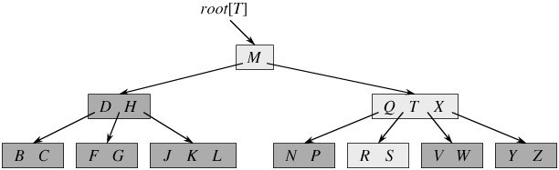- 每个叶子结点具有相同的深度，即树的高度h。
- 每一个结点能包含的关键字数有一个上界和下界，这些界可用B树的最小度数t来表示（t-1 <= n <= 2t-1）：
- 每个非根的结点必须至少含有t-1个关键字。每个非根的内结点至少有t个子女。如果树是非空的，则根结点至少包含一个关键字（同时意味着2个子女，根结点的下限永远是1个关键字，2个女子）；
- 每个结点可包含至多2t-1个关键字。所以一个内结点至多可有2t个子女。如果一个结点恰好有2t-1个关键字，我们就说这个结点是满的；
- 每个非终端结点中包含有n个关键字信息： (n，P0，K1，P1，K2，P2，……，Kn，Pn)。其中：
- Ki (i=1…n)为关键字，且关键字按顺序升序排序K(i-1)< Ki。
- Pi为指向子树根的接点，且指针P(i-1)指向子树种所有结点的关键字均小于Ki，但都大于K(i-1)。
- 关键字的个数n必须满足：t-1 <= n <= 2t-1。
当t=2时为最简单的B树，又称为2-3-4树，即每个结点的孩子数可能为2,3,4个；包含的关键字个数为1,2,3个。
- 与红黑树相比，这里我们看到了B树的能力，虽然两者的高度都以O(lgn)的速度增长，但对于B树来说底要大很多倍。对大多数的树的操作来说，要查找的结点数在B树中要比红黑树中少大约lgt的因子。因为在树中查找任意一个结点通常需要一次磁盘存取，所以磁盘存取的次数大大的减少了。
如果让我来实现一个数据库系统，我肯定也会选取类似B树的数据结构作为基本。
B树首先一是棵查找树，所以它的查找操作将会非常简单和高效。
B树的插入操作 ：插入操作一定发生在叶子结点，因为B树首先必须是一棵查找树。
这是我的代码所使用的思路：因为插入操作肯定是在叶子结点上进行的,首先顺着书向下走直到要进行插入操作的叶子结点将新值插入到该叶子结点中去. 如果因为这个插入操作而使用该结点的值的个数>2*t-1的上界，就需要递归向上进行分裂操作。如果分裂到了根结点，还要处理树长高的情况。这种思路简单，但不是很高效，因为经过了两趟，一趟向下；一趟向上。
《算法导论》上介绍的方法则比较好：边下行边分裂，当沿着树往下查找新关键字时所属位置时，就分裂沿途遇到的每个满结点（包含叶结点本身）。因此每当要分裂一个满结点时，就能确保它的双亲不是满的。这种方法只需要一趟就可以完成，极大的减少磁盘的读取次数，而这正是B树所设计追求的，因而这种一趟的方法是更优的！
但是我的代码只实现了我自己的简单方法，书上的方法实现起来应该也不难。
插入操作时B树的分裂是B树升高的唯一途径！
B树的删除操作 ：删除操作稍微复杂一些，因为删除操作不仅仅会发生在叶子结点，还可能会发生在内结点，这与插入操作不同。但是可以通过一个技巧消除这一点，找到要删除结点的前驱，然后与要删除的结点的关键值进行对调，再删除这个前驱结点就可以保证每次要删除的都是叶子结点。
同样有可以进行边下行边合并的快速方法，而同样，我这里的代码也没有实现这种快速的方法，而是选用了传统的两趟的删除方法，具体如下：
任一关键字K的中序前趋(后继)必是K的左子树(右子树)中最右(左)下的结点中最后(最前)一个关键字。根据B树的性质：B树上每一个结点的Key的个数必须为[t-1, 2*t-1]之间，所以这里的Min = t - 1。若被删关键字K所在的结点非树叶，则用K的中序前趋(或后继)K’取代K，然后从叶子中删去K’。从叶子*x开始删去某关键字K的三种情形为：
- 情形一：若x->keynum>Min，则只需删去K及其右指针(*x是叶子，K的右指针为空)即可使删除操作结束。
- 情形二：若x->keynum=Min，该叶子中的关键字个数已是最小值，删K及其右指针后会破坏B-树的性质(3)。若*x的左(或右)邻兄弟结点*y中的关键字数目大于Min，则将*y中的最大(或最小)关键字上移至双亲结点*parent中，而将*parent中相应的关键字下移至x中。显然这种移动使得双亲中关键字数目不变；*y被移出一个关键字，故其keynum减1，因它原大于Min，故减少1个关键字后keynum仍大于等于Min；而*x中已移入一个关键字，故删K后*x中仍有Min个关键字。涉及移动关键字的三个结点均满足B-树的性质(3)。 请读者验证，上述操作后仍满足B-树的性质(1)。移动完成后，删除过程亦结束。
- 情形三：若*x及其相邻的左右兄弟(也可能只有一个兄弟)中的关键字数目均为最小值Min，则上述的移动操作就不奏效，此时须*x和左或右兄弟合并。不妨设*x有右邻兄弟*y(对左邻兄弟的讨论与此类似)，在*x中删去K及其右子树后，将双亲结点*parent中介于*x和*y之间的关键字K，作为中间关键字，与并x和*y中的关键字一起”合并”为一个新的结点取代*x和*y。因为*x和*y原各有Min个关键字，从双亲中移人的K’抵消了从*x中删除的K，故新结点中恰有2Min(即2「m/2」-2≤m-1)个关键字，没有破坏B-树的性质(3)。但由于K’从双亲中移到新结点后，相当于从*parent中删去了K’，若parent->keynum原大于Min，则删除操作到此结束；否则，同样要通过移动*parent的左右兄弟中的关键字或将*parent与其 左右兄弟合并的方法来维护B-树性质。最坏情况下，合并操作会向上传播至根，当根中只有一个关键字时，合并操作将会使根结点及其两个孩子合并成一个新的根，从而使整棵树的高度减少一层。
删除操作看似复杂，但是对一棵高度为h的B树，它只需要O(h)次磁盘操作，因为在递归调用的过程之间，仅需要O(1)次对disk-read,disk-write的调用，时间复杂度为O(th)=O(tlogtn).
1 2 3 4 5 6 7 8 9 10 11 12 13 14 15 16 17 18 19 20 21 22 23 24 25 26 27 28 29 30 31 32 33 34 35 36 37 38 39 40 41 42 43 44 45 46 47 48 49 50 51 52 53 54 55 56 57 58 59 60 61 62 63 64 65 66 67 68 69 70 71 72 73 74 75 76 77 78 79 80 81 82 83 84 85 86 87 88 89 90 91 92 93 94 95 96 97 98 99 100 101 102 103 104 105 106 107 108 109 110 111 112 113 114 115 116 117 118 119 120 121 122 123 124 125 126 127 128 129 130 131 132 133 134 135 136 137 138 139 140 141 142 143 144 145 146 147 148 149 150 151 152 153 154 155 156 157 158 159 160 161 162 163 164 165 166 167 168 169 170 171 172 173 174 175 176 177 178 179 180 181 182 183 184 185 186 187 188 189 190 191 192 193 194 195 196 197 198 199 200 201 202 203 204 205 206 207 208 209 210 211 212 213 214 215 216 217 218 219 220 221 222 223 224 225 226 227 228 229 230 231 232 233 234 235 236 237 238 239 240 241 242 243 244 245 246 247 248 249 250 251 252 253 254 255 256 257 258 259 260 261 262 263 264 265 266 267 268 269 270 271 272 273 274 275 276 277 278 279 280 281 282 283 284 285 286 287 288 289 290 291 292 293 294 295 296 297 298 299 300 301 302 303 304 305 306 307 308 309 310 311 312 313 314 315 316 317 318 319 320 321 322 323 324 325 326 327 328 329 330 331 332 333 334 335 336 337 338 339 340 341 342 343 344 345 346 347 348 349 350 351 352 353 354 355 356 357 358 359 360 361 362 363 364 365 366 367 368 369 370 371 372 373 374 375 376 377 378 379 380 381 382 383 384 385 386 387 388 389 390 391 392 393 394 395 396 397 398 399 400 401 402 403 404 405 406 407 408 409 410 411 412 413 414 415 416 417 418 419 420 421 422 423 424 425 426 427 428 429 430 431 432 433 434 435 436 437 438 439 440 441 442 443 444 445 446 447 448 449 450 451 452 453 454 455 456 457 | /**
* @file B_tree.cpp
* @brief B树
*
* Distributed under the GPL License version 3, see: http://www.gnu.org/licenses
* Author: chuanqi.tan(at)gmail.com
*/
#include <iostream>
#include <algorithm>
#include <vector>
#include <string>
#include <sstream>
#include <cassert>
#include "graphviz_shower.h"
using namespace std;
namespace ita {
/// @brief B树
///
/// B-树是<b>二叉排序树</b>的推广\n
/// 一棵t(t≥2，t为B树的最小度数)阶的B-树是满足如下性质的m叉树：\n
/// - 每个结点至少包含下列数据域：\n
/// (j，P0，Kl，P1，K2，…，Ki，Pi)\n
/// 其中：\n
/// - j为关键字总数
/// - Ki(1≤i≤j)是关键字，关键字序列递增有序：K1 <K2<…<Ki。
/// - Pi(0≤i≤j)是孩子指针。对于叶结点，每个Pi为空指针。
/// - 注意：
/// - 实用中为节省空间，叶结点中可省去指针域Pi，但必须在每个结点中增加一个标志域leaf，其值为真时表示叶结点，
/// 否则为内部结点。
/// - 在每个内部结点中，假设用keys(Pi)来表示子树Pi中的所有关键字，则有：\n
/// keys(P0)<K1<keys(P1)<K2<…<Ki<keys(Pi)\n
/// 即关键字是分界点，任一关键字Ki左边子树中的所有关键字均小于Ki，右边子树中的所有关键字均大于Ki。
///
/// - 所有叶子是在同一层上，叶子的层数为树的高度h。
/// - 每个非根结点中所包含的关键字个数j满足：\n
/// t - 1 ≤ j ≤ 2*t - 1\n
/// 即每个非根结点至少应有 t-1 个关键字，至多有 2*t-1 个关键字。\n
/// 因为每个内部结点的度数正好是关键字总数加1，故每个非根的内部结点至少有t个子树，至多有2*t棵子树。\n
/// - 若树非空，则根至少有1个关键字，故若根不是叶子，则它至少有2棵子树。根至多有2*t-1个关键字，故至多有2*t棵子树。\n
class BTree {
public:
/// B树中的一个结点
struct BTreeNode {
vector<int> Keys;
vector<BTreeNode *> Childs;
BTreeNode *Parent; ///< 父结点。当该结点是树的根结点时，Parent结点为nullptr
bool IsLeaf; ///< 是否为叶子结点
BTreeNode() : Parent( nullptr ), IsLeaf( true ) {}
size_t KeysSize() {
return Keys.size();
}
};
/// 构造一棵最小度为t的B树(t>=2)
BTree( int t ) : _root( nullptr ), _t( t ) {
assert( t >= 2 );
}
~BTree() {
_ReleaseNode( _root );
}
/// @brief B树的查找操作
///
/// 在B-树中查找给定关键字的方法类似于二叉排序树上的查找。不同的是在每个结点上确定向下查找的路径不一定是二路而是
/// keynum+1路的。\n
/// 实现起来还是相当容易的!
pair<BTreeNode *, size_t> Search( int key ) {
return _SearchInNode( _root, key );
}
/// @brief 插入一个值的操作
///
/// 这里没有使用《算法导论》里介绍的一趟的方法，而是自己想象出来的二趟的方法
/// 效率肯定不如书上介绍的一趟优美，但是能解决问题。\n
/// 因为插入操作肯定是在叶子结点上进行的,首先顺着书向下走直到要进行插入操作的叶子结点将新值插入到该叶子结点中去.
/// 如果因为这个插入操作而使用该结点的值的个数>2*t-1的上界，就需要递归向上进行分裂操作。
/// 如果分裂到了根结点，还要处理树长高的情况。\n
/// 树只有在进行分裂操作时才会长高！
bool Insert( int new_key ) {
if ( _root == nullptr ) { //空树
_root = new BTreeNode();
_root->IsLeaf = true;
_root->Keys.push_back( new_key );
return true;
}
if ( Search( new_key ).first == nullptr ) { //是否已经存在该结点
BTreeNode *node = _root;
while ( !node->IsLeaf ) {
int index = 0;
while ( index < node->Keys.size() && new_key >= node->Keys[index] ) {
++index;
}
node = node->Childs[index];
}
//插入到Keys里去
node->Keys.insert( find_if( node->Keys.begin(), node->Keys.end(), bind2nd( greater<int>(), new_key ) ), new_key );
//再递归向上处理结点太大的情况
while ( node->KeysSize() > 2 * _t - 1 ) {
//=====开始分裂======
int prove_node_key = node->Keys[node->KeysSize() / 2 - 1]; // 要提升的结点的key
//后半部分成为一个新节点
BTreeNode *new_node = new BTreeNode();
new_node->IsLeaf = node->IsLeaf;
new_node->Keys.insert( new_node->Keys.begin(), node->Keys.begin() + node->KeysSize() / 2, node->Keys.end() );
new_node->Childs.insert( new_node->Childs.begin(), node->Childs.begin() + node->Childs.size() / 2, node->Childs.end() );
assert( new_node->Childs.empty() || new_node->Childs.size() == new_node->Keys.size() + 1 );
for_each( new_node->Childs.begin(), new_node->Childs.end(), [&]( BTreeNode * c ) {
c->Parent = new_node;
} );
//把后半部分从原来的节点中删除
node->Keys.erase( node->Keys.begin() + node->KeysSize() / 2 - 1, node->Keys.end() );
node->Childs.erase( node->Childs.begin() + node->Childs.size() / 2, node->Childs.end() );
assert( node->Childs.empty() || node->Childs.size() == node->Keys.size() + 1 );
BTreeNode *parent_node = node->Parent;
if ( parent_node == nullptr ) { //分裂到了根结点，树要长高了，需要NEW一个结点出来
parent_node = new BTreeNode();
parent_node->IsLeaf = false;
parent_node->Childs.push_back( node );
_root = parent_node;
}
node->Parent = new_node->Parent = parent_node;
auto insert_pos = find_if( parent_node->Keys.begin()
, parent_node->Keys.end()
, bind2nd( greater<int>(), prove_node_key ) ) - parent_node->Keys.begin();
parent_node->Keys.insert( parent_node->Keys.begin() + insert_pos, prove_node_key );
parent_node->Childs.insert( parent_node->Childs.begin() + insert_pos + 1, new_node );
node = parent_node;
}
return true;
}
return false;
}
/// @brief 删除一个结点的操作
///
/// 删除操作参考了这篇文章：http://student.zjzk.cn/course_ware/data_structure/web/chazhao/chazhao9.3.2.5.htm \n
/// 任一关键字K的中序前趋(后继)必是K的左子树(右子树)中最右(左)下的结点中最后(最前)一个关键字。\n
/// 根据B树的性质：B树上每一个结点的Key的个数必须为[t-1, 2*t-1]之间，所以这里的Min = t - 1\n
/// 若被删关键字K所在的结点非树叶，则用K的中序前趋(或后继)K'取代K，然后从叶子中删去K'。\n
/// 从叶子*x开始删去某关键字K的三种情形为：\n
/// - 情形一：若x->keynum>Min，则只需删去K及其右指针(*x是叶子，K的右指针为空)即可使删除操作结束。\n
/// - 情形二：若x->keynum=Min，该叶子中的关键字个数已是最小值，删K及其右指针后会破坏B-树的性质(3)。\n
/// 若*x的左(或右)邻兄弟结点*y中的关键字数目大于Min，则将*y中的最大(或最小)关键字上移至双亲结点*parent中
/// ，而将*parent中相应的关键字下移至x中。显然这种移动使得双亲中关键字数目不变；*y被移出一个关键字，故其
/// keynum减1，因它原大于Min，故减少1个关键字后keynum仍大于等于Min；而*x中已移入一个关键字，故删K后*x中
/// 仍有Min个关键字。涉及移动关键字的三个结点均满足B-树的性质(3)。 上述操作后仍满足B树的性质(1)。
/// 移动完成后，删除过程亦结束。\n
/// - 情形三：若*x及其相邻的左右兄弟(也可能只有一个兄弟)中的关键字数目均为最小值Min，则上述的移动操作就不奏效，
/// 此时须*x和左或右\n
/// 兄弟合并。不妨设*x有右邻兄弟*y(对左邻兄弟的讨论与此类似)，在*x中删去K及其右子树后，将双亲结点*parent
/// 中介于*x和*y之间的关键\n
/// 字K，作为中间关键字，与并x和*y中的关键字一起"合并"为一个新的结点取代*x和*y。因为*x和*y原各有Min个关
/// 键字，从双亲中移人的K'抵\n
/// 消了从*x中删除的K，故新结点中恰有2Min(即2「m/2」-2≤m-1)个关键字，没有破坏B-树的性质(3)。但由于K'从
/// 双亲中移到新结点后，相当\n
/// 于从*parent中删去了K'，若parent->keynum原大于Min，则删除操作到此结束；否则，同样要通过移动*parent的
/// 左右兄弟中的关键字或将\n
/// *parent与其 左右兄弟合并的方法来维护B-树性质。最坏情况下，合并操作会向上传播至根，当根中只有一个关键
/// 字时，合并操作将会使根结\n
/// 点及其两个孩子合并成一个新的根，从而使整棵树的高度减少一层。<br/>
/// @note 现在回头看来，这种分二趟的方法也就只适合于学院派，在内存中操作操作还行，真正的系统中决不可能用这
/// 样的方法，减少磁盘的访问次数是一切工作的重心。其实书上描述的一趟方法也并不难以实现，一定要找机会
/// 来实现它！
bool Delete( int key_to_del ) {
auto found_node = Search( key_to_del );
if ( found_node.first == nullptr ) { //找不到值为key_to_del的结点
return false;
}
if ( !found_node.first->IsLeaf ) { //当要删除的结点不是叶子结点时用它的前驱来替换，再删除它的前驱
//前驱
BTreeNode *previous_node = found_node.first->Childs[found_node.second];
while ( !previous_node->IsLeaf ) {
previous_node = previous_node->Childs[previous_node->Childs.size() - 1];
}
//替换
found_node.first->Keys[found_node.second] = previous_node->Keys[previous_node->Keys.size() - 1];
found_node.first = previous_node;
found_node.second = previous_node->Keys.size() - 1;
}
//到这里，found_node一定是叶子结点
assert( found_node.first->IsLeaf );
_DeleteLeafNode( found_node.first, found_node.second );
return true;
}
/// 使用Graphiviz显示当前B树的内部结构
void Display() {
stringstream ss;
ss << "digraph graphname" << ( rand() % 1000 ) << "{" << endl
<< " node [shape = record,height = .1];" << endl;
_GetDotLanguageViaNodeAndEdge( ss, _root );
ss << "}" << endl;
qi::ShowGraphvizViaDot( ss.str() );
}
private:
void _ReleaseNode( BTreeNode *node ) {
for_each( node->Childs.begin(), node->Childs.end(), [&]( BTreeNode * c ) {
_ReleaseNode( c );
} );
delete node;
}
/// @brief 删除B树中的一个叶子结点
///
/// @param node 要删除的叶子结点！
/// @param index 要删除的叶子结点上的第几个值
/// @note 必须保证传入的node结点为叶子结点
void _DeleteLeafNode( BTreeNode *node, size_t index ) {
assert( node && node->IsLeaf );
if ( node == _root ) {
//要删除的值在根结点上，并且此时根结点也是叶子结点，因为本方法被调用时要保证node参数是叶子结点
_root->Keys.erase( _root->Keys.begin() + index );
if ( _root->Keys.empty() ) {
//成为了一棵空B树
delete _root;
_root = nullptr;
}
return;
}
//以下是非根结点的情况
if ( node->Keys.size() > _t - 1 ) {
//要删除的结点中Key的数目>t-1，因此再-1也不会打破B树的性质
node->Keys.erase( node->Keys.begin() + index );
} else { //会打破平衡
//是否借到了一个顶点
bool borrowed = false;
//试着从左兄弟借一个结点
BTreeNode *left_brother = _GetLeftBrother( node );
if ( left_brother && left_brother->Keys.size() > _t - 1 ) {
int index_in_parent = _GetIndexInParent( left_brother );
BTreeNode *parent = node->Parent;
node->Keys.insert( node->Keys.begin(), parent->Keys[index_in_parent] );
parent->Keys[index_in_parent] = left_brother->Keys[left_brother->KeysSize() - 1];
left_brother->Keys.erase( left_brother->Keys.end() - 1 );
++index;
borrowed = true;
} else {
//当左兄弟借不到时，试着从右兄弟借一个结点
BTreeNode *right_brother = _GetRightBrother( node );
if ( right_brother && right_brother->Keys.size() > _t - 1 ) {
int index_in_parent = _GetIndexInParent( node );
BTreeNode *parent = node->Parent;
node->Keys.push_back( parent->Keys[index_in_parent] );
parent->Keys[index_in_parent] = right_brother->Keys[0];
right_brother->Keys.erase( right_brother->Keys.begin() );
borrowed = true;
}
}
if ( borrowed ) {
//因为借到了结点，所以可以直接删除结点
_DeleteLeafNode( node, index );
} else {
//左右都借不到时先删除再合并
node->Keys.erase( node->Keys.begin() + index );
_UnionNodes( node );
}
}
}
/// @brief node找一个相邻的结点进行合并
///
/// 优先选取左兄弟结点，再次就选择右兄弟结点
void _UnionNodes( BTreeNode * node ) {
if ( node ) {
if ( node == _root ) { //node是头结点
if ( _root->Keys.empty() ) {
//头结点向下移动一级，此时树的高度-1
_root = _root->Childs[0];
_root->Parent = nullptr;
delete node;
return;
}
} else {
if ( node->KeysSize() < _t - 1 ) {
BTreeNode *left_brother = _GetLeftBrother( node );
if ( left_brother == nullptr ) {
left_brother = _GetRightBrother( node );
swap( node, left_brother );
}
//与左兄弟进行合并
int index_in_parent = _GetIndexInParent( left_brother );
node->Keys.insert( node->Keys.begin(), node->Parent->Keys[index_in_parent] );
node->Parent->Keys.erase( node->Parent->Keys.begin() + index_in_parent );
node->Parent->Childs.erase( node->Parent->Childs.begin() + index_in_parent + 1 );
left_brother->Keys.insert( left_brother->Keys.end(), node->Keys.begin(), node->Keys.end() );
left_brother->Childs.insert( left_brother->Childs.begin(), node->Childs.begin(), node->Childs.end() );
for_each( left_brother->Childs.begin(), left_brother->Childs.end(), [&]( BTreeNode * c ) {
c->Parent = left_brother;
} );
delete node;
_UnionNodes( left_brother->Parent );
}
}
}
}
pair<BTreeNode *, size_t> _SearchInNode( BTreeNode *node, int key ) {
if ( !node ) {
//未找到，树为空的情况
return make_pair( static_cast<BTreeNode *>( nullptr ), 0 );
} else {
int index = 0;
while ( index < node->Keys.size() && key >= node->Keys[index] ) {
if ( key == node->Keys[index] ) {
return make_pair( node, index );
} else {
++index;
}
}
if ( node->IsLeaf ) {
//已经找到根了，不能再向下了未找到
return make_pair( static_cast<BTreeNode *>( nullptr ), 0 );
} else {
return _SearchInNode( node->Childs[index], key );
}
}
}
void _GetDotLanguageViaNodeAndEdge( stringstream &ss, BTreeNode *node ) {
if ( node && !node->Keys.empty() ) {
int index = 0;
ss << " node" << node->Keys[0] << "[label = \"";
while ( index < node->Keys.size() ) {
ss << "<f" << 2 * index << ">|";
ss << "<f" << 2 * index + 1 << ">" << node->Keys[index] << "|";
++index;
}
ss << "<f" << 2 * index << ">\"];" << endl;;
if ( !node->IsLeaf ) {
for ( int i = 0; i < node->Childs.size(); ++i ) {
BTreeNode *c = node->Childs[i];
ss << " \"node" << node->Keys[0] << "\":f" << 2 * i << " -> \"node" << c->Keys[0] << "\":f" << ( 2 * c->Keys.size() + 1 ) / 2 << ";" << endl;
}
}
for_each( node->Childs.begin(), node->Childs.end(), [&]( BTreeNode * c ) {
_GetDotLanguageViaNodeAndEdge( ss, c );
} );
}
}
/// 得到一个结点的左兄弟结点，如果不存在左兄弟结点则返回nullptr
BTreeNode * _GetLeftBrother( BTreeNode *node ) {
if ( node && node->Parent ) {
BTreeNode *parent = node->Parent;
for ( int i = 1; i < parent->Childs.size(); ++i ) {
if ( parent->Childs[i] == node ) {
return parent->Childs[i - 1];
}
}
}
return nullptr;
}
/// 得到一个结点的右兄弟结点，如果不存在右兄弟结点则返回nullptr
BTreeNode * _GetRightBrother( BTreeNode *node ) {
if ( node && node->Parent ) {
BTreeNode *parent = node->Parent;
for ( int i = 0; i < static_cast<int>( parent->Childs.size() ) - 1; ++i ) {
if ( parent->Childs[i] == node ) {
return parent->Childs[i + 1];
}
}
}
return nullptr;
}
/// 得到一个结点在其父结点中属于第几个子结点
/// @return 返回-1时表示错误
int _GetIndexInParent( BTreeNode *node ) {
assert( node && node->Parent );
for ( int i = 0; i < node->Parent->Childs.size(); ++i ) {
if ( node->Parent->Childs[i] == node ) {
return i;
}
}
return -1;
}
BTreeNode *_root; ///< B树的根结点指针
int _t; ///< B树的 最小度数。即所有的结点的Keys的个数应该t-1 <= n <= 2t-1，除了根结点可以最少为1个Key
};
/// B树
void testBTree() {
BTree btree( 3 );
for ( int i = 0; i < 20; ++i ) {
btree.Insert( rand() % 100 + 1 );
}
btree.Display();
for ( int i = 1; i <= 100; i += 2 ) {
btree.Delete( i );
}
btree.Display();
for ( int i = 0; i <= 100; i += 2 ) {
btree.Delete( i );
}
btree.Display();
for ( int i = 0; i < 30; ++i ) {
btree.Insert( rand() % 1000 + 1 );
}
//btree.Delete(501);
////btree.Display();
//btree.Delete(869);
//btree.Delete(896);
//btree.Display();
//btree.Delete(828);
btree.Display();
}
}
int main() {
ita::testBTree();
return 0;
}
|
{kind=link}
第19章：二项堆¶
可合并堆就是普通的堆+支持decrease-key,union操作，但是应该高效的实现union操作是可合并堆最关键的部分。
如果不需要高效的支持UNION操作，则普通的堆结构就很好了
- 对于 所有的堆结构：二叉堆、二项堆、斐波那契堆。它们的search操作都是很慢的 ，不能高效的支持search操作！
因而在decrease-key和delete等涉及结点的操作时都需要一个指向结点的指针。
一个二项堆是由一组二项树所构成的。
二项树是一种递归的定义:
- 二项树B[0]仅仅包含一个节点
- B[k]是由两棵B[k-1]二项树组成，其中一颗树是另外一颗树的子树。
下面是B0 - B4二项树：
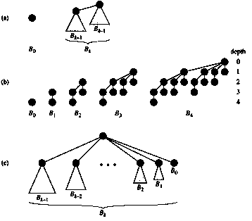显然二项树具有如下的性质：
- 对于树B[k]该树含有2^k个节点；
- 树的高度是k；
- 在深度为i中含有Cik节点，其中i = 0， 1，2 … , k;
二项堆是由一组满足下面的二项树组成：
- H中的每个二项树遵循最小堆性质：结点的关键字大于或等于其父结点的关键字。我们说这种树是最小堆有序的。
- 对于任意的整数k的话，在H不存在另外一个度数也是k的二项树；即至多（有0或1棵）有一棵二项树的根具有度数K。
第一个性质保证了二项树的根结点包含了最小的关键字。第二个性质则说明结点数为n的二项堆最多只有logn + 1棵二项树。
- 就像二进制的0、1可以表示出任意的数值，任意个结点数的堆也可以由二项堆来表示。
例如：13<1101>个结点的堆可由二项树B3,B2,B0来表示出来。
根表：一个二项堆中的各二项树的根被组织成一个键表，我们称之为根表！
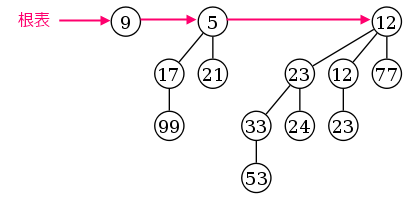二项堆的最重要的一个操作就是UNION操作，其它的操作都可以在UNION操作的基础上轻松的实现。
大概思路为：将两个二项堆的根表连接起来组成一个大的二项树的连接，按”度”的单调递增顺序进行排序之后，从左至右来消除具有重复度的二项树。因为原本的每个二项堆中任意度K至多只有一个相应的二项树，所以这个消除重复的操作会非常容易。从小到大找到两个相同度K的二项树，然后连接成一个K+1度的二项树，直到链尾时合并完毕。
此时的二项堆就满足对任意度K至多只有一棵二项树。此操作的时间复杂度为O(logn)
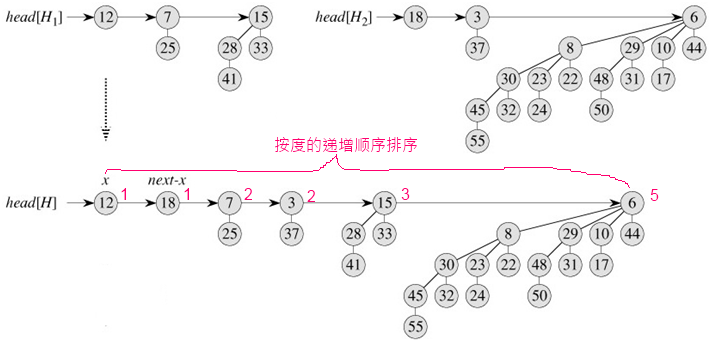其它的操作都可以通过将UNION操作作为基础操作来实现 ：
插入：NEW一个一个结点的二项堆，然后调用UNION与原二项堆来进行合并
抽取最小关键字的结点：
- 从原二项堆的根键上取下最小关键字结点的二项树，独立出来；
- 将独立出来的二项树的根结点去掉（这就是整个二项堆的最小关键字），然后将它的子结点逆转并组合成为一个不含最小值的二项堆；
- 最后将这个新的二项堆与原来剩下的二项堆进行合并操作。
减少关键字：将要减小的关键字与它的父结点进行比较，如果需要就进行交换操作直到根链。使得该关键字在堆中”冒泡上升”直到正确的位置。
删除一个关键字（调用其它操作实现）:
decrease-key(x, -max) extract-min()
1 2 3 4 5 6 7 8 9 10 11 12 13 14 15 16 17 18 19 20 21 22 23 24 25 26 27 28 29 30 31 32 33 34 35 36 37 38 39 40 41 42 43 44 45 46 47 48 49 50 51 52 53 54 55 56 57 58 59 60 61 62 63 64 65 66 67 68 69 70 71 72 73 74 75 76 77 78 79 80 81 82 83 84 85 86 87 88 89 90 91 92 93 94 95 96 97 98 99 100 101 102 103 104 105 106 107 108 109 110 111 112 113 114 115 116 117 118 119 120 121 122 123 124 125 126 127 128 129 130 131 132 133 134 135 136 137 138 139 140 141 142 143 144 145 146 147 148 149 150 151 152 153 154 155 156 157 158 159 160 161 162 163 164 165 166 167 168 169 170 171 172 173 174 175 176 177 178 179 180 181 182 183 184 185 186 187 188 189 190 191 192 193 194 195 196 197 198 199 200 201 202 203 204 205 206 207 208 209 210 211 212 213 214 215 216 217 218 219 220 221 222 223 224 225 226 227 228 229 230 231 232 233 234 235 236 237 238 239 240 241 242 243 244 245 246 247 248 249 250 251 252 253 254 255 256 257 258 259 260 261 262 263 264 265 266 267 268 269 270 271 272 273 274 275 276 277 278 279 280 281 282 283 284 285 286 287 288 289 290 291 292 293 294 295 296 297 298 299 300 301 302 303 304 305 306 307 308 309 310 311 312 313 314 315 316 317 318 319 320 321 322 323 324 325 326 327 328 329 330 331 332 333 334 335 336 337 338 339 340 341 342 343 344 345 346 347 348 349 350 351 352 353 354 355 356 357 358 359 360 361 | /**
* @file binomial_heaps.cpp
* @brief 二项堆
*
* Distributed under the GPL License version 3, see: http://www.gnu.org/licenses
* Author: chuanqi.tan(at)gmail.com
*/
#include <iostream>
#include <algorithm>
#include <vector>
#include <string>
#include <sstream>
#include <cassert>
#include "graphviz_shower.h"
using namespace std;
namespace ita {
/// @brief 二项堆
///
/// 二项堆是由<b>一组</b>满足下面的<b>二项树</b>组成：\n
/// - H中的每个二项树遵循<span style="color:#FF0000 ">最小堆性质：结点的关键字大于或等于其父结点的关键字</span>。
/// 我们说这种树是最小堆有序的。
/// - 对于任意的整数k的话，在H不存在另外一个度数也是k的二项树；即<span style="color:#FF0000 ">至多</span>（有0或1棵）
/// 有一棵二项树的根具有度数K。（与二进制太类似了，估计是受二进制启发而来的）
///
/// 第一个性质保证了二项树的根结点包含了最小的关键字。第二个性质则说明结点数为n的二项堆最多只有logn + 1棵二项树。\n
/// 二项树是一种递归的定义:\n
/// - 二项树B[0]仅仅包含一个节点
/// - B[k]是由两棵B[k-1]二项树组成，其中一颗树是另外一颗树的子树。
template<typename KeyType>
class BinomialHeap {
public:
/// 二项堆中的一个结点
struct BinomialHeapNode {
BinomialHeapNode *Parent;
BinomialHeapNode *Child;
BinomialHeapNode *Sibling;
unsigned int Degree;
KeyType Key;
};
/// 建立一个空的二项堆
BinomialHeap() {
_head_list = nullptr;
}
/// 析构
~BinomialHeap() {
BinomialHeapNode *tree = _head_list;
//遍历根链进行清理操作
while ( tree ) {
auto next = tree->Sibling;
_DeleteTree( tree );
tree = next;
}
}
/// 在二项堆中插入一个新结点
void Insert( KeyType new_key ) {
BinomialHeap new_heap;
new_heap._head_list = new BinomialHeapNode();
new_heap._head_list->Parent = new_heap._head_list->Child = new_heap._head_list->Sibling = nullptr;
new_heap._head_list->Degree = 0;
new_heap._head_list->Key = new_key;
this->Union( new_heap );
}
/// 获取堆中的最小元素值
KeyType Mininum() const {
vector<KeyType> values_in_head_list;
BinomialHeapNode *node = _head_list;
while ( node != nullptr ) {
values_in_head_list.push_back( node->Key );
node = node->Sibling;
}
return *min_element( values_in_head_list.begin(), values_in_head_list.end() );
}
/// 弹出二项堆中的最小元素，并获取该最小元素的值
KeyType ExtractMinium() {
vector<BinomialHeapNode *> head_nodes;
BinomialHeapNode *l = _head_list;
while ( l ) {
head_nodes.push_back( l );
l = l->Sibling;
}
auto min_ele = min_element( head_nodes.begin(), head_nodes.end(), []( BinomialHeapNode * left, BinomialHeapNode * right ) {
return left->Key < right->Key;
} );
int min_index = min_ele - head_nodes.begin();
KeyType min_value = ( *min_ele )->Key;
BinomialHeapNode *min_node = head_nodes[min_index];
if ( min_index == 0 ) {
if ( head_nodes.size() > 1 ) {
_head_list = head_nodes[1];
} else {
//根链上只有一个元素
_head_list = nullptr;
}
} else if ( min_index == head_nodes.size() - 1 ) {
head_nodes[min_index - 1]->Sibling = nullptr;
} else {
head_nodes[min_index - 1]->Sibling = head_nodes[min_index + 1];
}
BinomialHeap new_head;
new_head._head_list = min_node->Child;
BinomialHeapNode *x = new_head._head_list;
while ( x ) {
x->Parent = nullptr;
x = x->Sibling;
}
this->Union( new_head );
delete min_node;
return min_value;
}
/// @brief 对一个结点的值进行缩小操作
///
/// @note x结点的新值k必须比x结点的原值小
void Decrease( BinomialHeapNode *x, KeyType k ) {
if ( k > x->Key ) {
throw logic_error( "只能减小不能增大" );
}
x->Key = k;
BinomialHeapNode *y = x;
BinomialHeapNode *z = y->Parent;
while ( z && y->Key < z->Key ) {
swap( y->Key, z->Key );
y = z;
z = y->Parent;
}
}
/// 删除一个结点
void Delete( BinomialHeapNode *node ) {
if ( node ) {
Decrease( node, numeric_limits<KeyType>::min() );
ExtractMinium();
}
}
/// @brief 联合另外一个二项堆
///
/// 将另外一个二项堆联合到本二项堆,当联合操作完成之后,other的二项堆中的数据将无效
void Union( BinomialHeap &other ) {
vector<BinomialHeapNode *> nodes;
BinomialHeapNode *l = _head_list;
BinomialHeapNode *r = other._head_list;
while ( l ) {
nodes.push_back( l );
l = l->Sibling;
}
while ( r ) {
nodes.push_back( r );
r = r->Sibling;
}
if ( nodes.empty() ) {
return;
}
// sort and merge
sort( nodes.begin(), nodes.end(), []( BinomialHeapNode * left, BinomialHeapNode * right ) {
return left->Degree < right->Degree;
} );
for ( size_t i = 0; i < nodes.size() - 1; ++i ) {
nodes[i]->Sibling = nodes[i + 1];
}
nodes[nodes.size() - 1]->Sibling = nullptr;
// reset head list
this->_head_list = nodes[0];
other._head_list = nullptr; //destory binomial heaps has been unioned
if ( this->_head_list == nullptr ) {
return;
}
// begin to merge nodes in head list with same degree
BinomialHeapNode *prev_x = nullptr;
BinomialHeapNode *x = _head_list;
BinomialHeapNode *next_x = x->Sibling;
while ( next_x ) {
if ( x->Degree != next_x->Degree || ( next_x->Sibling != nullptr && next_x->Sibling->Degree == x->Degree ) ) {
prev_x = x;
x = next_x;
} else if ( x->Key < next_x->Key ) {
x->Sibling = next_x->Sibling;
_Link( next_x, x );
} else {
if ( prev_x == nullptr ) {
_head_list = next_x;
} else {
prev_x->Sibling = next_x;
}
_Link( x, next_x );
x = next_x;
}
next_x = x->Sibling;
}
}
/// @brief 查找一个值为key的结点
///
/// @note 所有的堆对查找操作的支持都很差，时间复杂度为O(n)
BinomialHeapNode * Search( KeyType key ) const {
BinomialHeapNode *tree = _head_list;
//遍历根链
while ( tree ) {
BinomialHeapNode *node = _SearchInTree( tree, key );
if ( node != nullptr ) {
return node;
}
tree = tree->Sibling;
}
return nullptr;
}
/// 二项堆的当前状态是否为空
bool IsEmpty() const {
return _head_list == nullptr;
}
/// 得到二项堆的根链表
BinomialHeapNode * GetHeadList() {
return _head_list;
}
/// 使用Grpahviz显示当前二项堆
void Display() const {
stringstream ss;
ss << "digraph graphname" << "{" << endl
<< " RootList [shape = box];" << endl;
BinomialHeapNode *node = _head_list;
if ( node ) {
ss << " RootList -> " << node->Key << ";" << endl;
}
while ( node ) {
_DisplayTree( ss, node );
if ( node->Sibling ) {
ss << " " << node->Key << " -> " << node->Sibling->Key << ";" << endl;
}
node = node->Sibling;
}
ss << "}" << endl;
qi::ShowGraphvizViaDot( ss.str() );
}
private:
/// 清理一棵“二项树”
void _DeleteTree( BinomialHeapNode *tree ) {
if ( tree ) {
BinomialHeapNode *node = tree->Child;
while ( node ) {
auto next = node->Sibling;
_DeleteTree( node );
node = next;
}
delete tree;
}
}
/// 将D(k-1)度的y结点连接到D(k-1)度的z接点上去，使得z成为一个D(k)度的结点
void _Link( BinomialHeapNode *y, BinomialHeapNode *z ) {
y->Parent = z;
y->Sibling = z->Child;
z->Child = y;
++z->Degree;
}
/// 在一棵二项树中搜索某个结点
BinomialHeapNode * _SearchInTree( BinomialHeapNode *tree, KeyType key ) const {
if ( tree->Key == key ) {
return tree;
}
BinomialHeapNode *node = tree->Child;
while ( node ) {
BinomialHeapNode *n = _SearchInTree( node, key );
if ( n ) {
return n;
}
node = node->Sibling;
}
return nullptr;
}
/// 画一棵二项树
void _DisplayTree( stringstream &ss, BinomialHeapNode *tree ) const {
if ( tree ) {
BinomialHeapNode *child = tree->Child;
if ( child ) {
vector<BinomialHeapNode *> childs;
while ( child ) {
childs.push_back( child );
child = child->Sibling;
}
for_each( childs.begin(), childs.end(), [&]( BinomialHeapNode * c ) {
ss << " " << c->Key << " -> " << tree->Key << ";" << endl;
_DisplayTree( ss, c );
} );
}
}
}
private:
BinomialHeapNode *_head_list; ///< 根链表
};
/// 二项堆
void testBinomialHeaps() {
cout << "二项堆" << endl;
BinomialHeap<int> bh;
for ( int i = 0; i < 10; ++i ) {
bh.Insert( rand() % 100 );
}
bh.Display();
while ( !bh.IsEmpty() ) {
cout << bh.ExtractMinium() << "\t";
}
bh.Display();
for ( int i = 0; i < 64; ++i ) {
int r = rand() % 100;
if ( bh.Search( r ) == nullptr ) {
bh.Insert( r );
}
}
bh.Display();
for ( int i = 0; i < 100; ++i ) {
bh.Delete( bh.Search( i ) );
}
bh.Display();
}
}
int main() {
ita::testBinomialHeaps();
return 0;
}
|
二项堆
15 21 35 49 77 83 86 86 92 93
{kind=link}

第20章：斐波那契堆¶
斐波那契堆与二项堆相比，取消掉了2个限制，因而更加的松散了：
- 斐波那契堆中的树不必要求是二项树
- 根链中的树必没有”每个度数至多只能有一棵树”的要求了
斐波那契堆首先也是一种堆，所以它也满足堆的性质：子结点比父结点大！
斐波那契堆的特点：不涉及删除元素的操作有O(1)的平摊时间。 Extract-Min和Delete的数目和其它相比较小时效率更佳。
斐波那契堆在优化加速图算法中有很大的用途。比如用于解决诸如最小生成树、寻找单源最短路径等问题的快速算法都要用到斐波那契堆。
斐波那契堆由一组树（并不要求二项树）组成。但实际上，这种堆松散地基于二项堆。斐波那契堆的结构比二项堆更松散一些，从而可以改进渐近时间界。对结构的维护工作尽可能的拖延，直到方便时再做。
同任何堆一样：斐波那契堆也不能很好地支持search操作。
与二项堆中的树都是有序的不同，斐波那契堆中的树都是有根而无序的。每个节点包含一个指向其父节点的指针p[x]，以及一个指向其任一子女的指针child[x]（指向子女双链表），因为这些子结点本身就没有顺序关系（兄弟之间是无序的，所以更加松散），所以可以随意的指向。
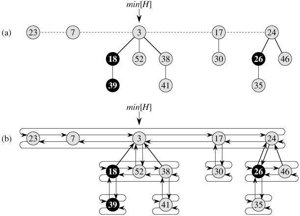其中：mark[x]用于指示自从x上一次成为另一个结点子女以来，它是否失掉了一个孩子，在图中用黑色的结点来表示。
如果仅支持”make-heap, insert, minimum, extract-min, union操作，那么每个斐波那契堆就只是一组”无序的”二项树。
- 对斐波那契堆上的各种可合并堆操作来说，其关键思想就是尽可能久地将工作推后。
这种lazy-compute很可能会大大的改善性质，但是也会造成后面真正进行维护时的算法执行时间的常数因子过大。
斐波那契堆是通过指向根链上的最小结点的指针min[H]来进行访问的。
- 斐波那契堆的日常操作都非常简单，除了extract-min以外：
注：这里的时间复杂度均指的是平摊代价，而非一般使用的最坏情况时间。
插入操作O(1)：直接插入到根链上去，再与最小结点的min[H]进行一下比如，如果比min[H]还小，就将min[H]指针指向新插入的结点。
寻找最小节点O(1)： min[x]指向的节点即为最小节点。
合并两个斐波那契堆O(1)：分为3步： 1：合并根表；2：设置新的min[h]；3。重置n[x]。 斐波那契堆过于松散的性质使得连合并操作都只需要O(1)的时间，只需要合并两个根链就可以了。
抽取最小节点O(lgn)：相对来说这是最复杂的工作。被延迟的对根表的调整工作最终由这个操作进行。
1：去掉根表上的最小值，将这个最小值的每个孩子都加入根表；2：将根表上相同度数树的合并。（一点都不复杂，代码与二项堆一样容易实现）- 这里的在根链上合并操作与二项树基本相同，就是按”度的递增”顺序排列所有的子树之后，合并具有相同度的子树，使得最后的根链上每一个度K都只有至多一棵子树。（这里又与二项堆神似了，所以说斐波那契堆是松散地基于二项堆）。形式化地描述为：
“调整根表的步骤 1：在根表中找出两个具有相同度数的根x和y，且key[x]<key[y] 2：将y与x连接。将y从根表里去掉，成为x一个孩子，并增加degree[x]。同时，如果y上有标记的话也被清除掉。”
减小一个节点的权值O(1)：
- 若此减小不影响堆序，不作调整；
- 若影响堆序，则从堆中删除该节点，将其加入根表，并检查其父亲的mark位；若为false，则停止，并将其置为true；若为true，则删除其父亲，继续递归向上执行；直到一个节点mark域为false或该节点为根节点为止。
删除一个节点O(lgn)：1：将该节点权值调整至最小；2：抽取最小值。
总结：斐波那契堆之所以高效，就是因为它松散了，将很多二项堆要维护的工作都推迟到了extract-min和delete操作之中去了。而它之所以可以这样进行偷懒，就是因为它的限制非常的少，并没有像二项堆一样的要求子树全部必须是二项树，而且根表上的任意度数的子树至多只能有一个。没有了这些限制，斐波那契堆就可以实现的非常的松散以至少将日常工作的维护时间都平摊给extract-min和delete操作。
但是，正如斐波那契堆现在更多的应用于理论中，实践中使用的并不多的现象所映射的，在大部分的应用中斐波那契堆并不能带来大幅度的效率的提升。因为它并不是减少了要做的工作，只是将很多要做的工作都进行了推迟，可能出现这样的情况：
- 合并操作O(lgn)=>O(1)
- 插入操作O(lgn)=>O(1)
- 减少权值操作O(lgn)=>O(1)
- 但是extract-min操作O(lgn)=>O(3*lgn)≈O(lgn)
这使得在理论分析时，它的所有操作的渐近时间都至少不变坏，但是在实际使用中却没有任何的改善。 当然这是最坏的情况了，一般对于规模足够大的输入，斐波那契堆是能够很大改善算法的性能的，尤其是对于一些extract-min和delete操作少的情况。比如斐波那契堆的使用能加快 Prime 和 Djikstra 算法的执行速度。
1 2 3 4 5 6 7 8 9 10 11 12 13 14 15 16 17 18 19 20 21 22 23 24 25 26 27 28 29 30 31 32 33 34 35 36 37 38 39 40 41 42 43 44 45 46 47 48 49 50 51 52 53 54 55 56 57 58 59 60 61 62 63 64 65 66 67 68 69 70 71 72 73 74 75 76 77 78 79 80 81 82 83 84 85 86 87 88 89 90 91 92 93 94 95 96 97 98 99 100 101 102 103 104 105 106 107 108 109 110 111 112 113 114 115 116 117 118 119 120 121 122 123 124 125 126 127 128 129 130 131 132 133 134 135 136 137 138 139 140 141 142 143 144 145 146 147 148 149 150 151 152 153 154 155 156 157 158 159 160 161 162 163 164 165 166 167 168 169 170 171 172 173 174 175 176 177 178 179 180 181 182 183 184 185 186 187 188 189 190 191 192 193 194 195 196 197 198 199 200 201 202 203 204 205 206 207 208 209 210 211 212 213 214 215 216 217 218 219 220 221 222 223 224 225 226 227 228 229 230 231 232 233 234 235 236 237 238 239 240 241 242 243 244 245 246 247 248 249 250 251 252 253 254 255 256 257 258 259 260 261 262 263 264 265 266 267 268 269 270 271 272 273 274 275 276 277 278 279 280 281 282 283 284 285 286 287 288 289 290 291 292 293 294 295 296 297 298 299 300 301 302 303 304 305 306 307 308 309 310 311 312 313 314 315 316 317 318 319 320 321 322 323 324 325 326 327 328 329 330 331 332 333 334 335 336 337 338 339 340 341 342 343 344 345 346 347 348 349 350 351 352 353 354 355 356 357 358 359 360 | #pragma once
/**
* @file fibonacci_heap.cpp
* @brief Fibonacci Heap
*
* @ref http://en.wikipedia.org/wiki/Fibonacci_heap
* @ref http://www.cse.yorku.ca/~aaw/Jason/FibonacciHeapAlgorithm.html
* @author Erel Segal http://tora.us.fm/rentabrain
* @date 2010-11-11
*/
/**
* chuanqi.tan(at)gmail.com 引用说明
*
* 斐波那契堆与二项堆非常类似，就不再自己重新写了。
* 这里的代码转载自：http://ideone.com/9jYnv 这种代码的风格非常现代化我非常喜欢，故引用了这份代码
*/
#include <iostream>
#include <algorithm>
#include <vector>
#include <string>
using namespace std;
namespace ita {
typedef unsigned int uint;
/**
* The heap is a min-heap sorted by Key.
*/
template <typename Data, typename Key> class FibonacciHeapNode {
Key myKey;
Data myData;
uint degree; // number of childern. used in the removeMinimum algorithm.
bool mark; // mark used in the decreaseKey algorithm.
//uint count; // total number of elements in tree, including this. For debug only
FibonacciHeapNode<Data, Key>* previous; // pointers in a circular doubly linked list
FibonacciHeapNode<Data, Key>* next;
FibonacciHeapNode<Data, Key>* child; // pointer to the first child in the list of children
FibonacciHeapNode<Data, Key>* parent;
FibonacciHeapNode() {}
FibonacciHeapNode( Data d, Key k ):
myKey( k ),
myData( d ),
degree( 0 ),
mark( false ),
child( NULL ),
parent( NULL )
//,count(1)
{
previous = next = this; // doubly linked circular list
}
bool isSingle() const {
return ( this == this->next );
}
// inserts a new node after this node
void insert( FibonacciHeapNode<Data, Key>* other ) {
if ( !other )
return;
// For example: given 1->2->3->4->1, insert a->b->c->d->a after node 3:
// result: 1->2->3->a->b->c->d->4->1
this->next->previous = other->previous;
other->previous->next = this->next;
this->next = other;
other->previous = this;
}
void remove() {
this->previous->next = this->next;
this->next->previous = this->previous;
this->next = this->previous = this;
}
void addChild( FibonacciHeapNode<Data, Key>* other ) { // Fibonacci-Heap-Link(other,current)
if ( !child )
child = other;
else
child->insert( other );
other->parent = this;
other->mark = false;
degree++;
//count += other->count;
}
void removeChild( FibonacciHeapNode<Data, Key>* other ) {
if ( other->parent != this )
throw string ( "Trying to remove a child from a non-parent" );
if ( other->isSingle() ) {
if ( child != other )
throw string ( "Trying to remove a non-child" );
child = NULL;
} else {
if ( child == other )
child = other->next;
other->remove(); // from list of children
}
other->parent = NULL;
other->mark = false;
degree--;
//count -= other->count;
}
friend ostream& operator<< ( ostream& out, const FibonacciHeapNode& n ) {
return ( out << n.myData << ":" << n.myKey );
}
void printTree( ostream& out ) const {
out << myData << ":" << myKey << ":" << degree << ":" << mark;
if ( child ) {
out << "(";
const FibonacciHeapNode<Data, Key>* n = child;
do {
if ( n == this )
throw string( "Illegal pointer - node is child of itself" );
n->printTree( out );
out << " ";
n = n->next;
} while ( n != child );
out << ")";
}
}
void printAll( ostream& out ) const {
const FibonacciHeapNode<Data, Key>* n = this;
do {
n->printTree( out );
out << " ";
n = n->next;
} while ( n != this );
out << endl;
}
public:
Key key() const {
return myKey;
}
Data data() const {
return myData;
}
template <typename D, typename K> friend class FibonacciHeap;
}; // FibonacciHeapNode
template <typename Data, typename Key> class FibonacciHeap {
typedef FibonacciHeapNode<Data, Key>* PNode;
PNode rootWithMinKey; // a circular d-list of nodes
uint count; // total number of elements in heap
uint maxDegree; // maximum degree (=child count) of a root in the circular d-list
protected:
PNode insertNode( PNode newNode ) {
//if (debug) cout << "insert " << (*newNode) << endl;
if ( !rootWithMinKey ) { // insert the first myKey to the heap:
rootWithMinKey = newNode;
} else {
rootWithMinKey->insert( newNode ); // insert the root of new tree to the list of roots
if ( newNode->key() < rootWithMinKey->key() )
rootWithMinKey = newNode;
}
return newNode;
}
public:
bool debug, debugRemoveMin, debugDecreaseKey;
FibonacciHeap():
rootWithMinKey( NULL ), count( 0 ), maxDegree( 0 ), debug( false ), debugRemoveMin( false ) {}
~FibonacciHeap() {
/* TODO: remove all nodes */
}
bool empty() const {
return count == 0;
}
PNode minimum() const {
if ( !rootWithMinKey )
throw string( "no minimum element" );
return rootWithMinKey;
}
void printRoots( ostream& out ) const {
out << "maxDegree=" << maxDegree << " count=" << count << " roots=";
if ( rootWithMinKey )
rootWithMinKey->printAll( out );
else
out << endl;
}
void merge ( const FibonacciHeap& other ) { // Fibonacci-Heap-Union
rootWithMinKey->insert( other.rootWithMinKey );
if ( !rootWithMinKey || ( other.rootWithMinKey && other.rootWithMinKey->key() < rootWithMinKey->key() ) )
this->rootWithMinKey = other.rootWithMinKey;
count += other.count;
}
PNode insert ( Data d, Key k ) {
if ( debug ) cout << "insert " << d << ":" << k << endl;
count++;
// create a new tree with a single myKey:
return insertNode( new FibonacciHeapNode<Data, Key>( d, k ) );
}
void removeMinimum() { // Fibonacci-Heap-Extract-Min, CONSOLIDATE
if ( !rootWithMinKey )
throw string( "trying to remove from an empty heap" );
if ( debug ) cout << "removeMinimum" << endl;
count--;
/// Phase 1: Make all the removed root's children new roots:
// Make all children of root new roots:
if ( rootWithMinKey->child ) {
if ( debugRemoveMin ) {
cout << " root's children: ";
rootWithMinKey->child->printAll( cout );
}
PNode c = rootWithMinKey->child;
do {
c->parent = NULL;
c = c->next;
} while ( c != rootWithMinKey->child );
rootWithMinKey->child = NULL; // removed all children
rootWithMinKey->insert( c );
}
if ( debugRemoveMin ) {
cout << " roots after inserting children: ";
printRoots( cout );
}
/// Phase 2-a: handle the case where we delete the last myKey:
if ( rootWithMinKey->next == rootWithMinKey ) {
if ( debugRemoveMin ) cout << " removed the last" << endl;
if ( count != 0 )
throw string ( "Internal error: should have 0 keys" );
rootWithMinKey = NULL;
return;
}
/// Phase 2: merge roots with the same degree:
vector<PNode> degreeRoots ( maxDegree + 1 ); // make room for a new degree
fill ( degreeRoots.begin(), degreeRoots.end(), ( PNode )NULL );
maxDegree = 0;
PNode currentPointer = rootWithMinKey->next;
uint currentDegree;
do {
currentDegree = currentPointer->degree;
if ( debugRemoveMin ) {
cout << " roots starting from currentPointer: ";
currentPointer->printAll( cout );
cout << " checking root " << *currentPointer << " with degree " << currentDegree << endl;
}
PNode current = currentPointer;
currentPointer = currentPointer->next;
while ( degreeRoots[currentDegree] ) { // merge the two roots with the same degree:
PNode other = degreeRoots[currentDegree]; // another root with the same degree
if ( current->key() > other->key() )
swap( other, current );
// now current->key() <= other->key() - make other a child of current:
other->remove(); // remove from list of roots
current->addChild( other );
if ( debugRemoveMin ) cout << " added " << *other << " as child of " << *current << endl;
degreeRoots[currentDegree] = NULL;
currentDegree++;
if ( currentDegree >= degreeRoots.size() )
degreeRoots.push_back( ( PNode )NULL );
}
// keep the current root as the first of its degree in the degrees array:
degreeRoots[currentDegree] = current;
} while ( currentPointer != rootWithMinKey );
/// Phase 3: remove the current root, and calcualte the new rootWithMinKey:
delete rootWithMinKey;
rootWithMinKey = NULL;
uint newMaxDegree = 0;
for ( uint d = 0; d < degreeRoots.size(); ++d ) {
if ( debugRemoveMin ) cout << " degree " << d << ": ";
if ( degreeRoots[d] ) {
if ( debugRemoveMin ) cout << " " << *degreeRoots[d] << endl;
degreeRoots[d]->next = degreeRoots[d]->previous = degreeRoots[d];
insertNode( degreeRoots[d] );
if ( d > newMaxDegree )
newMaxDegree = d;
} else {
if ( debugRemoveMin ) cout << " no node" << endl;
}
}
maxDegree = newMaxDegree;
}
void decreaseKey( PNode node, Key newKey ) {
if ( newKey >= node->myKey )
throw string( "Trying to decrease key to a greater key" );
if ( debug ) cout << "decrease key of " << *node << " to " << newKey << endl;
// Update the key and possibly the min key:
node->myKey = newKey;
// Check if the new key violates the heap invariant:
PNode parent = node->parent;
if ( !parent ) { // root node - just make sure the minimum is correct
if ( newKey < rootWithMinKey->key() )
rootWithMinKey = node;
return; // heap invariant not violated - nothing more to do
} else if ( parent->key() <= newKey ) {
return; // heap invariant not violated - nothing more to do
}
for ( ;; ) {
parent->removeChild( node );
insertNode( node );
if ( debugDecreaseKey ) {
cout << " removed " << *node << " as child of " << *parent << endl;
cout << " roots after remove: ";
rootWithMinKey->printAll( cout );
}
if ( !parent->parent ) { // parent is a root - nothing more to do
break;
} else if ( !parent->mark ) { // parent is not a root and is not marked - just mark it
parent->mark = true;
break;
} else {
node = parent;
parent = parent->parent;
continue;
}
};
}
void remove( PNode node, Key minusInfinity ) {
if ( minusInfinity >= minimum()->key() )
throw string( "2nd argument to remove must be a key that is smaller than all other keys" );
decreaseKey( node, minusInfinity );
removeMinimum();
}
}; // FibonacciHeap
}
|
1 2 3 4 5 6 7 8 9 10 11 12 13 14 15 16 17 18 19 20 21 22 23 24 25 26 27 28 29 30 31 32 33 34 35 36 37 38 39 40 41 42 43 44 45 46 47 48 49 50 51 52 53 54 55 56 57 58 59 60 61 62 63 64 65 66 67 68 69 70 71 72 73 74 75 76 77 78 79 80 81 82 83 84 85 86 87 88 89 90 91 92 93 94 95 96 97 98 99 100 101 102 103 104 105 | /**
* @file fibonacci_heap.h
* @brief Fibonacci Heap
*
* @ref http://en.wikipedia.org/wiki/Fibonacci_heap
* @ref http://www.cse.yorku.ca/~aaw/Jason/FibonacciHeapAlgorithm.html
* @author Erel Segal http://tora.us.fm/rentabrain
* @date 2010-11-11
*/
/**
* chuanqi.tan(at)gmail.com 引用说明
*
* 斐波那契堆与二项堆非常类似，就不再自己重新写了。
* 这里的代码转载自：http://ideone.com/9jYnv 这种代码的风格非常现代化我非常喜欢，故引用了这份代码
*/
#include <iostream>
#include <algorithm>
#include <vector>
#include <string>
#include "fibonacci_heap.h"
using namespace std;
namespace ita {
/// 斐波那契堆
int testFibonacciHeap() {
try {
FibonacciHeap<string, uint> h;
h.debug = true;
h.debugRemoveMin = false;
h.debugDecreaseKey = false;
h.insert( "a", 4 );
h.insert( "b", 2 );
h.insert( "c", 7 );
h.insert( "d", 5 );
h.insert( "e", 1 );
h.insert( "f", 8 );
h.printRoots( cout );
while ( !h.empty() ) {
cout << "min=" << *h.minimum() << endl;
h.removeMinimum();
h.printRoots( cout );
}
cout << endl << endl;
vector <FibonacciHeapNode<string, uint>*> nodes( 6 );
nodes[0] = h.insert( "a", 400 );
nodes[1] = h.insert( "b", 200 );
nodes[2] = h.insert( "c", 70 );
nodes[3] = h.insert( "d", 50 );
nodes[4] = h.insert( "e", 10 );
nodes[5] = h.insert( "f", 80 );
h.printRoots( cout );
cout << "min=" << *h.minimum() << endl;
h.removeMinimum();
cout << "min=" << *h.minimum() << endl;
nodes[4] = NULL;
h.printRoots( cout );
for ( uint i = 0; i < nodes.size(); ++i ) {
if ( !nodes[i] ) // minimum - already removed
continue;
h.decreaseKey( nodes[i], nodes[i]->key() / 10 );
cout << "min=" << *h.minimum() << endl;
h.printRoots( cout );
}
cout << endl << endl;
h.insert( "AA", 4 );
h.insert( "BB", 2 );
h.insert( "CC", 7 );
h.insert( "DD", 5 );
h.insert( "EE", 1 );
h.insert( "FF", 8 );
h.printRoots( cout );
while ( !h.empty() ) {
cout << "min=" << *h.minimum() << endl;
h.removeMinimum();
h.printRoots( cout );
}
cout << endl << endl;
} catch ( string s ) {
cerr << endl << "ERROR: " << s << endl;
}
return 0;
}
}
int main() {
ita::testFibonacciHeap();
return 0;
}
|
insert a:4
insert b:2
insert c:7
insert d:5
insert e:1
insert f:8
maxDegree=0 count=6 roots=e:1:0:0 f:8:0:0 d:5:0:0 c:7:0:0 a:4:0:0 b:2:0:0
min=e:1
removeMinimum
maxDegree=2 count=5 roots=b:2:0:0 a:4:2:0(c:7:0:0 d:5:1:0(f:8:0:0 ) )
min=b:2
removeMinimum
maxDegree=2 count=4 roots=a:4:2:0(c:7:0:0 d:5:1:0(f:8:0:0 ) )
min=a:4
removeMinimum
maxDegree=1 count=3 roots=d:5:1:0(f:8:0:0 ) c:7:0:0
min=d:5
removeMinimum
maxDegree=1 count=2 roots=c:7:1:0(f:8:0:0 )
min=c:7
removeMinimum
maxDegree=0 count=1 roots=f:8:0:0
min=f:8
removeMinimum
maxDegree=0 count=0 roots=
insert a:400
insert b:200
insert c:70
insert d:50
insert e:10
insert f:80
maxDegree=0 count=6 roots=e:10:0:0 f:80:0:0 a:400:0:0 b:200:0:0 c:70:0:0 d:50:0:0
min=e:10
removeMinimum
min=d:50
maxDegree=2 count=5 roots=d:50:0:0 c:70:2:0(b:200:0:0 f:80:1:0(a:400:0:0 ) )
decrease key of a:400 to 40
min=a:40
maxDegree=2 count=5 roots=a:40:0:0 c:70:2:0(b:200:0:0 f:80:0:1 ) d:50:0:0
decrease key of b:200 to 20
min=b:20
maxDegree=2 count=5 roots=b:20:0:0 c:70:1:0(f:80:0:1 ) d:50:0:0 a:40:0:0
decrease key of c:70 to 7
min=c:7
maxDegree=2 count=5 roots=c:7:1:0(f:80:0:1 ) d:50:0:0 a:40:0:0 b:20:0:0
decrease key of d:50 to 5
min=d:5
maxDegree=2 count=5 roots=d:5:0:0 a:40:0:0 b:20:0:0 c:7:1:0(f:80:0:1 )
decrease key of f:80 to 8
min=d:5
maxDegree=2 count=5 roots=d:5:0:0 a:40:0:0 b:20:0:0 c:7:1:0(f:8:0:1 )
insert AA:4
insert BB:2
insert CC:7
insert DD:5
insert EE:1
insert FF:8
maxDegree=2 count=11 roots=EE:1:0:0 FF:8:0:0 DD:5:0:0 CC:7:0:0 a:40:0:0 b:20:0:0 c:7:1:0(f:8:0:1 ) d:5:0:0 AA:4:0:0 BB:2:0:0
min=EE:1
removeMinimum
maxDegree=3 count=10 roots=BB:2:1:0(AA:4:0:0 ) d:5:3:0(b:20:0:0 DD:5:2:0(FF:8:0:0 CC:7:1:0(a:40:0:0 ) ) c:7:1:0(f:8:0:1 ) )
min=BB:2
removeMinimum
maxDegree=3 count=9 roots=AA:4:0:0 d:5:3:0(b:20:0:0 DD:5:2:0(FF:8:0:0 CC:7:1:0(a:40:0:0 ) ) c:7:1:0(f:8:0:1 ) )
min=AA:4
removeMinimum
maxDegree=3 count=8 roots=d:5:3:0(b:20:0:0 DD:5:2:0(FF:8:0:0 CC:7:1:0(a:40:0:0 ) ) c:7:1:0(f:8:0:1 ) )
min=d:5
removeMinimum
maxDegree=2 count=7 roots=DD:5:2:0(FF:8:0:0 CC:7:1:0(a:40:0:0 ) ) b:20:0:0 c:7:1:0(f:8:0:1 )
min=DD:5
removeMinimum
maxDegree=2 count=6 roots=c:7:1:0(f:8:0:1 ) CC:7:2:0(a:40:0:0 FF:8:1:0(b:20:0:0 ) )
min=c:7
removeMinimum
maxDegree=2 count=5 roots=CC:7:2:0(a:40:0:0 FF:8:1:0(b:20:0:0 ) ) f:8:0:1
min=CC:7
removeMinimum
maxDegree=2 count=4 roots=f:8:2:1(a:40:0:0 FF:8:1:0(b:20:0:0 ) )
min=f:8
removeMinimum
maxDegree=1 count=3 roots=FF:8:1:0(b:20:0:0 ) a:40:0:0
min=FF:8
removeMinimum
maxDegree=1 count=2 roots=b:20:1:0(a:40:0:0 )
min=b:20
removeMinimum
maxDegree=0 count=1 roots=a:40:0:0
min=a:40
removeMinimum
maxDegree=0 count=0 roots=
第21章：用于不相交集合的数据结构¶
用于不相交集合的数据结构又称为 查并集 ：在很多的应用中（比如图的算法中经常使用，还有哈夫曼编码等），将N个不同的元素分成一组不相交的集合，不相交集合上有两个重要的操作：
- 找出给定元素所属的集合
- 合并两个集合
常用的两种表示方法：一种为链表的实现；另一种是更有效的树的表示法。
- 采用树的表示法的运行时间在实践上是线性的，但从理论上来说是超线性的。
这句话的意思是：理论上分析的运行时间是大于（超过）线性的，但是在实践中证明它的运行时间却是线性的。
每个集合通过一个代表来识别，代表即集合中的某个成员。在某些应用中，哪一个成员被选作代表是无所谓的，而关键的是在集合未被修改的前提下，两次寻找得到的答案应该是相同的。
不相交集合的链表表示：
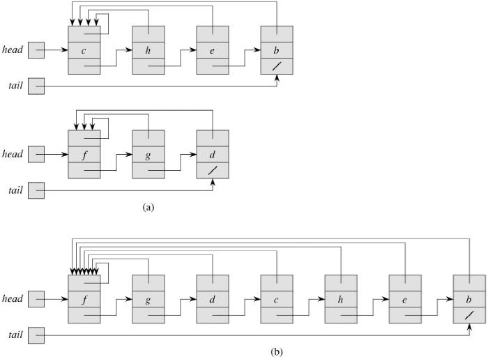- 每个链表的第一个对象作为它所在集合的代表
- 链表上的第个结点都有指向它所在集合的代表的指针，从而使得找出所属集合的操作时间降为O(1)
- 但是因为每个结点都有指向代表的指针，使得在进行合并操作时，需要更新所有结点的指向代表的指针，从而时间复杂度为O(n)。这算是有利也有弊吧。
- 一种加权合并启发式策略：在进行合并操作时，总是把较短的表拼到较长的表上去。
- 这种简单的小技巧的正式的名字都可以叫做：启发式信息，启发式策略！以后涉及到这种情况的时候也可以这么叫。
不相交集合森林表示法：用有根树来表示集合，树中的每个结点都包含集合的一个成员，每棵树表示一个集合。每个成员仅指向其父结点，每棵树的根包含了代表，并且是它自己的父结点。
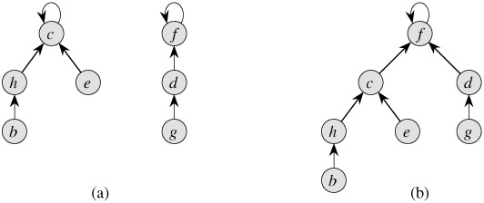在引入了两种启发式策略（按秩合并、路径压缩）之后，不相交集合森林表示法就是目前已经的、渐近意义最快的不相交集合数据结构了。
接秩合并：便包含较少结点的树的根指向包含较多结点的树的根。秩表示的是结点高度的一个上界。 每个结点的秩是结点高度的一个上界，只有在进行UNION操作时，而且进行合并操作的两个集合的秩相同时，才会给最后的根结点的秩+1。代码如下:
template<typename T> static void _Link(DisjointSet<T> &x, DisjointSet<T> &y) { if (x.Rank > y.Rank) { y.Parent = &x; } else { x.Parent = &y; } if (x.Rank == y.Rank) { //只有在秩相同时才会将最后的根结点的秩+1 ++y.Rank; } }
路径压缩：（查找路径：在查找一个结点所属的集合时的查找路径上访问过的所有的结点）在每次进行查找元素所属集合的操作时，使得查找路径上的每个结点都直接指向根结点。路径压缩并不改变结点的秩。 这种路径压缩使用了两趟的方法：一趟是沿查找路径向上升，直至找到根；第二趟时沿查找路径下降，以便更新查找路径上的每个结点，使之指向根。这种路径压缩的思想简直是太棒了！神奇啊！应该学习这种思想，碰到类似的问题也要想到类似的解决办法
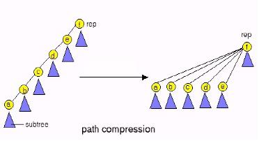 代码如下:
template<typename T> static DisjointSet<T> & FindSet(DisjointSet<T> &a_set) { //路径压缩 if (&a_set != a_set.Parent) { //判断本身不是代表 a_set.Parent = &FindSet(*a_set.Parent); } return *a_set.Parent; }*
使用了这两种启发式策略之后，算法的最坏运行时间为O(m*alpha(n))，其中m是操作序列中所有的操作的个数总和。 对于宇宙中的所有原子数之和x, alpha(x)<=4，所以说算法的实际时间是线性的。
1 2 3 4 5 6 7 8 9 10 11 12 13 14 15 16 17 18 19 20 21 22 23 24 25 26 27 28 29 30 31 32 33 34 35 36 37 38 39 40 41 42 43 44 45 46 47 48 49 50 51 52 53 54 55 56 57 58 59 60 61 62 63 64 65 66 67 68 69 70 71 72 73 74 75 | /**
* @file disjoint_set_forest.h
* @brief 用于不相交集合的数据结构（并查集）
*
* Distributed under the GPL License version 3, see: http://www.gnu.org/licenses
* Author: chuanqi.tan(at)gmail.com
*/
namespace ita {
/// @brief 采用树表示法实现的 用于不相交集合的数据结构（并查集）
///
/// 使用了“路径压缩”和“按秩合并”两种技术来加速并查集的运行时间。\n
/// 这种方法实现的并查集的运行时间在实践上是线性的，但从理论上来说是超线性的。\n
/// 用于不相交集合的数据结构又称为查并集：在很多的应用中（比如图的算法中经常使用，还有哈夫曼编码等），将N个不同的元素分成一组不相交的集合。\n
/// 不相交集合上有两个重要的操作：<span style="color:#FF0000 ">找出给定元素所属的集合</span> 和 <span style="color:#FF0000 ">合并两个集合</span>。
class DisjointSetForest {
public:
/// 集合中的一个元素
template<typename T>
struct DisjointSet {
T Item; ///< 元素的值
int Rank; ///< 元素的秩
DisjointSet *Parent; ///< 元素的父元素
/// 创建一个结点：对应MAKE-SET操作
DisjointSet( T const &item ) : Item( item ), Rank( 0 ) {
Parent = this;
}
};
#pragma region 查并集的3个基本操作
/// 创建一个集合的操作：MAKE-SET
template<typename T>
static DisjointSet<T> * MakeSet( T const &item ) {
return new DisjointSet<T>( item );
}
/// 查找所属集合的操作：FIND-SET
/// @remarks 使用了路径压缩
template<typename T>
static DisjointSet<T> * FindSet( DisjointSet<T> *a_set ) {
//路径压缩
if ( a_set != a_set->Parent ) { //判断本身不是代表
a_set->Parent = FindSet( a_set->Parent );
}
return a_set->Parent;
}
/// 合并操作：UNION
/// @remarks 使用了按秩合并
template<typename T>
static void Union( DisjointSet<T> *x, DisjointSet<T> *y ) {
_Link( FindSet( x ), FindSet( y ) );
}
#pragma endregion
private:
template<typename T>
static void _Link( DisjointSet<T> *x, DisjointSet<T> *y ) {
if ( x->Rank > y->Rank ) {
y->Parent = x;
} else {
x->Parent = y;
//按秩合并
if ( x->Rank == y->Rank ) {
//只有在秩相同时才会将最后的根结点的秩+1
++( y->Rank );
}
}
}
};
}
|
1 2 3 4 5 6 7 8 9 10 11 12 13 14 15 16 17 18 19 20 21 22 23 24 25 26 27 28 29 30 31 32 33 34 35 36 37 38 39 40 41 42 43 44 45 46 | /**
* @file disjoint_set_forest.cpp
* @brief 用于不相交集合的数据结构（并查集）
*
* Distributed under the GPL License version 3, see: http://www.gnu.org/licenses
* Author: chuanqi.tan(at)gmail.com
*/
#include <iostream>
#include <vector>
using namespace std;
#include "disjoint_set_forest.h"
namespace ita {
/// 用于不相交集合的数据结构（并查集）
void testDisjointSetForest() {
vector<DisjointSetForest::DisjointSet<int> *> nodes;
for ( int i = 0; i < 10; ++i ) {
nodes.push_back( DisjointSetForest::MakeSet( i ) );
}
for ( int i = 0; i < 5; ++i ) {
int index1 = rand() % 10;
int index2 = rand() % 10;
DisjointSetForest::Union( nodes[index1], nodes[index2] );
cout << "Union : " << index1 << "---" << index2 << endl;
}
for ( int i = 0; i < 10; ++i ) {
cout << i << "-------------->" << DisjointSetForest::FindSet( nodes[i] )->Item << endl;
}
//for (int i = 0; i < nodes.size(); ++i)
//{
// FindSet(nodes[i]);
// cout << FindSet(nodes[i])->Item << endl;
//}
}
}
int main() {
ita::testDisjointSetForest();
return 0;
}
|
Union : 3---6
Union : 7---5
Union : 3---5
Union : 6---2
Union : 9---1
0-------------->0
1-------------->1
2-------------->5
3-------------->5
4-------------->4
5-------------->5
6-------------->5
7-------------->5
8-------------->8
9-------------->1
第六部分：图算法¶
- 图是计算机科学中常用的一类数据结构。
- 两种图的遍历方法：广度优先遍历（求每条边都是单位权值的图的最短路径）和深度优先遍历（拓扑排序、将有向图分解为强连通子图）。
- 最小权生成树：由连接了图中所有顶点的、且权值最小的路径所构成。
- 有向图中的最大流问题：这是个一般性的问题，会以多种形式出现；一个好的计算最大流量的算法可以用来有效地解决多种相关的问题。
第22章：图的基本算法¶
图的搜索技术是图算法领域的核心
- 两种最普通的图的表示方法：邻接表法（节省空间）和邻接矩阵法（查询高效）
稀疏图多用邻接表法来表示；而稠密图则用邻接矩阵法来表示比较好。
不论是有向图还是无向图，邻接表法都有一个很好的特性，即它所需要的存储空间为O(V+E)；邻接表表示法稍作修改就能支持其它多种图的变体，因而有着很强的适应性。
无向图的邻接矩阵A就是它的转置矩阵：A=AT 。在某些应用中，可以只存储邻接矩阵的对角线及对角线以上的部分，这样一来，图所占用的存储空间几乎可以减少一半
邻接表表示和邻接矩阵表示在渐近意义上至少是一样有效的，但由于邻接矩阵简单明了，因而当图较小时，更多多地采用邻接矩阵来表示。另外，如果一个图不是加权的，采用邻接矩阵的存储形式还有一个优越性：在存储邻接矩阵的每个元素时，可以只用一个二进位，而不必有一个字的空间。
这样，当采用了二进位以及表示无向图的技巧时，邻接矩阵法的占用空间大的缺点就可以得到一定程度上的改善！
- 广度优先搜索能够得到这种意义上的最短路径：每条边的权值都为1，即所有的边都具有单位权值。
广度优先所产生的广度优先树是每个顶点到s的最短距离。
- 深度优先搜索除了创建一个深度优先森林外，深度优先搜索同时为每个顶点加盖时间戳。每个顶点v有两个时间戳：当顶点v第一次被发现时，记录下第一个时间戳d[v]，当结束检查v的邻接表时，记录下第二个时间戳f[v]。
许多基于深度优先搜索的图算法都用到了时间戳，它们对推算深度优先搜索的时行情况有很大的帮助。
这次重新复习深度优先算法，得到的最大的启示就是使用了这2个时间戳，真的是很有用很好的创新啊。当记录下这2个时间戳之后，很多东西都可以由这对时间戳来推导出来了（比如拓扑排序、深度遍历的次序等）。
广度搜索通常用于从某个源顶点开始，寻找最短路径距离（以及相关的先辈子图）。深度优先搜索通常作为另一个算法中的一个子程序。
后裔区间的嵌套：在一个（有向或无向）图G中的深度优先森林中，顶点v是顶点u的后裔，当且仅当d[u]<d[v]<f[v]<d[u]，由这关系可以推导出大部分的与时间戳相关的性质。
边的分类：树边、反向边、正向边、交叉边。
- 拓扑排序：在很多应用中，有向无回路图说明事件发生的先后次序。
在深度优先遍历的基础上，对有向无回路图进行拓扑排序简直是小菜一蹀。根据遍历所得到的时间戳f[i]逆向排序就好了。
拓扑排序的顶点以与其完成时间时间相反的顺序出现。这种新方法真是长见识啊，比我以前使用的方法好多了，这种方法在遍历完只需要一个简单的sort就完成了拓扑排序，时间复杂度也降低为O(V+E)。
这种新的拓扑排序的方法的理论基础是：对于任一对不同的顶点u,v，如果存在一条从u -> v的边，那么u在拓扑排序的结果中一定在v的前面。而又根据后裔区间嵌套的定理：如果存在u -> v，那么f[v]<f[u]，所以得证根据f逆向排序得到的顺序一定为拓扑排序。
强连通分支：有向图G=(V, E)的一个强连通分支就是一个最大的顶点集合C，对于C中的每一对顶点u,v，都有u -> v及v -> u；亦即顶点u和v是互相可达的。
寻找强连通分支的简明算法：
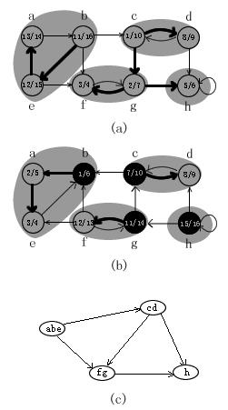- 对G进行深度优先遍历得到每个顶点的时间戳f[x]；
- 求得G的返回图GT；
- 按照f[x]的逆向顺序为顶点顺序对GT进行深度优先遍历，即按照G的拓扑排序的顺序对GT再进行深度优先遍历；
- 步骤c得到的各棵子树就是原图G的各强连通分支。
寻找强连通分支的算法的时间复杂度为O(V+E)。
1 2 3 4 5 6 7 8 9 10 11 12 13 14 15 16 17 18 19 20 21 22 23 24 25 26 27 28 29 30 31 32 33 34 35 36 37 38 39 40 41 42 43 44 45 46 47 48 49 50 | /**
* @file deapth_first_search.h
* @brief 深度优先搜索核心递归程序
*
* Distributed under the GPL License version 3, see: http://www.gnu.org/licenses
* Author: chuanqi.tan(at)gmail.com
*/
#pragma once
#include <vector>
#include <iostream>
#include <queue>
#include <set>
#include <bitset>
#include "graphics.h"
using namespace std;
namespace ita {
/// @brief 深度优先遍历的递归函数
///
/// 从顶点index开始，按照深度优先的规则依次遍历。只会遍历从index顶点可以访问的结果，对于index不可到达的结点不会访问。
/// @param g 要遍历的图，使用邻接表的表示方法
/// @param index 从index顶点开始进行遍历
/// @param d 时间戳d
/// @param f 时间戳f
/// @param traversed 标识顶点是否已经被遍历
/// @param time 全局时间，用于设置时间戳d和f
/// @return 返回本次深度优先遍历得到的子树依次所遍历过的结点的编号
template<typename T>
vector<int> DFS_Visit( GraphicsViaAdjacencyList<T> &g, size_t index, vector<int> &d, vector<int> &f, vector<bool> &traversed, int &time ) {
vector<int> this_time_traversed;
this_time_traversed.push_back( index );
traversed[index] = true;
++time;
d[index] = time;
for ( size_t i = 0; i < g.GetVertex().size(); ++i ) {
if ( !traversed[i] && g.IsLinked( index, i ).first ) {
vector<int> v = DFS_Visit( g, i, d, f, traversed, time );
this_time_traversed.insert( this_time_traversed.end(), v.begin(), v.end() );
}
}
++time;
f[index] = time;
return this_time_traversed;
}
}
|
1 2 3 4 5 6 7 8 9 10 11 12 13 14 15 16 17 18 19 20 21 22 23 24 25 26 27 28 29 30 31 32 33 34 35 36 37 38 39 40 41 42 43 44 45 46 47 48 49 50 51 52 53 54 55 56 57 58 59 60 61 62 63 64 65 66 67 68 69 70 71 72 73 74 75 76 77 78 79 80 81 82 83 84 85 86 87 | /**
* @file deapth_first_search.cpp
* @brief 深度优先搜索
*
* Distributed under the GPL License version 3, see: http://www.gnu.org/licenses
* Author: chuanqi.tan(at)gmail.com
*/
#include <vector>
#include <iostream>
#include <queue>
#include <set>
#include <bitset>
#include "graphics.h"
#include "deapth_first_search.h"
using namespace std;
namespace ita {
/// @brief 深度优先遍历主函数
///
/// 深度优先搜索除了创建一个深度优先森林外，深度优先搜索同时为每个顶点加盖时间戳。每个顶点v有两个时间戳：\n
/// 当顶点v第一次被发现时，记录下第一个时间戳d[v]，当结束检查v的邻接表时，记录下第二个时间戳f[v]。\n
/// 许多基于深度优先搜索的图算法都用到了时间戳，它们对推算深度优先搜索的时行情况有很大的帮助。\n
/// 这次重新复习深度优先算法，得到的最大的启示就是使用了这2个时间戳，真的是很有用很好的创新啊。当记录下这2个时间戳之后，很多东西都可以由这对时间戳来推导出来了（比如拓扑排序、深度遍历的次序等）。\n
template<typename T>
void DeapthFirstSearch( GraphicsViaAdjacencyList<T> &g ) {
vector<int> d( g.GetVertex().size() ); //时间戳d
vector<int> f( g.GetVertex().size() ); //时间戳f
vector<bool> traversed( g.GetVertex().size(), false ); //标识顶点是否已经被遍历
int time = 0;
cout << endl << "深度优先遍历：";
for ( size_t i = 0; i < g.GetVertex().size(); ++i ) {
if ( !traversed[i] ) {
vector<int> ids = DFS_Visit( g, i, d, f, traversed, time );
for ( size_t k = 0; k < ids.size(); ++k ) {
cout << g.GetVertex()[ids[k]] << "[" << d[ids[k]] << "," << f[ids[k]] << "] ";
}
}
}
cout << endl << "深度优先遍历：";
vector<pair<int, pair<int, int>>> r;
for ( size_t i = 0; i < g.GetVertex().size(); ++i ) {
r.push_back( make_pair( i, make_pair( d[i], f[i] ) ) );
}
// 根据时间戳d来排序好好序之后就是深度优先遍历的结果
// 这是我自己推导出来的，证明思路是：根据深度优先的“括号定理”，时间戳d排在前面的结点总是位于前面的括号内，
// 也就是位于深度优先搜索结果的前列所以说这种同时计算时间界的深度优先真有用啊，根据d排序就可以得出深度优先的次序
// ，根据f排序又可以得出拓扑排序的顺序
sort( r.begin(), r.end(), []( pair<int, pair<int, int>> const & p1, pair<int, pair<int, int>> const & p2 ) {
return p1.second.first < p2.second.first;
} );
for ( size_t i = 0; i < r.size(); ++i ) {
cout << g.GetVertex()[r[i].first] << "[" << r[i].second.first << "," << r[i].second.second << "] ";
}
}
/// 测试深度优先搜索
void testDeapthFirstSearch() {
vector<char> v;
for ( int i = 0; i < 8; ++i ) {
v.push_back( 'r' + i );
}
GraphicsViaAdjacencyList<char> g( v, Undigraph );
g.Link2Vertex( 0, 1 );
g.Link2Vertex( 0, 4 );
g.Link2Vertex( 1, 5 );
g.Link2Vertex( 2, 5 );
g.Link2Vertex( 2, 3 );
g.Link2Vertex( 2, 6 );
g.Link2Vertex( 3, 6 );
g.Link2Vertex( 3, 7 );
g.Link2Vertex( 5, 6 );
g.Link2Vertex( 6, 7 );
DeapthFirstSearch( g );
}
}
int main() {
ita::testDeapthFirstSearch();
return 0;
}
|
深度优先遍历：r[1,16] s[2,13] w[3,12] t[4,11] u[5,10] x[6,9] y[7,8] v[14,15]
深度优先遍历：r[1,16] s[2,13] w[3,12] t[4,11] u[5,10] x[6,9] y[7,8] v[14,15]
1 2 3 4 5 6 7 8 9 10 11 12 13 14 15 16 17 18 19 20 21 22 23 24 25 26 27 28 29 30 31 32 33 34 35 36 37 38 39 40 41 42 43 44 45 46 47 48 49 50 51 52 53 54 55 56 57 58 59 60 61 62 63 64 65 66 67 68 69 70 71 72 73 | /**
* @file breadth_first_search.cpp
* @brief 广度优先搜索
*
* Distributed under the GPL License version 3, see: http://www.gnu.org/licenses
* Author: chuanqi.tan(at)gmail.com
*/
#include <vector>
#include <iostream>
#include <queue>
#include <set>
#include <bitset>
#include "graphics.h"
using namespace std;
namespace ita {
/// @brief 广度优先遍历
///
/// @param g 使用邻接表表示的图
/// @param start_index 从这个顶点开始进行广度优先遍历
template<typename T>
void BreadthFirstSearch( GraphicsViaAdjacencyList<T> &g, size_t start_index ) {
queue<size_t> q;
vector<bool> trivaled( g.GetVertex().size(), false );
q.push( start_index );
trivaled[start_index] = true;
cout << "广度优先遍历：";
while ( !q.empty() ) {
//如果没有遍历完所有的结点
char current = q.front();
q.pop();
cout << g.GetVertex()[current] << " ";
for ( size_t i = 0; i < g.GetVertex().size(); ++i ) {
if ( !trivaled[i] && g.IsLinked( current, i ).first ) {
//没有被遍历过 且 与当前遍历的元素邻接
q.push( i );
trivaled[i] = true;
}
}
}
}
/// 广度优先遍历
void testBreadthFirstSearch() {
vector<char> v;
for ( int i = 0; i < 8; ++i ) {
v.push_back( 'r' + i );
}
GraphicsViaAdjacencyList<char> g( v, Undigraph );
g.Link2Vertex( 0, 1 );
g.Link2Vertex( 0, 4 );
g.Link2Vertex( 1, 5 );
g.Link2Vertex( 2, 5 );
g.Link2Vertex( 2, 3 );
g.Link2Vertex( 2, 6 );
g.Link2Vertex( 3, 6 );
g.Link2Vertex( 3, 7 );
g.Link2Vertex( 5, 6 );
g.Link2Vertex( 6, 7 );
BreadthFirstSearch( g, 1 );
cout << endl;
}
}
int main() {
ita::testBreadthFirstSearch();
return 0;
}
|
广度优先遍历：s r w v t x u y
1 2 3 4 5 6 7 8 9 10 11 12 13 14 15 16 17 18 19 20 21 22 23 24 25 26 27 28 29 30 31 32 33 34 35 36 37 38 39 40 41 42 43 44 45 46 47 48 49 50 51 52 53 54 55 56 57 58 59 60 61 62 63 64 65 66 67 68 69 70 71 72 73 74 75 76 77 78 79 80 81 | /**
* @file topological_sort.cpp
* @brief 拓扑排序
*
* Distributed under the GPL License version 3, see: http://www.gnu.org/licenses
* Author: chuanqi.tan(at)gmail.com
*/
#include <vector>
#include <iostream>
#include <queue>
#include <set>
#include <bitset>
#include <string>
#include <algorithm>
#include "graphics.h"
#include "deapth_first_search.h"
using namespace std;
namespace ita {
/// @breif 拓扑排序
///
/// 拓扑排序：在深度优先遍历的基础上，对有向无回路图进行拓扑排序简直是小菜一蹀。根据遍历所得到的时间戳f[i]逆向排序就好了。\n
/// 拓扑排序的顶点以与其完成时间时间相反的顺序出现。这种新方法真是长见识啊，比我以前使用的方法好多了，这种方法在遍历完只需要一个简单的sort就完成了拓扑排序，时间复杂度也降低为O(V+E)。\n
/// 这种新的拓扑排序的方法的理论基础是：对于任一对不同的顶点u,v，如果存在一条从u -> v的边，那么u在拓扑排序的结果中一定在v的前面。\n
/// 而又根据后裔区间嵌套的定理：如果存在u -> v，那么f[v]<f[u]，所以得证根据f逆向排序得到的顺序一定为拓扑排序。
void TopologicalSort() {
vector<string> v;
v.push_back( "undershorts" );
v.push_back( "socks" );
v.push_back( "watch" );
v.push_back( "pants" );
v.push_back( "shoes" );
v.push_back( "shirt" );
v.push_back( "belt" );
v.push_back( "tie" );
v.push_back( "jacket" );
GraphicsViaAdjacencyList<string> g( v, Digraph );
g.Link2Vertex( 0, 3 );
g.Link2Vertex( 0, 4 );
g.Link2Vertex( 1, 4 );
g.Link2Vertex( 3, 4 );
g.Link2Vertex( 3, 6 );
g.Link2Vertex( 5, 6 );
g.Link2Vertex( 5, 7 );
g.Link2Vertex( 6, 8 );
g.Link2Vertex( 7, 8 );
vector<int> d( g.GetVertex().size() ); //时间戳d
vector<int> f( g.GetVertex().size() ); //时间戳f
vector<bool> traversed( g.GetVertex().size(), false ); //标识顶点是否已经被遍历
int time = 0;
for ( size_t i = 0; i < g.GetVertex().size(); ++i ) {
if ( !traversed[i] ) {
DFS_Visit( g, i, d, f, traversed, time );
}
}
cout << "拓扑排序：" << endl;
vector<pair<int, pair<int, int>>> r;
for ( size_t i = 0; i < g.GetVertex().size(); ++i ) {
r.push_back( make_pair( i, make_pair( d[i], f[i] ) ) );
}
//根据时间戳f来逆向排好序的结果就是拓扑排序的结果
sort( r.rbegin(), r.rend(), []( pair<int, pair<int, int>> const & p1, pair<int, pair<int, int>> const & p2 ) {
return p1.second.second < p2.second.second;
} );
for ( size_t i = 0; i < r.size(); ++i ) {
cout << g.GetVertex()[r[i].first] << "[" << r[i].second.first << "," << r[i].second.second << "]" << endl;
}
}
}
int main() {
ita::TopologicalSort();
return 0;
}
|
拓扑排序：
shirt[15,18]
tie[16,17]
watch[13,14]
socks[11,12]
undershorts[1,10]
pants[2,9]
belt[5,8]
jacket[6,7]
shoes[3,4]
1 2 3 4 5 6 7 8 9 10 11 12 13 14 15 16 17 18 19 20 21 22 23 24 25 26 27 28 29 30 31 32 33 34 35 36 37 38 39 40 41 42 43 44 45 46 47 48 49 50 51 52 53 54 55 56 57 58 59 60 61 62 63 64 65 66 67 68 69 70 71 72 73 74 75 76 77 78 79 80 81 82 83 84 85 86 87 88 89 90 91 92 93 94 95 96 97 98 99 100 101 102 103 104 105 106 107 108 109 110 111 112 | /**
* @file strongly_connected_component.cpp
* @brief 强连通分支
*
* Distributed under the GPL License version 3, see: http://www.gnu.org/licenses
* Author: chuanqi.tan(at)gmail.com
*/
#include <vector>
#include <iostream>
#include <queue>
#include <set>
#include <iterator>
#include <bitset>
#include <algorithm>
#include "graphics.h"
#include "deapth_first_search.h"
using namespace std;
namespace ita {
/// @brief 寻找强连通分支问题
///
/// 强连通分支：有向图G=(V, E)的一个强连通分支就是一个最大的顶点集合C，对于C中的每一对顶点u,v，都有u -> v及v -> u；亦即顶点u和v是互相可达的。\n
/// 寻找强连通分支的简明算法，寻找强连通分支的算法的时间复杂度为O(V+E)：
/// - 对G进行深度优先遍历得到每个顶点的时间戳f[x]；
/// - 求得G的逆向图G^T；
/// - 按照f[x]的逆向顺序为顶点顺序对G^T进行深度优先遍历，即按照G的拓扑排序的顺序对G^T再进行深度优先遍历；
/// - 步骤c得到的各棵子树就是原图G的各强连通分支。
void StronglyConnectedComponent() {
cout << "强连接分支" << endl;
vector<char> v;
for ( int i = 0; i < 8; ++i ) {
v.push_back( 'a' + i );
}
GraphicsViaAdjacencyList<char> g( v, Digraph );
g.Link2Vertex( 0, 1 );
g.Link2Vertex( 1, 2 );
g.Link2Vertex( 1, 4 );
g.Link2Vertex( 1, 5 );
g.Link2Vertex( 2, 3 );
g.Link2Vertex( 2, 6 );
g.Link2Vertex( 3, 2 );
g.Link2Vertex( 3, 7 );
g.Link2Vertex( 4, 0 );
g.Link2Vertex( 4, 5 );
g.Link2Vertex( 5, 6 );
g.Link2Vertex( 6, 5 );
g.Link2Vertex( 6, 7 );
g.Link2Vertex( 7, 7 );
//step1:对g进行深度优先遍历
vector<int> d( g.GetVertex().size() ); //时间戳d
vector<int> f( g.GetVertex().size() ); //时间戳f
vector<bool> traversed( g.GetVertex().size(), false ); //标识顶点是否已经被遍历
int time = 0;
for ( size_t i = 0; i < g.GetVertex().size(); ++i ) {
if ( !traversed[i] ) {
DFS_Visit( g, i, d, f, traversed, time );
}
}
//step2:得到gT并得到按时间戳f逆向排序
GraphicsViaAdjacencyList<char> gT( g );
for ( size_t i = 0; i < gT.GetEdges().size(); ++i ) {
gT.GetEdges()[i] = nullptr;
}
for ( size_t i = 0; i < g.GetVertex().size(); ++i ) {
for ( size_t j = 0; j < g.GetVertex().size(); ++j ) {
if ( g.IsLinked( i, j ).first ) {
gT.Link2Vertex( j, i );
}
}
}
vector<pair<int, pair<int, int>>> r;
for ( size_t i = 0; i < g.GetVertex().size(); ++i ) {
r.push_back( make_pair( i, make_pair( d[i], f[i] ) ) );
}
//根据时间戳f来逆向排好序的结果
sort( r.rbegin(), r.rend(), []( pair<int, pair<int, int>> const & p1, pair<int, pair<int, int>> const & p2 ) {
return p1.second.second < p2.second.second;
} );
for ( size_t i = 0; i < r.size(); ++i ) {
cout << g.GetVertex()[r[i].first] << "[" << r[i].second.first << "," << r[i].second.second << "] ";
}
cout << endl;
//step3：对gT以以时间戳的逆序来重新进行深度优先遍历，所得到的各子树就是g的强连通分支
traversed.assign( gT.GetVertex().size(), false );
time = 0;
for ( size_t i = 0; i < r.size(); ++i ) {
if ( !traversed[r[i].first] ) {
vector<int> ids = DFS_Visit( gT, r[i].first, d, f, traversed, time );
for ( size_t k = 0; k < ids.size(); ++k ) {
cout << gT.GetVertex()[ids[k]];
}
cout << endl;
}
}
}
}
int main() {
ita::StronglyConnectedComponent();
return 0;
}
|
强连接分支
a[1,16] b[2,15] e[13,14] c[3,12] g[8,11] f[9,10] d[4,7] h[5,6]
aeb
cd
gf
h
第23章：最小生成树¶
最小（权值）生成树：由n-1条边，连接了所有的n个顶点，并且所有边上的权值和最小。
Kruskal算法和Prim算法：这两种算法中都使用普通的二叉堆就可以很容易地达到O(ElgV)的运行时间。通过采用斐波那契堆，Prim算法的运行时间可以减少到O(E +VlgV)，这对于稠密图来说是个很大的改进。
贪心策略可以在最小生成树问题中得到最优解，事实上这里的Kruskal、Prim方法都是贪心算法。它们也都是可以被证明的一定能够得到最优解！
在Kruskal算法中，集合A是一个森林，加入集合A中的安全边总是图中连接两个不同连通分支的最小权边；
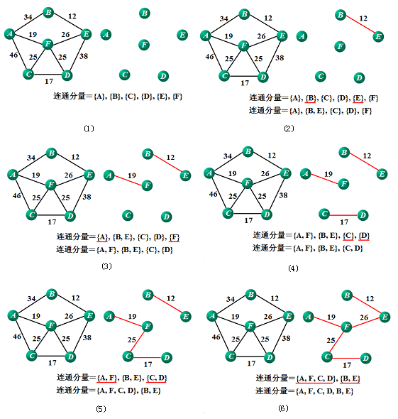在Prim算法中，集合A仅形成单棵树，添入集合A中的安全边总是连接树与一个不在树中的顶点的最小权边。
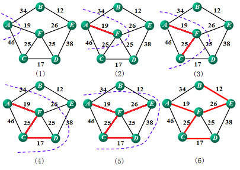为什么说Prim算法有着更好的实际效率：
- Prim算法在执行的过程中，将不在树中的所有顶点都放在一个基于key域的最小优先队列Q中；
- 每次在选取安全边时，只需要从Q中弹出最小key值的顶点即可，而不需要像Kruskal一样为对所有的边的权值进行一次排序；
- Prim算法使用了用于快速或者最小权值边的技巧（二叉堆、二项堆、斐波那契堆）来加速算法的运行。在最朴素的选取安全边的算法中，需要遍历剩下的所有的边，所需要的时间复杂度为O(EV)，而采用堆来优化后只需要O(ElgV)，大大地改善了算法的执行时间（堆的好处）。
- 不过Kruskal算法实现简单，所以对于一般的应用Kruskal算法很常见。
Prim算法的性能取决于优先队列Q是如何实现的，因此如果使用斐波那契堆来实现最小优先队列，就可以将Prim算法的运行时间改进为O(E+VlgV)。
1 2 3 4 5 6 7 8 9 10 11 12 13 14 15 16 17 18 19 20 21 22 23 24 25 26 27 28 29 30 31 32 33 34 35 36 37 38 39 40 41 42 43 44 45 46 47 48 49 50 51 52 53 54 55 56 57 58 59 60 61 62 63 64 65 66 67 68 69 70 71 72 73 74 75 76 77 78 79 80 81 82 83 84 85 86 | /**
* @file kruskal.cpp
* @brief Kruskal最小生成树算法
*
* Distributed under the GPL License version 3, see: http://www.gnu.org/licenses
* Author: chuanqi.tan(at)gmail.com
*/
#include <vector>
#include <iostream>
#include <queue>
#include <set>
#include <algorithm>
#include <iterator>
#include <bitset>
#include "graphics.h"
#include "disjoint_set_forest.h"
using namespace std;
namespace ita {
/// @brief Kruskal最小生成树算法
///
/// <b>最小（权值）生成树：由n-1条边，连接了所有的n个顶点，并且所有边上的权值和最小。</b>\n\n
/// Kruskal算法中，集合A是一个森林，加入集合A中的安全边总是图中连接两个不同连通分支的最小权边；
void Kruskal() {
vector<char> v;
for ( int i = 0; i < 9; ++i ) {
v.push_back( 'a' + i );
}
GrpahicsViaAdjacencyMatrix<char, int> g( v, Undigraph );
g.Link2Vertex( 0, 1, 4 );
g.Link2Vertex( 0, 7, 8 );
g.Link2Vertex( 1, 2, 8 );
g.Link2Vertex( 1, 7, 11 );
g.Link2Vertex( 2, 3, 7 );
g.Link2Vertex( 2, 5, 4 );
g.Link2Vertex( 2, 8, 2 );
g.Link2Vertex( 3, 4, 9 );
g.Link2Vertex( 3, 5, 14 );
g.Link2Vertex( 4, 5, 10 );
g.Link2Vertex( 5, 6, 2 );
g.Link2Vertex( 6, 7, 1 );
g.Link2Vertex( 6, 8, 6 );
g.Link2Vertex( 7, 8, 7 );
int const n = g.GetVertex().size();
//建立这些查并集
vector<DisjointSetForest::DisjointSet<char> *> dsf;
for ( int i = 0; i < g.GetVertex().size(); ++i ) {
dsf.push_back( DisjointSetForest::MakeSet( g.GetVertex()[i] ) );
}
//取得边的集合
vector<pair<int, int>> edges;
for ( int i = 0; i < n; ++i ) {
for ( int j = 0; j < n; ++j ) {
if ( g.IsLinked( i, j ) ) {
edges.push_back( make_pair( i, j ) );
}
}
}
//将边的集合按权值进行排序
sort( edges.begin(), edges.end(), [&g]( pair<int, int> const &p1, pair<int, int> const &p2 ) {
return g.GetEdge()[p1.first][p1.second] < g.GetEdge()[p2.first][p2.second];
} );
//依次检查这些边
for_each( edges.begin(), edges.end(), [&]( pair<int, int> const &edge ) {
if ( DisjointSetForest::FindSet( dsf[edge.first] ) != DisjointSetForest::FindSet( dsf[edge.second] ) ) {
DisjointSetForest::Union( dsf[edge.first], dsf[edge.second] );
cout << edge.first << " --> " << edge.second << endl;
}
} );
for_each( dsf.begin(), dsf.end(), []( DisjointSetForest::DisjointSet<char> *adsf ) {
delete adsf;
} );
}
}
int main() {
ita::Kruskal();
return 0;
}
|
7 --> 6
8 --> 2
6 --> 5
0 --> 1
5 --> 2
2 --> 3
2 --> 1
4 --> 3
1 2 3 4 5 6 7 8 9 10 11 12 13 14 15 16 17 18 19 20 21 22 23 24 25 26 27 28 29 30 31 32 33 34 35 36 37 38 39 40 41 42 43 44 45 46 47 48 49 50 51 52 53 54 55 56 57 58 59 60 61 62 63 64 65 66 67 68 69 70 71 72 73 74 75 76 77 78 79 80 81 82 83 | /**
* @file prim.cpp
* @brief Prim最小生成树算法
*
* Distributed under the GPL License version 3, see: http://www.gnu.org/licenses
* Author: chuanqi.tan(at)gmail.com
*/
#include <vector>
#include <iostream>
#include <queue>
#include <set>
#include <map>
#include <iterator>
#include <bitset>
#include <queue>
#include "graphics.h"
using namespace std;
namespace ita {
/// @brief Prim最小生成树算法
///
/// <b>最小（权值）生成树：由n-1条边，连接了所有的n个顶点，并且所有边上的权值和最小。</b>\n\n
/// Prim算法中，集合A仅形成单棵树，添入集合A中的安全边总是连接树与一个不在树中的顶点的最小权边。\n
/// Prim算法的性能取决于优先队列Q是如何实现的，因此如果使用斐波那契堆来实现最小优先队列，就可以将Prim算法的运行时间改进为O(E+VlgV)。
void Prim() {
cout << "Prim最小生成树" << endl;
vector<char> v;
for ( int i = 0; i < 9; ++i ) {
v.push_back( 'a' + i );
}
GrpahicsViaAdjacencyMatrix<char, int> g( v, Undigraph );
g.Link2Vertex( 0, 1, 4 );
g.Link2Vertex( 0, 7, 8 );
g.Link2Vertex( 1, 2, 8 );
g.Link2Vertex( 1, 7, 11 );
g.Link2Vertex( 2, 3, 7 );
g.Link2Vertex( 2, 5, 4 );
g.Link2Vertex( 2, 8, 2 );
g.Link2Vertex( 3, 4, 9 );
g.Link2Vertex( 3, 5, 14 );
g.Link2Vertex( 4, 5, 10 );
g.Link2Vertex( 5, 6, 2 );
g.Link2Vertex( 6, 7, 1 );
g.Link2Vertex( 6, 8, 6 );
g.Link2Vertex( 7, 8, 7 );
int start_index = 0;
//parent[i] = j代表在选取最小生成树时第i个结点的上一个结点是j
vector<int> parent( v.size(), -1 );
//不在最小生成树中的顶点的集合
//pair<顶点的编号，该顶点与任意已经在最小生成树中的顶点的最短距离>
map<int, int> key;
for ( int i = 0; i < g.GetVertex().size(); ++i ) {
key.insert( make_pair( i, numeric_limits<int>::max() ) );
}
key[start_index] = 0;
while ( !key.empty() ) {
//得到与最小生成树中任意顶点距离最小的元素
auto min_ele = min_element( key.begin(), key.end(), []( pair<int const, int> &p1, pair<int const, int> &p2 ) {
return p1.second < p2.second;
} );
int min_index = min_ele->first;
cout << ( parent[min_index] == -1 ? *"&" : g.GetVertex()[parent[min_index]] ) << " -- " << g.GetVertex()[min_index] << endl;
key.erase( min_ele );
for ( int i = 0; i < g.GetVertex().size(); ++i ) {
if ( key.find( i ) != key.end() && g.IsLinked( i, min_index ) && key[i] > g.GetEdge()[i][min_index] ) {
key[i] = g.GetEdge()[i][min_index];
parent[i] = min_index;
}
}
}
}
}
int main() {
ita::Prim();
return 0;
}
|
Prim最小生成树
& -- a
a -- b
b -- c
c -- i
c -- f
f -- g
g -- h
c -- d
d -- e
第24章：单源最短路径¶
最短路径：一个顶点到另一个顶点的最短权值路径。广度优先搜索算法就是一种在无权（单位权值）图上执行的最短路径算法。
从渐近意义上来说，解决一对顶点的最短路径问题的复杂度与单源最短路径的复杂度相同。
- 最短路径算法通常依赖于一种性质，也就是一条两顶点间的最短路径包含路径上其它的最短路径。这里动态规划和贪心算法的特征之一：最优子结构。
Dijkstra算法是一个贪心算法。DIJKSTRA算法假定输入图中的所有边的权值都是非负的，而floyd算法允许输入边存在负权边，只要不存在从源点可达的负权回路。而且如果存在着负权回路，它还能检测出来。
Bellman-Ford算法非常简单：对所有的边进行|v|-1遍循环，在每次循环中对每一条边进行松弛的操作。
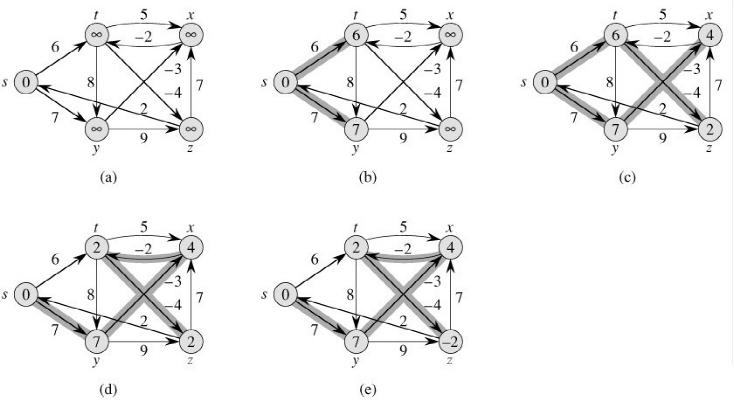按顶点的拓扑顺序对某加权有向无回路图的边进行松弛后，就可以在O(V+E)时间内计算出单源最短路径。在一个有向无回路图中最短路径总是存在的，因为即使图中有权值为负的边，也不可能存在负权回路（因为它根本没有任何回路）。
Dijkstra算法是一种贪心策略的算法，它的运行时间一般比Bellman-Ford算法要好:
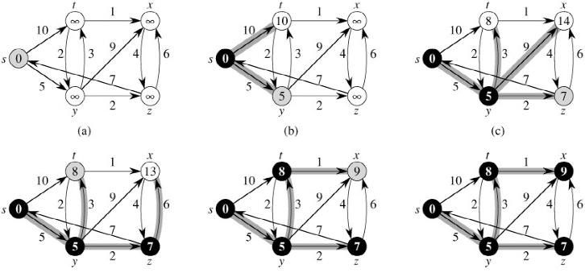DIJKSTRA(G, w, s) 1 INITIALIZE-SINGLE-SOURCE(G, s) 2 S ← Ø 3 Q ← V[G] 4 while Q ≠ Ø 5 do u ← EXTRACT-MIN(Q) 6 S ← S ∪{u} 7 for each vertex v ∈ Adj[u] 8 do RELAX(u, v, w)Dijkstra算法在每次循环中，每次仅仅提取d值最小的顶点u是保证这个贪心策略正确性的关键核心所在。因为通过集合S中所有的元素都已经去试着松弛过u了，而非S中的点由于本身它的d值都比u要大，所以即使用它们中的任何一个去松弛u，也不可能达到比现在更小的d值了。因此，在每次循环中选取当前d值最小的顶点加入到S集合中去一定能保证最后得到全局最优解。
很多问题都可以转换成图的问题，使用最短路径的算法来加以解决的。 要善于把一些看似不相干的问题转化为图的问题
1 2 3 4 5 6 7 8 9 10 11 12 13 14 15 16 17 18 19 20 21 22 23 24 25 26 27 28 29 30 31 32 33 34 35 36 37 38 39 40 41 42 43 44 45 46 47 48 49 50 51 52 53 54 55 56 57 58 59 60 61 62 63 64 65 66 67 68 69 70 71 72 73 74 75 76 77 78 79 80 81 | /**
* @file bellman_ford.h
* @brief Bellman-Ford最短路径算法
*
* Distributed under the GPL License version 3, see: http://www.gnu.org/licenses
* Author: chuanqi.tan(at)gmail.com
*/
#pragma once
#include <vector>
#include <iostream>
#include <queue>
#include <set>
#include <map>
#include <iterator>
#include <bitset>
#include <queue>
#include <limits>
#include "graphics.h"
using namespace std;
namespace ita {
namespace {
/// 初始化
template<typename T>
void InitializeSingleSource( GraphicsViaAdjacencyList<T> &g, vector<int> &d, vector<int> &parent_index, int start_index ) {
for ( size_t i = 0; i < g.GetVertex().size(); ++i ) {
d[i] = numeric_limits<int>::max();
parent_index[i] = -1;
}
d[start_index] = 0;
}
/// @brief 松弛
///
/// 前提条件是：index1->index2存在着一条边
/// 因此用index1的这条边来松弛index2的d值，并且设置parent[index2] = index1
template<typename T>
void Relax( GraphicsViaAdjacencyList<T> &g, vector<int> &d, vector<int> &parent_index, int index1, int index2 ) {
if ( d[index2] > d[index1] + g.IsLinked( index1, index2 ).second->Weight ) {
d[index2] = d[index1] + g.IsLinked( index1, index2 ).second->Weight;
parent_index[index2] = index1;
}
}
}
/// @brief Bellman-Ford最短路径算法
///
/// <b>最短路径：一个顶点到另一个顶点的最短权值路径。广度优先搜索算法就是一种在无权（单位权值）图上执行的最短路径算法。</b>\n
/// Bellman-Ford算法非常简单：对所有的边进行|v|-1遍循环，在每次循环中对每一条边进行松弛的操作。\n
/// @remarks floyd算法允许输入边存在负权边，只要不存在从源点可达的负权回路。而且如果存在着负权回路，它还能检测出来。
/// @param g 用邻接表法表示的图
/// @param start_index 计算顶点start_index到其它所有点的最短路径
/// @param d 算法结束后，d[i]存储从start_index到顶点i的最短路径
/// @parem parent_index 记录算法在运行的进行中的选。算法结束后，parent_index[i]表示从start_index到顶点i的最短路径的倒数第二个结点的编号
/// @return 算法是否执行成功，取决于图中是否存在“负权回路”。
/// @retval true 算法执行成功，图中不存在“负权回路
/// @retval false 算法执行失败，图中存在“负权回路
template<typename T>
bool BellmanFord( GraphicsViaAdjacencyList<T> &g, int start_index, vector<int> &d, vector<int> &parent_index ) {
auto edges = g.GetAllEdges();
InitializeSingleSource( g, d, parent_index, start_index );
for ( size_t i = 0; i < g.GetVertex().size() - 1; ++i ) {
for_each( edges.begin(), edges.end(), [&]( pair<size_t, size_t> const & p ) {
Relax( g, d, parent_index, p.first, p.second );
} );
}
for ( size_t i = 0; i < edges.size(); ++i ) {
if ( d[edges[i].second] > d[edges[i].first] + g.IsLinked( edges[i].first, edges[i].second ).second->Weight ) {
return false;
}
}
return true;
}
}
|
1 2 3 4 5 6 7 8 9 10 11 12 13 14 15 16 17 18 19 20 21 22 23 24 25 26 27 28 29 30 31 32 33 34 35 36 37 38 39 40 41 42 43 44 45 46 47 48 49 50 51 52 53 54 55 56 57 58 59 60 61 62 63 64 65 66 | /**
* @file bellman_ford.cpp
* @brief Bellman-Ford最短路径算法
*
* Distributed under the GPL License version 3, see: http://www.gnu.org/licenses
* Author: chuanqi.tan(at)gmail.com
*/
#include <vector>
#include <iostream>
#include <queue>
#include <set>
#include <map>
#include <iterator>
#include <bitset>
#include <queue>
#include <limits>
#include <algorithm>
#include "graphics.h"
#include "bellman_ford.h"
using namespace std;
namespace ita {
/// BellmanFord单源最短路径算法
bool testBellmanFord() {
cout << "Bellman-Ford最短路径" << endl;
//生成P362页的图24-4
vector<char> v;
v.push_back( 's' );
v.push_back( 't' );
v.push_back( 'x' );
v.push_back( 'z' );
v.push_back( 'y' );
GraphicsViaAdjacencyList<char> g( v, Digraph );
g.Link2Vertex( 0, 1, 6 );
g.Link2Vertex( 0, 4, 7 );
g.Link2Vertex( 1, 2, 5 );
g.Link2Vertex( 1, 3, -4 );
g.Link2Vertex( 1, 4, 8 );
g.Link2Vertex( 2, 1, -2 );
g.Link2Vertex( 3, 2, 7 );
g.Link2Vertex( 3, 0, 2 );
g.Link2Vertex( 4, 2, -3 );
g.Link2Vertex( 4, 3, 9 );
int start_index = 0;
vector<int> d( g.GetVertex().size() );
vector<int> parent_index( g.GetVertex().size() );
if ( !BellmanFord( g, start_index, d, parent_index ) ) {
cout << "存在负值回路" << endl;
} else {
for ( size_t i = 0; i < g.GetVertex().size(); ++i ) {
cout << g.GetVertex()[i] << " | " << d[i] << endl;
}
}
return true;
}
}
int main() {
ita::testBellmanFord();
return 0;
}
|
Bellman-Ford最短路径
s | 0
t | 2
x | 4
z | -2
y | 7
1 2 3 4 5 6 7 8 9 10 11 12 13 14 15 16 17 18 19 20 21 22 23 24 25 26 27 28 29 30 31 32 33 34 35 36 37 38 39 40 41 42 43 44 45 46 47 48 49 50 51 52 53 54 55 56 57 58 59 60 61 62 63 64 65 66 67 68 69 70 71 72 73 74 75 76 77 78 79 | /**
* @file dijkstra.h
* @brief Dijstra最短路径
*
* Distributed under the GPL License version 3, see: http://www.gnu.org/licenses
* Author: chuanqi.tan(at)gmail.com
*/
#pragma once
#include <vector>
#include <iostream>
#include <queue>
#include <set>
#include <map>
#include <iterator>
#include <bitset>
#include <queue>
#include <limits>
#include "graphics.h"
#include "bellman_ford.h"
using namespace std;
namespace ita {
/// @brief Dijstra最短路径
///
/// <b>最短路径：一个顶点到另一个顶点的最短权值路径。广度优先搜索算法就是一种在无权（单位权值）图上执行的最短路径算法。</b>\n
/// Dijkstra算法是一种贪心策略的算法，它的运行时间一般比Bellman-Ford算法要好。\n
/// <span style="color:#FF0000 ">Dijkstra算法在每次循环中，每次仅仅提取d值最小的顶点u是保证这个贪心策略正确性的关键核心所在。</span>\n
/// 因为通过集合S中所有的元素都已经去试着松弛过u了，而非S中的点由于本身它的d值都比u要大，所以即使用它们中的任何一个去松弛u，也不可能达到比现在更小的d值了。\n
/// 因此，在每次循环中选取当前d值最小的顶点加入到S集合中去一定能保证最后得到全局最优解。\n\n
/// DIJKSTRA(G, w, s)\n
/// 1 INITIALIZE-SINGLE-SOURCE(G, s)\n
/// 2 S ← 空集\n
/// 3 Q ← V[G]\n
/// 4 while Q != 空集\n
/// 5 do u ← EXTRACT-MIN(Q)\n
/// 6 S ← S 并上 {u}\n
/// 7 for each vertex v 属于 Adj[u]\n
/// 8 do RELAX(u, v, w)\n
/// @remarks Dijkstra算法假定输入图中的所有边的权值都是非负的
/// @param g 用邻接表法表示的图
/// @param start_index 计算顶点start_index到其它所有点的最短路径
/// @param d 算法结束后，d[i]存储从start_index到顶点i的最短路径
/// @parem parent_index 记录算法在运行的进行中的选。算法结束后，parent_index[i]表示从start_index到顶点i的最短路径的倒数第二个结点的编号
template<typename T>
void Dijkstra( GraphicsViaAdjacencyList<T> &g, int start_index, vector<int> &d, vector<int> &parent_index ) {
auto edges = g.GetAllEdges();
InitializeSingleSource( g, d, parent_index, start_index );
auto greater_pred = [&]( int index1, int index2 ) {
return d[index1] > d[index2];
};
//使用普通二叉堆来做这个优先队列。还可以考虑使用二项堆和斐波那契堆来进行加速
vector<int> Q;
for ( size_t i = 0; i < g.GetVertex().size(); ++i ) {
Q.push_back( i );
}
make_heap( Q.begin(), Q.end(), greater_pred );
while ( !Q.empty() ) {
for_each( edges.begin(), edges.end(), [&]( pair<size_t, size_t> const & p ) {
if ( p.first == Q[0] ) {
//对所有从min_ele发出的边进行松弛操作
Relax( g, d, parent_index, p.first, p.second );
}
} );
//这里d被Relax进行了改变，相当于改变了优先队列中若干项的优先值，因此要重建堆
swap( Q[0], Q[Q.size() - 1] );
Q.pop_back();
make_heap( Q.begin(), Q.end(), greater_pred );
}
}
}
|
1 2 3 4 5 6 7 8 9 10 11 12 13 14 15 16 17 18 19 20 21 22 23 24 25 26 27 28 29 30 31 32 33 34 35 36 37 38 39 40 41 42 43 44 45 46 47 48 49 50 51 52 53 54 55 56 57 58 59 60 61 62 63 | /**
* @file dijkstra.cpp
* @brief Dijstra最短路径
*
* Distributed under the GPL License version 3, see: http://www.gnu.org/licenses
* Author: chuanqi.tan(at)gmail.com
*/
#include <vector>
#include <iostream>
#include <queue>
#include <set>
#include <map>
#include <algorithm>
#include <iterator>
#include <bitset>
#include <queue>
#include <limits>
#include "graphics.h"
#include "dijkstra.h"
using namespace std;
namespace ita {
/// Dijkstra单源最短路径算法
void testDijkstra() {
cout << "Dijkstra最短路径" << endl;
//生成P367页的图24-6
vector<char> v;
v.push_back( 's' );
v.push_back( 't' );
v.push_back( 'x' );
v.push_back( 'z' );
v.push_back( 'y' );
GraphicsViaAdjacencyList<char> g( v, Digraph );
g.Link2Vertex( 0, 1, 10 );
g.Link2Vertex( 0, 4, 5 );
g.Link2Vertex( 1, 2, 1 );
g.Link2Vertex( 1, 4, 2 );
g.Link2Vertex( 2, 3, 4 );
g.Link2Vertex( 3, 2, 6 );
g.Link2Vertex( 3, 0, 7 );
g.Link2Vertex( 4, 1, 3 );
g.Link2Vertex( 4, 2, 9 );
g.Link2Vertex( 4, 3, 2 );
int start_index = 0;
vector<int> d( g.GetVertex().size() );
vector<int> parent_index( g.GetVertex().size() );
Dijkstra( g, start_index, d, parent_index );
for ( size_t i = 0; i < g.GetVertex().size(); ++i ) {
cout << g.GetVertex()[i] << " | " << d[i] << endl;
}
}
}
int main() {
ita::testDijkstra();
return 0;
}
|
Dijkstra最短路径
s | 0
t | 8
x | 9
z | 7
y | 5
第25章：每对顶点间的最短路径¶
Folyd-Warshall是一个动态规划算法，运行时间为O(V^3)；Johnson算法使用了几种算法作为其子算法，运行时间为O(V^2 lgV+VE)，尤其适合对大型稀疏图。
求每对顶点之间的最短路径问题很适合于动态规划算法来求解，因为它满足”最优子问题的结构”和”重叠子问题”两个特征。
一个朴素的思路就是使用Lij(m)来表示从顶点i到顶点j的，中间包含至多m条路径的最短路径。这种思路是朴素的动态规划思想，效率比较好，时间复杂度为O(V3lgV)，但是后面提及的两种算法都对这个”最优子问题的结构”进行了更多的优化。
Folyd-Warshall算法的运行时间为O(V3)，它允许权值为负的边，但是假定了不存在权值为负的回路。而且它的代码是紧凑的，而且不包含复杂的数据结构，隐含的常数因子很小。因此，即便对于中等规模的输入图来说Folyd-Warshall算法仍然相当的实用。
Folyd-Warshall的核心在于：它改进了”最优子问题结构”，使用dij(k)来表示从顶点i到顶点j、且满足所有中间顶点皆属于集合{1,2,…,k}的一条最短路径的权值。这种限定了起始点的技巧大大的减少了实现的计算量。
有向图的传递闭包：G的传递闭包定义为图G*=(V, E*)，其中E*={(i,j) : 图G中存在着一条从i到j的路径}。
对于一个大图，即使是只需要确定是否存在路径可达都不是一件很容易的事件。解决此问题的整体思路与Folyd-Warshall算法一样，只是把Folyd-Warshall算法中的min和+操作替换为相应的OR和AND逻辑运算来加快速度，本质并没有区别。
Johnson算法可在O(V2lgV+VE)时间内，求出每对顶点间的最短路径。Johnson算法使用Dijkstra和Bellman-Ford算法作为其子程序。
Johnson算法是一个实际上非常好的算法，它使得所有的情况（可能存在负权值和负权回路）都可以使用最好的Dijkstra算法来达到最好的运行效率。
Johnson算法在所有的边为非负时，把每对顶点依次作为源点来执行Dijkstra算法，就可以找到每对顶点间的最短路径；利用斐波那契最小优先队列，该算法的运行时间为O(V2lgV+VE)。
因此也可以总结出：对于确定无负权值的图，直接循环调用Dijkstra算法就是求每对顶点间最短路径的最佳算法。
Johnson算法使用了重赋权技术，对每一条边的权值w赋予一个新的权值w’，使用新的边权值集合满足以下两个性质：
- 对所有的顶点u,v，如果路径p是在权值函数w下从u到v的最短路径，当且仅当p也是在权值函数w’下从u到v的最短路径；
- 对于所有的边u,v，新的权值w’(u,v)是非负的（于是满足Dijkstra算法的要求）。
Johnson算法的简明步骤：
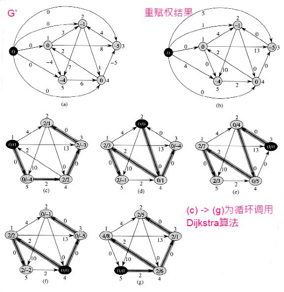- 生成一个新图G’，G’是在G上扩展一个起始点后的结果；
- 在G’上调用Bellman-Ford算法。由于Bellman-Ford算法能够检测负权回路，如果存在负权回路则报告存在负权回路并结束整个算法；否则得到在G’上调用Bellman-Ford算法得到的h(x)函数；
- 根据h(x)函数对G中的每一条边进行重赋权，使得G中的每一条边都是非负的；
- 对重赋权后的G进行循环调用Dijkstra算法，得到每对顶点间的最短路径；
- 对得到的每对顶点间的最短路径再根据h(x)函数反向构造出原来权值下的最短路径值。
1 2 3 4 5 6 7 8 9 10 11 12 13 14 15 16 17 18 19 20 21 22 23 24 25 26 27 28 29 30 31 32 33 34 35 36 37 38 39 40 41 42 43 44 45 46 47 48 49 50 51 52 53 54 55 56 57 58 59 60 61 62 63 64 65 66 67 68 69 70 71 72 73 74 75 76 77 78 79 80 81 82 83 84 85 86 87 88 89 90 | /**
* @file floyd_warshall.cpp
* @brief FloydWarshall每对顶点间的最短路径算法
*
* Distributed under the GPL License version 3, see: http://www.gnu.org/licenses
* Author: chuanqi.tan(at)gmail.com
*/
#include <vector>
#include <iostream>
#include <queue>
#include <set>
#include <map>
#include <iterator>
#include <bitset>
#include <queue>
#include <limits>
#include "graphics.h"
using namespace std;
namespace ita {
/// @brief FloydWarshall每对顶点间的最短路径算法
///
/// Folyd-Warshall是一个动态规划算法，运行时间为O(V<sup>3</sup>)，它允许权值为负的边，但是假定了不存在权值为负的回路。\n
/// Folyd-Warshall的核心在于：相对于“朴素动态规划算法”，它改进了“最优子问题结构”，使用d<sub>ij</sub>(k)来表示从顶点i到顶点j、
/// 且满足所有中间顶点皆属于集合{1,2,…,k}的一条最短路径的权值。这种限定了起始点的技巧大大的减少了实现的计算量。\n
/// @note Floyd -Warshall算法本来是需要三维的空间复杂度，但在实际算法中，为了节约空间，可以直接在原来空间
/// 上进行迭代，这样空间可降至二维。（相比上一个版本的代码，这里已有体现）
void FloydWarshall() {
cout << "FloydWarshall最短路径" << endl;
//生成P384页的图25-1
vector<int> v;
v.push_back( 1 );
v.push_back( 2 );
v.push_back( 3 );
v.push_back( 4 );
v.push_back( 5 );
GrpahicsViaAdjacencyMatrix<int, int> g( v, Digraph );
g.Link2Vertex( 0, 1, 3 );
g.Link2Vertex( 0, 2, 8 );
g.Link2Vertex( 0, 4, -4 );
g.Link2Vertex( 1, 4, 7 );
g.Link2Vertex( 1, 3, 1 );
g.Link2Vertex( 2, 1, 4 );
g.Link2Vertex( 3, 2, -5 );
g.Link2Vertex( 3, 0, 2 );
g.Link2Vertex( 4, 3, 6 );
int const n = v.size(); //顶点的个数
vector<vector<int>> D( n, vector<int>( n, 0 ) );
for ( int i = 0; i < n; ++i ) {
for ( int j = 0; j < n; ++j ) {
D[i][j] = numeric_limits<int>::max();
if ( i == j ) {
D[i][j] = 0;
}
if ( g.GetEdge()[i][j] != 0 ) {
D[i][j] = g.GetEdge()[i][j];
}
}
}
for ( int k = 0; k < n; ++k ) {
//中间结点允许为[k]的情况
for ( int i = 0; i < n; ++i ) {
for ( int j = 0; j < n; ++j ) {
D[i][j] = min( D[i][j]
, ( D[i][k] == numeric_limits<int>::max() || D[k][j] == numeric_limits<int>::max()
? numeric_limits<int>::max()
: D[i][k] + D[k][j] ) );
}
}
}
for ( int i = 0; i < n; ++i ) {
for ( int j = 0; j < n; ++j ) {
cout << D[i][j] << " ";
}
cout << endl;
}
}
}
int main() {
ita::FloydWarshall();
return 0;
}
|
FloydWarshall最短路径
0 1 -3 2 -4
3 0 -4 1 -1
7 4 0 5 3
2 -1 -5 0 -2
8 5 1 6 0
1 2 3 4 5 6 7 8 9 10 11 12 13 14 15 16 17 18 19 20 21 22 23 24 25 26 27 28 29 30 31 32 33 34 35 36 37 38 39 40 41 42 43 44 45 46 47 48 49 50 51 52 53 54 55 56 57 58 59 60 61 62 63 64 65 66 67 68 69 70 71 72 73 74 75 76 77 78 79 80 81 82 83 84 85 86 87 88 89 90 91 92 93 94 95 96 97 98 99 100 101 102 103 104 105 106 107 108 109 110 111 112 113 114 115 116 117 118 119 120 | /**
* @file johnson.cpp
* @brief Johnson每对顶点间的最短路径算法
*
* Distributed under the GPL License version 3, see: http://www.gnu.org/licenses
* Author: chuanqi.tan(at)gmail.com
*/
#include <vector>
#include <iostream>
#include <queue>
#include <set>
#include <map>
#include <iterator>
#include <bitset>
#include <queue>
#include <limits>
#include "graphics.h"
#include "bellman_ford.h"
#include "dijkstra.h"
using namespace std;
namespace ita {
/// @brief Johnson每对顶点间的最短路径算法
///
/// Johnson算法可在O(V<sup>2</sup>lgV+VE)时间内，求出每对顶点间的最短路径。Johnson算法使用Dijkstra和Bellman-Ford算法作为其子程序。 \n
/// Johnson算法在所有的边为非负时，把每对顶点依次作为源点来执行Dijkstra算法，就可以找到每对顶点间的最短路径；利用斐波那契最小优先队列，该算法的运行时间为O(V<sup>2</sup>lgV+VE)。\n
/// <b>因此也可以总结出：对于确定无负权值的图，直接循环调用Dijkstra算法就是求每对顶点间最短路径的最佳算法。</b>\n
/// Johnson算法使用了重赋权技术来处理负边权值，对每一条边的权值w赋予一个新的权值w’，使用新的边权值集合满足以下两个性质：
/// - 对所有的顶点u,v，如果路径p是在权值函数w下从u到v的最短路径，当且仅当p也是在权值函数w’下从u到v的最短路径；
/// - 对于所有的边u,v，新的权值w’(u,v)是非负的（很明显，这样就满足Dijkstra算法的要求，因此又回到重复调用Dijkstra算法来实现求每对顶点间最短路径）。
///
/// Johnson算法的简明步骤：
/// - 生成一个新图G’，G’是在G上扩展一个起始点后的结果；
/// - 在G’上调用Bellman-Ford算法。由于Bellman-Ford算法能够检测负权回路，如果存在负权回路则报告存在负权回路并结束整个算法；否则得到在G’上调用Bellman-Ford算法得到的h(x)函数；
/// - 根据h(x)函数对G中的每一条边进行重赋权，使得G中的每一条边都是非负的；
/// - 对重赋权后的G进行循环调用Dijkstra算法，得到每对顶点间的最短路径；
/// - 对得到的每对顶点间的最短路径再根据h(x)函数反向构造出原来权值下的最短路径值。
/// @remarks Johnson算法是一个<b>实际上非常好</b>的算法，它使得所有的情况（可能存在负权值和负权回路）都可以使用最好的Dijkstra算法来达到最好的运行效率。
void Johnson() {
cout << "Johnson最短路径" << endl;
//生成P384页的图25-1
vector<int> v;
v.push_back( 1 );
v.push_back( 2 );
v.push_back( 3 );
v.push_back( 4 );
v.push_back( 5 );
GraphicsViaAdjacencyList<int> g( v, Digraph );
g.Link2Vertex( 0, 1, 3 );
g.Link2Vertex( 0, 2, 8 );
g.Link2Vertex( 0, 4, -4 );
g.Link2Vertex( 1, 4, 7 );
g.Link2Vertex( 1, 3, 1 );
g.Link2Vertex( 2, 1, 4 );
g.Link2Vertex( 3, 2, -5 );
g.Link2Vertex( 3, 0, 2 );
g.Link2Vertex( 4, 3, 6 );
int const n = g.GetVertex().size();
//generate g'
GraphicsViaAdjacencyList<int> gplus( v, Digraph );
for ( int i = 0; i < g.GetVertex().size(); ++i ) {
for ( int j = 0; j < g.GetVertex().size(); ++j ) {
if ( g.IsLinked( i, j ).first ) {
gplus.Link2Vertex( i, j, g.IsLinked( i, j ).second->Weight );
}
}
}
gplus.GetVertex().push_back( 0 );
gplus.GetEdges().push_back( nullptr );
for ( int i = 0; i < g.GetVertex().size(); ++i ) {
gplus.Link2Vertex( gplus.GetVertex().size() - 1, i, 0 );
}
//call bellman-ford algorithm on g'
vector<int> d( gplus.GetVertex().size() );
vector<int> parent_index( gplus.GetVertex().size() );
if ( !BellmanFord( gplus, gplus.GetVertex().size() - 1, d, parent_index ) ) {
cout << "存在着负值回路，算法无法进行" << endl;
return;
}
//re-assign for g
auto edges = g.GetAllEdges();
for ( int i = 0; i < edges.size(); ++i ) {
auto node = g.IsLinked( edges[i].first, edges[i].second ).second;
node->Weight += ( d[edges[i].first] - d[edges[i].second] );
}
//loop call dijkstra algorithm on g
vector<vector<int>> D( n, vector<int>( n ) );
for ( int i = 0; i < g.GetVertex().size(); ++i ) {
vector<int> d2( g.GetVertex().size() );
vector<int> parent_index2( g.GetVertex().size() );
Dijkstra( g, i, d2, parent_index2 );
for ( int j = 0; j < g.GetVertex().size(); ++j ) {
D[i][j] = d2[j] + d[j] - d[i];
}
}
//display result
for ( int i = 0; i < n; ++i ) {
for ( int j = 0; j < n; ++j ) {
cout << D[i][j] << " ";
}
cout << endl;
}
}
}
int main() {
ita::Johnson();
return 0;
}
|
Johnson最短路径
0 1 -3 2 -4
3 0 -4 1 -1
7 4 0 5 3
2 -1 -5 0 -2
8 5 1 6 0
第26章：最大流¶
流守恒：物质进入到某顶点的速度必须等于离开该顶点的速度。
最大流问题：是关于流网络的最简单问题，它提出这样的问题：在不违背容量限制的条件下，把物质从源点传输到汇点的最大速率是多少？
某个顶点处的总的净流量：为离开该顶点的总的正流量，减去进入该顶点的总的正流量。流守恒性的一种解释是这要瓣，即进行某个非源点非汇点顶点的正网络流，必须等于离开该顶点的正网络流。这个性质（即一个顶点处总的净流量必定为0）通常被非形式化地称为”流进等于流出”。
抵消：利用了抵消处理，可以将两城市间的运输用一个流来表示，该流在两个顶点之间的至多一条边上是正的。也就是说，任何在两城市间相互运输球的情况，都可以通过抵消将其转化成一个相等的情况，球只在一个方向上传输：沿正网络流的方向。
这样：两个顶点之间至多有两条边，而这两条边至多会有一条有正的流值，另一条相应的边的流值为0（明白这点在理解算法时是有用的）。
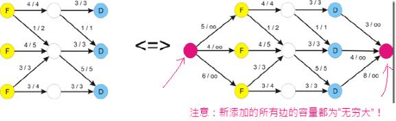具有多个源点和多个汇点的网络最大流问题可以转化成普通的单源点、单汇点的最大流问题（通过添加一个单一的源点和一个单一的汇点并置新添加的边的容量为无穷大来达到）。
Ford-Fulkerson算法是求最大流的一般方法，它利用了三点：残留网络、增广路径、最大流最小割定理。
- 残留网络：Gf由可以容纳更多网络流的边所组成；
- 增广路径：为残留网络Gf上从s到t的一条简单路径p，其中p中所的边的最小权值为该增广路径的残留容量；
- 最大流最小割定理：证明了Ford-Fulkerson算法能够得到全局最优解”当一个流是最大流，当且仅当它的残留网络不包含增广路径”。
Ford-Fulkerson算法的简明步骤：
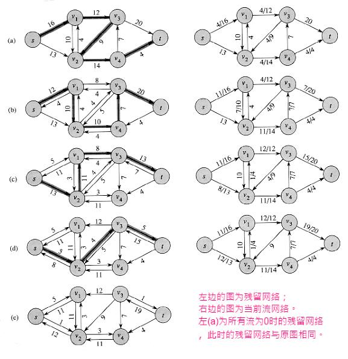- 初始化G中所有边的流为0；
- 计算当前图与当前流所映射的残留网络Gf；
- 从残留网络上选取一条增广路径并计算出残留容量，将残留容量添加到图的当前流上；
- 循环步骤b-c直到残留网络Gf中不存在增广路径为止；
- 此时的流即为G的最大流。
使用”广度优先搜索”来求增广路径的Ford-Fulkerson算法即称之为Edmonds-Karp算法，这种使用广度优先搜索来求增广路径的算法能够改善Ford-Fulkerson算法的运行时间。
最大二分匹配问题：这是最大流最重要的应用之一，并且有许多其它的问题可以归约成它，有着许多的实际应用。
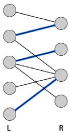例如：把一个机器集合L和要同时执行的任何集合R相匹配。E中的边(u,v)，就说明一台特定机器u能够完成一项特定任务v，最大匹配可以为尽可能多的机器提供任务）
解决最大二分匹配问题：先生成一个扩展图G’，再对G’的每条边赋予单位流量1，然后求出最大流，就是该最大二分匹配问题的解。
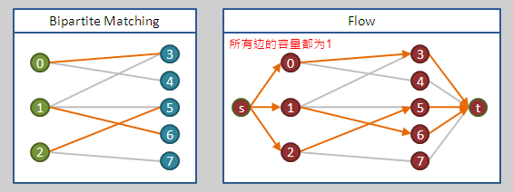
1 2 3 4 5 6 7 8 9 10 11 12 13 14 15 16 17 18 19 20 21 22 23 24 25 26 27 28 29 30 31 32 33 34 35 36 37 38 39 40 41 42 43 44 45 46 47 48 49 50 51 52 53 54 55 56 57 58 59 60 61 62 63 64 65 66 67 68 69 70 71 72 73 74 75 76 77 78 79 80 81 82 83 84 85 86 87 88 89 90 91 92 93 94 95 96 97 98 99 100 101 102 103 104 105 106 107 108 109 110 111 112 113 114 115 116 117 118 119 120 121 122 123 124 125 126 127 128 129 130 131 132 133 134 135 136 137 138 139 140 141 142 143 144 145 146 147 148 149 150 151 152 153 154 155 156 157 158 159 160 161 162 163 164 165 166 167 168 169 170 171 172 173 | /**
* @file ford_fulkerson.cpp
* @brief FordFulkerson最大流算法
*
* Distributed under the GPL License version 3, see: http://www.gnu.org/licenses
* Author: chuanqi.tan(at)gmail.com
*/
#include <vector>
#include <iostream>
#include <queue>
#include <set>
#include <map>
#include <iterator>
#include <bitset>
#include <queue>
#include <algorithm>
#include <numeric>
#include <limits>
#include "graphics.h"
using namespace std;
namespace ita {
namespace {
/// 得到残留网络
GrpahicsViaAdjacencyMatrix<string, int> GetResidualNetwork( GrpahicsViaAdjacencyMatrix<string, int> &g, vector<vector<int>> &f ) {
GrpahicsViaAdjacencyMatrix<string, int> gplus( g.GetVertex(), Digraph );
for ( int i = 0; i < g.GetVertex().size(); ++i ) {
for ( int j = i + 1; j < g.GetVertex().size(); ++j ) {
if ( g.IsLinked( i, j ) || g.IsLinked( j, i ) ) {
gplus.Link2Vertex( i, j, g.GetEdge()[i][j] - f[i][j] + f[j][i] );
gplus.Link2Vertex( j, i, g.GetEdge()[i][j] + g.GetEdge()[j][i] - gplus.GetEdge()[i][j] );
}
}
}
return gplus;
}
/// 运用广度优先算法得到增广路径
vector<int> GetAugmentingPath( GrpahicsViaAdjacencyMatrix<string, int> &g ) {
vector<int> path;
//q是一个队列pair<要处理的结点的编号，在该广度优先路径中它的父结点>
queue<int> q;
//每一个结点类广度优先遍历中当前的父结点
vector<int> parent( g.GetVertex().size() );
//标识一个结点是否被访问过了
vector<bool> trivaled( g.GetVertex().size(), false );
//从s==0的结点开始
q.push( 0 );
parent[0] = -1;
trivaled[0] = true;
while ( !q.empty() ) {
int front = q.front();
for ( int i = 0; i < g.GetVertex().size(); ++i ) {
if ( !trivaled[i] && g.IsLinked( front, i ) ) {
q.push( i );
parent[i] = front;
trivaled[i] = true;
if ( i == g.GetVertex().size() - 1 ) {
//找到了t结点。构造出反向路径
int current_index = i;
while ( current_index != -1 ) {
path.push_back( current_index );
current_index = parent[current_index];
}
//逆转为正向路径并返回
reverse( path.begin(), path.end() );
break;
}
}
}
q.pop();
}
return path;
}
}
/// @brief FordFulkerson最大流算法
///
/// <b>最大流问题：是关于流网络的最简单问题，它提出这样的问题：在不违背容量限制的条件下，把物质从源点传输到汇点的最大速率是多少？</b>\n
/// Ford-Fulkerson算法是求最大流的一般方法，它利用了三点：残留网络、增广路径、最大流最小割定理。
/// - 残留网络：G<sub>f</sub>由可以容纳更多网络流的边所组成；
/// - 增广路径：为残留网络G<sub>f</sub>上从s到t的一条简单路径p，其中p中所的边的最小权值为该增广路径的残留容量；
/// - 最大流最小割定理：证明了Ford-Fulkerson算法能够得到全局最优解“当一个流是最大流，当且仅当它的残留网络不包含增广路径”。
///
/// Ford-Fulkerson算法的简明步骤：
/// - 初始化G中所有边的流为0；
/// - 计算当前图与当前流所映射的残留网络G<sub>f</sub>；
/// - 从残留网络上选取一条增广路径并计算出残留容量，将残留容量添加到图的当前流上；
/// - 循环步骤b-c直到残留网络G<sub>f</sub>中不存在增广路径为止；
/// - 此时的流即为G的最大流。
///
/// 使用“广度优先搜索”来求增广路径的Ford-Fulkerson算法即称之为Edmonds-Karp算法，这种使用广度优先搜索来求增广路径
/// 的算法能够改善Ford-Fulkerson算法的运行时间。
/// @param g 使用邻接矩阵表示的图
int FordFulkerson( GrpahicsViaAdjacencyMatrix<string, int> &g ) {
int const n = g.GetVertex().size();
vector<vector<int>> f( n, vector<int>( n, 0 ) ); //f=fluent表示当前图上的流
while ( true ) {
//得到残留网络
auto gplus = GetResidualNetwork( g, f );
auto a_path = GetAugmentingPath( gplus );
if ( a_path.empty() ) {
//增广路径为空，循环结束
break;
}
vector<int> path_values;
for ( int i = 0; i < a_path.size() - 1; ++i ) {
path_values.push_back( gplus.GetEdge()[a_path[i]][a_path[i + 1]] );
}
int min_path_value = *min_element( path_values.begin(), path_values.end() );
for ( int i = 0; i < a_path.size() - 1; ++i ) {
int u = a_path[i];
int v = a_path[i + 1];
f[u][v] += min_path_value;
//算法导论P405页有这一句。但是原理上很明显这一句是不应该有的，而且事实也证明加上这一句就是错误的
//不解了！也许又是书上的一个bug吧！
//f[v][u] = -f[u][v];
}
}
return accumulate( f[0].begin(), f[0].end(), 0 );
}
/// FordFulkerson最大流算法
void testFordFulkerson() {
cout << "FordFulkerson最大流" << endl;
//生成P397页的图26-1(a)
vector<string> v;
v.push_back( "s" );
v.push_back( "v1" );
v.push_back( "v2" );
v.push_back( "v3" );
v.push_back( "v4" );
v.push_back( "t" );
GrpahicsViaAdjacencyMatrix<string, int> g( v, Digraph );
g.Link2Vertex( 0, 1, 16 );
g.Link2Vertex( 0, 2, 13 );
g.Link2Vertex( 1, 3, 12 );
g.Link2Vertex( 1, 2, 10 );
g.Link2Vertex( 2, 1, 4 );
g.Link2Vertex( 2, 4, 14 );
g.Link2Vertex( 3, 2, 9 );
g.Link2Vertex( 3, 5, 20 );
g.Link2Vertex( 4, 3, 7 );
g.Link2Vertex( 4, 5, 4 );
cout << FordFulkerson( g ) << endl;
}
}
int main() {
ita::testFordFulkerson();
return 0;
}
|
FordFulkerson最大流
23
第七部分：其它的零散代码¶
1 2 3 4 5 6 7 8 9 10 11 12 13 14 15 16 17 18 19 20 21 22 23 24 25 26 27 28 29 30 31 32 33 34 35 36 37 38 39 40 41 42 43 44 45 46 47 48 49 50 51 52 53 54 55 56 57 58 59 60 61 62 63 64 65 66 67 68 69 70 71 72 73 74 75 76 77 78 79 80 81 82 83 84 85 86 87 88 89 90 91 92 93 94 95 96 97 98 99 100 101 102 103 104 105 106 107 108 109 110 111 112 113 114 115 116 117 118 119 120 121 122 123 124 125 126 127 128 129 130 131 132 133 134 135 136 137 138 139 140 141 142 143 144 145 146 147 148 149 150 151 152 153 154 155 156 157 158 159 160 161 162 163 164 165 166 167 168 169 170 171 172 173 174 175 176 177 178 179 180 181 182 183 184 185 186 187 188 189 190 191 192 193 194 195 196 197 198 199 200 201 202 203 204 205 206 207 208 209 210 211 212 213 214 215 216 217 218 219 220 221 222 223 224 225 226 227 228 229 230 231 232 233 234 235 236 237 238 239 240 241 242 243 244 245 246 247 248 249 250 251 252 253 254 255 256 257 258 259 260 261 262 263 264 265 266 267 268 269 270 271 272 273 274 275 276 277 278 279 280 281 282 283 284 285 286 287 288 289 290 291 292 293 294 295 296 297 298 299 300 301 302 303 304 305 306 307 308 309 310 311 312 313 314 315 316 317 318 319 320 321 322 323 324 325 326 327 328 329 330 331 332 333 334 335 336 337 338 339 340 341 342 343 344 345 346 347 348 349 350 351 352 353 354 355 356 357 358 359 360 361 362 363 364 365 366 367 | /**
* @file computational_geometry.cpp
* @brief 计算几何学
*
* Distributed under the GPL License version 3, see: http://www.gnu.org/licenses
* Author: chuanqi.tan(at)gmail.com
*/
#include <vector>
#include <iostream>
#include <queue>
#include <set>
#include <map>
#include <iterator>
#include <bitset>
#include <queue>
#include <exception>
#include <algorithm>
#include <numeric>
#include <limits>
#include <utility>
#include <stack>
#include <cmath>
using namespace std;
namespace ita {
double const k_PI=3.14159265;
/// 点
struct PointD {
PointD() : X(0), Y(0) {}
PointD(double x, double y) : X(x), Y(y) {}
double X;
double Y;
};
/// 线段
class Segments {
public:
Segments(PointD start, PointD end) : Start(start), End(end) {}
Segments(double x1, double y1, double x2, double y2) : Start(x1, y1), End(x2, y2) {}
/// @brief 判断是否与另一条线段相交
///
/// 先求两条线段所在直线的方程,求出对应的a和b(y=ax+b). <br/>
/// 关键在于相交的两条线段一定满足这个性质:任意一条线段的2个端点一定分布在另外一条线段所对应的直线的两侧(或者之上)
/// @note 使用了除法,精度不如<算法导论>上介绍的方法好,但是简单易懂
bool IsIntersect(Segments const &other) const {
double a1 = (this->Start.Y - this->End.Y) / (this->Start.X - this->End.X);
double b1 = this->Start.Y - this->Start.X * a1;
double a2 = (other.Start.Y - other.End.Y) / (other.Start.X - other.End.X);
double b2 = other.Start.Y - other.Start.X * a2;
if ( (other.Start.Y - (other.Start.X * a1 + b1)) * (other.End.Y - (other.End.X * a1 + b1)) <= numeric_limits<double>::epsilon()
&& (this->Start.Y - (this->Start.X * a2 + b2)) * (this->End.Y - (this->End.X * a2 + b2)) <= numeric_limits<double>::epsilon() ) {
return true;
} else {
return false;
}
}
/// 与另一条线段的叉积
double CrossProduct(Segments const &other) const {
PointD p1(0, 0), p2(0, 0);
p1.X = this->End.X - this->Start.X;
p1.Y = this->End.Y - this->Start.Y;
p2.X = other.End.X - other.Start.X;
p2.Y = other.End.Y - other.Start.Y;
return p1.X * p2.Y - p2.X * p1.Y;
}
public:
PointD Start;
PointD End;
};
/// 确定任意一对线段是否相交
bool IsAnySegmentsIntersect(vector<Segments> const &segs) {
/// 线段的端点
struct EndPoint {
EndPoint(PointD point, bool isLeft, Segments const *releationSegment)
: Point(Point), IsLeft(isLeft), ReleationSegment(releationSegment) {}
PointD Point;
bool IsLeft;
Segments const *ReleationSegment;
};
vector<EndPoint> endpoints;
for (size_t i = 0; i < segs.size(); ++i) {
Segments const &seg = segs[i];
endpoints.push_back(EndPoint(seg.Start, true, &seg));
endpoints.push_back(EndPoint(seg.End, false, &seg));
}
sort(endpoints.begin(), endpoints.end(), [](EndPoint const &lhs, EndPoint const &rhs) -> bool {
if (lhs.Point.X != rhs.Point.X) {
return lhs.Point.X < rhs.Point.X;
} else {
if (lhs.IsLeft != rhs.IsLeft) {
return lhs.IsLeft == true;
} else {
return lhs.Point.Y < rhs.Point.Y;
}
}
});
struct _Segment_Pred_Fun {
bool operator()(Segments const *lhs, Segments const *rhs) {
return lhs->CrossProduct(*rhs) > 0;
}
};
set<Segments const *, _Segment_Pred_Fun> t;
for (size_t i = 0; i < endpoints.size(); ++i) {
if (endpoints[i].IsLeft) {
auto insert_iter = t.insert(endpoints[i].ReleationSegment).first;
auto above_iter = insert_iter;
above_iter--;
auto below_iter = insert_iter;
below_iter++;
if ((above_iter != t.end() && (*above_iter)->IsIntersect(*endpoints[i].ReleationSegment))
|| (below_iter != t.end() && (*below_iter)->IsIntersect(*endpoints[i].ReleationSegment))) {
return true;
}
} else {
auto find_iter = t.find(endpoints[i].ReleationSegment);
auto above_iter = find_iter;
above_iter--;
auto below_iter = find_iter;
below_iter++;
if (above_iter != t.end() && below_iter != t.end() && (*above_iter)->IsIntersect(**below_iter)) {
return true;
}
t.erase(find_iter);
}
}
return false;
}
//两个点之间的距离
double PointDistance(PointD pp1, PointD pp2) {
return sqrt((pp1.X - pp2.X)*(pp1.X - pp2.X) + (pp1.Y - pp2.Y)*(pp1.Y - pp2.Y));
}
/// 计算p1相对于p0的方向角度
double CalcAngleOfTwoPoints(PointD p0, PointD p1) {
if (p1.X == p0.X) { //x坐标相同时的情况
if (p1.Y == p0.Y) {
return 0;
} else if (p1.Y > p0.Y) {
return k_PI / 2;
} else {
return 1.5 * k_PI;
}
} else { //x坐标不同时的情况
double angle = atan(abs((p1.Y - p0.Y) / (p1.X - p0.X))); //普通情况为在一象限时的情况
if (p1.Y >= p0.Y) { //在一二象限
if (p1.X < p0.X) { //二象限
angle = k_PI - angle;
}
} else { //在三四象限
if (p1.X < p0.X) { //三象限
angle = k_PI + angle;
} else { //四象限
angle = 2 * k_PI - angle;
}
}
return angle;
}
}
///判断向量p2,p3相对于p2,p1的转向是不是向左转
bool IsLeftTurn(PointD p1, PointD p2, PointD p3) {
//使用叉积来判断向左转还是向右转 p576页
return Segments(p2, p1).CrossProduct(Segments(p2, p3)) > 0;
}
/// 求凸包的Graham算法
stack<PointD> GrahamConvexHull(vector<PointD> const &points) {
struct PointDWapper {
PointDWapper(PointD p, double angle, double distance) : Point(p), Angle(angle), Distance(distance) {}
PointD Point;
double Angle;
double Distance;
};
vector<PointDWapper> ps;
auto min_iter = min_element(points.begin(), points.end(), [](PointD p1, PointD p2) {
return p1.Y < p1.Y;
});
PointD min_point = *min_iter;
for (size_t i = 0; i < points.size(); ++i) {
PointD const &p = points[i];
if (p.X != min_point.X || p.Y != min_point.Y) {
PointDWapper pw(p, CalcAngleOfTwoPoints(min_point, p), PointDistance(min_point, p));
ps.push_back(pw);
}
};
sort(ps.begin(), ps.end(), [&](PointDWapper p1, PointDWapper p2) -> bool {
//以 角度的顺序+距离的逆序 进行排序
if (p1.Angle != p2.Angle) {
return p1.Angle < p2.Angle;
} else {
return p1.Distance > p2.Distance;
}
});
//清除角度相同的点 ,只保留举例最远的点
ps.erase(unique(ps.begin(), ps.end(), [](PointDWapper p1, PointDWapper p2) {
return p1.Angle == p2.Angle;
}), ps.end());;
stack<PointD> s;
s.push(min_point);
s.push(ps[0].Point);
s.push(ps[1].Point);
for (size_t i = 2; i < ps.size(); ++i) {
do {
PointD top = s.top();
s.pop();
PointD next_top = s.top();
s.push(top);
if (!IsLeftTurn(ps[i].Point, top, next_top)) {
s.pop();
} else {
break;
}
} while (true);
s.push(ps[i].Point);
}
return s;
}
/// 寻找最近点对的分治算法
pair<PointD, PointD> _NearestPointPair(vector<PointD> const &X, vector<PointD> const &Y) {
pair<PointD, PointD> min_pair;
if (X.size() <= 3) { //临界条件,少于或等于3个点时直接求出最近距离点对
double min_distance = numeric_limits<double>::max();
for (size_t i = 0; i < X.size() - 1; ++i) {
for (size_t j = i + 1; j < X.size(); ++j) {
double dis = PointDistance(X[i], X[j]);
if (dis < min_distance) {
min_distance = dis;
min_pair = make_pair(X[i], X[j]);
}
}
}
return min_pair;
} else { //不满足临界条件,大于3小个点,需要进行分治
auto pred_by_Y = [](PointD p1, PointD p2) {
return p1.Y < p2.Y;
};
vector<PointD> left_side_X(X.begin(), X.begin() + X.size() / 2);
vector<PointD> right_side_X(X.begin() + X.size() / 2, X.end());
vector<PointD> left_side_Y(left_side_X);
vector<PointD> right_side_Y(right_side_X);
sort(left_side_Y.begin(), left_side_Y.end(), pred_by_Y);
sort(right_side_Y.begin(), right_side_Y.end(), pred_by_Y);
auto left_nearest = _NearestPointPair(left_side_X, left_side_Y);
auto right_nearest = _NearestPointPair(right_side_X, right_side_Y);
double nearest_distance = 0;
if (PointDistance(left_nearest.first, left_nearest.second) < PointDistance(right_nearest.first, right_nearest.second)) {
nearest_distance = PointDistance(left_nearest.first, left_nearest.second);
min_pair = left_nearest;
} else {
nearest_distance = PointDistance(right_nearest.first, right_nearest.second);
min_pair = right_nearest;
}
double split_x = (*(X.begin() + X.size() / 2)).X;
vector<PointD> y_plus;
copy_if(X.begin(), X.end(), back_inserter(y_plus), [&](PointD p) {
return abs(p.X - split_x) <= nearest_distance;
});
sort(y_plus.begin(), y_plus.end(), pred_by_Y);
for (size_t i = 0; i < y_plus.size() - 1; ++i) {
int count = 0;
for (size_t j = i + 1; j < y_plus.size() && count < 8; ++j, ++count) {
if (PointDistance(y_plus[i], y_plus[j]) < nearest_distance) {
nearest_distance = PointDistance(y_plus[i], y_plus[j]);
min_pair = make_pair(y_plus[i], y_plus[j]);
}
}
}
return min_pair;
}
}
/// 寻找最近点对
pair<PointD, PointD> GetNearestPointPair(vector<PointD> const &points) {
if (points.size() < 2) {
throw logic_error(string("Error number of points"));
}
vector<PointD> X(points);
vector<PointD> Y(points);
//数组X按X坐标顺序排列
sort(X.begin(), X.end(), [](PointD p1, PointD p2) {
return p1.X < p2.X;
});
//数组Y按Y坐标顺序排列
sort(Y.begin(), Y.end(), [](PointD p1, PointD p2) {
return p1.Y < p2.Y;
});
return _NearestPointPair(X, Y);
}
void testComputionalGeometry() {
// 测试IsIntersect算法
cout << "============测试IsIntersect算法============" << endl;
Segments s1(0, 0, 5, 5);
Segments s2(0, 5, 5, 0);
Segments s3(1, 0, 6, 5);
cout << boolalpha << s1.IsIntersect(s2) << endl;
cout << boolalpha << s1.IsIntersect(s3) << endl;
cout << "===============Graham凸包算法==============" << endl;
vector<PointD> points;
points.push_back(PointD(1, 1));
points.push_back(PointD(5, 1));
points.push_back(PointD(1, 5));
points.push_back(PointD(5, 5));
points.push_back(PointD(3, 2));
stack<PointD> ps = GrahamConvexHull(points);
while (!ps.empty()) {
PointD p = ps.top();
cout << "(" << p.X << ", " << p.Y << ")" << endl;
ps.pop();
}
cout << "============最近点对的分治算法=============" << endl;
pair<PointD, PointD> pp = GetNearestPointPair(points);
cout << pp.first.X << ", " << pp.first.Y << " ====== " << pp.second.X << ", " << pp.second.Y << endl;
}
}
int main() {
ita::testComputionalGeometry();
return 0;
}
|
============测试IsIntersect算法============
true
false
===============Graham凸包算法==============
(1, 5)
(5, 5)
(5, 1)
(1, 1)
============最近点对的分治算法=============
3, 2 ====== 5, 1
1 2 3 4 5 6 7 8 9 10 11 12 13 14 15 16 17 18 19 20 21 22 23 24 25 26 27 28 29 30 31 32 33 34 35 36 37 38 39 40 41 42 43 44 45 46 47 48 49 50 51 52 53 54 55 56 57 58 59 60 61 62 63 64 65 66 67 68 69 70 71 72 73 74 75 76 77 78 79 80 81 82 83 84 85 86 87 88 89 90 91 92 93 94 95 96 97 98 99 100 101 102 103 104 105 106 107 108 109 110 111 112 113 114 115 116 117 118 119 120 121 122 123 124 125 126 127 128 129 130 131 132 133 134 135 136 137 138 139 140 141 142 143 144 145 146 147 148 149 150 151 152 153 154 | /**
* @file string_match.cpp
* @brief 字符串匹配算法
*
* Distributed under the GPL License version 3, see: http://www.gnu.org/licenses
* Author: chuanqi.tan(at)gmail.com
*/
#include <vector>
#include <iostream>
#include <queue>
#include <set>
#include <map>
#include <iterator>
#include <bitset>
#include <queue>
#include <algorithm>
#include <numeric>
#include <limits>
#include <utility>
using namespace std;
namespace ita {
//有限状态自动机
class DefineAutomationMatcher {
public:
DefineAutomationMatcher(string const &pattern) : _pattern(pattern) {
for (size_t i = 0; i < _pattern.size(); ++i) { //从状态i开始
for (size_t j = 0; j < sk_Character_Set.size(); ++j) { //经过字符sk_Character_Set[j]进行状态转移
size_t k = i + 1; //试图转移到状态k
while (k > 0 && !_IsPostfix(_pattern, i, sk_Character_Set[j], k)) {
--k;
}
if (k > 0) {
_state_transfer_f.insert(make_pair(make_pair(i, sk_Character_Set[j]), k));
}
}
}
}
int Match(string const &text) {
int current_state = 0;
for (size_t i = 0; i < text.size(); ++i) {
auto iter = _state_transfer_f.find(make_pair(current_state, text[i]));
if (iter == _state_transfer_f.end()) {
current_state = 0; //恢复到初始状态
} else {
current_state = (*iter).second;
if (current_state == _pattern.size()) {
return i - _pattern.size() + 1; //匹配成功
}
}
}
return -1; //匹配失败
}
private:
bool _IsPostfix(string const &p, size_t i, char c, size_t k) {
string str1 = p.substr(0, k);
string str2 = p.substr(0, i) + c;
return str1 == str2.substr(str2.size() - k);
}
static string const sk_Character_Set; //字符集
string const _pattern; //要匹配的模式
map<pair<int, char>, int> _state_transfer_f; //状态转移函数
};
string const DefineAutomationMatcher::sk_Character_Set = "abcdefghijklmnopqrstuvwxyz";
//KMP算法
int KMPMatch(string const &text, string const &p) {
// 计算pattern的部分匹配值
vector<int> pi(p.size(), 0);
for (int i = 1; i < p.size(); ++i) {
for (int j = i - 1; j >= 0; --j) {
// "部分匹配值"就是"前缀"和"后缀"的最长的共有元素的长度。
if (p.substr(0, j + 1) == p.substr(i - j, j + 1)) {
pi[i] = j + 1;
break;
}
}
}
//match 过程
for (int i = 0; i <= text.size() - p.size(); ) {
int j = 0;
while (j < p.size() && text[i + j] == p[j]) {
++j;
}
if (j >= p.size()) { //matched：匹配成功
return i;
} else if (j == 0) { //swap to next：第一个匹配就不同，移动到下一个
++i;
} else {
//尽量右移，
//公式为: 移动位数 = 已匹配的字符数 - 对应的部分匹配值
i += (j - pi[j - 1]);
}
}
return -1;
}
int StringMatchAlgorithms() {
string pattern = "abc";
DefineAutomationMatcher matcher(pattern);
for (int i = 0; i < 50000; ++i) {
string text = "aaaaaaaaaa";
for (int j = 0; j < text.size(); ++j) {
text[j] += (rand() % 26);
}
bool b1 = (KMPMatch(text, pattern) != -1);
bool b2 = (matcher.Match(text) != -1);
if (b1 != b2) {
cout << "两种方法结果不同！！！ : " << text << endl;
}
if (text.find(pattern) != -1) {
cout << "出现包含 'abc' 的串 : " << text << "\t";
if (b1 && b2) {
cout << "两种方法都匹配成功 : " << text << endl;
} else {
cout << "至少一种方法未匹配成功 : " << text << endl;
}
} else {
if (b1 || b2) {
cout << "不包含 'abc' 的串被某种方法误匹配：" << text << endl;
}
}
}
return 0;
}
}
int main() {
ita::StringMatchAlgorithms();
return 0;
}
|
出现包含 'abc' 的串 : abcklcmmpc 两种方法都匹配成功 : abcklcmmpc
出现包含 'abc' 的串 : hhwabcgaua 两种方法都匹配成功 : hhwabcgaua
出现包含 'abc' 的串 : xabckhshth 两种方法都匹配成功 : xabckhshth
出现包含 'abc' 的串 : abczuvfqln 两种方法都匹配成功 : abczuvfqln
出现包含 'abc' 的串 : laudgabckz 两种方法都匹配成功 : laudgabckz
出现包含 'abc' 的串 : vabcionuqg 两种方法都匹配成功 : vabcionuqg
出现包含 'abc' 的串 : oabcbxymqx 两种方法都匹配成功 : oabcbxymqx
出现包含 'abc' 的串 : panabclupq 两种方法都匹配成功 : panabclupq
出现包含 'abc' 的串 : ajabcxaufr 两种方法都匹配成功 : ajabcxaufr
出现包含 'abc' 的串 : gswqbjabcv 两种方法都匹配成功 : gswqbjabcv
出现包含 'abc' 的串 : hquepabchn 两种方法都匹配成功 : hquepabchn
出现包含 'abc' 的串 : tabcliltkl 两种方法都匹配成功 : tabcliltkl
出现包含 'abc' 的串 : jpjsrabccs 两种方法都匹配成功 : jpjsrabccs
出现包含 'abc' 的串 : pbpgxabctx 两种方法都匹配成功 : pbpgxabctx
出现包含 'abc' 的串 : abctrqdwjo 两种方法都匹配成功 : abctrqdwjo
出现包含 'abc' 的串 : cjqbabcvol 两种方法都匹配成功 : cjqbabcvol
出现包含 'abc' 的串 : hmuhrabcqn 两种方法都匹配成功 : hmuhrabcqn
出现包含 'abc' 的串 : lxabcxsups 两种方法都匹配成功 : lxabcxsups
出现包含 'abc' 的串 : qmkdabcdhq 两种方法都匹配成功 : qmkdabcdhq
出现包含 'abc' 的串 : ysznabcvwu 两种方法都匹配成功 : ysznabcvwu
出现包含 'abc' 的串 : cxabcxncsg 两种方法都匹配成功 : cxabcxncsg
出现包含 'abc' 的串 : abcdycvuwj 两种方法都匹配成功 : abcdycvuwj
出现包含 'abc' 的串 : eqoypabchv 两种方法都匹配成功 : eqoypabchv
出现包含 'abc' 的串 : gabcgptznv 两种方法都匹配成功 : gabcgptznv
出现包含 'abc' 的串 : abckqqfpfl 两种方法都匹配成功 : abckqqfpfl
出现包含 'abc' 的串 : abcelcknau 两种方法都匹配成功 : abcelcknau
出现包含 'abc' 的串 : nikamabcla 两种方法都匹配成功 : nikamabcla
出现包含 'abc' 的串 : muqwgxsabc 两种方法都匹配成功 : muqwgxsabc
引用
| [1] | 《算法导论》第2版，机械工业出版社 |
| [2] | http://staff.ustc.edu.cn/~lszhuang/alg/ |
| [3] | http://www.wutianqi.com/ |
| [4] | http://www.cnblogs.com/timebug/ |
| [5] | http://blog.csdn.net/v_JULY_v/ |
如有参考而未能引用的，深表感谢与歉意！